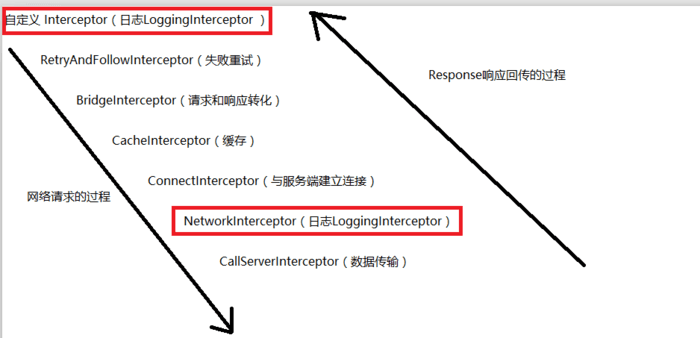
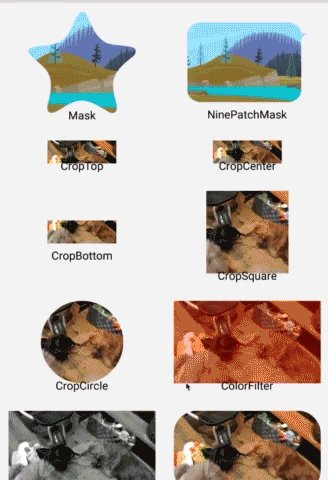

简介
本文收集 Android 常用的框架和各种库的使用示例。
OkHttp
Volley, Retrofit, android-async-http 帮你封装了具体的请求，线程切换以及数据转换。
而 OkHttp 是基于 http 协议封装的一套请求客户端，虽然它也可以开线程，但根本上它更偏向真正的请求，跟 HttpClient, HttpUrlConnection 的职责是一样的。
OkHttp 用于替代 HttpUrlConnection 和 Apache HttpClient, ANDROID API 23 里已移除 HttpClient。
OkHttp 是要依赖于 Okio 的，因为所有的 http 请求都是基于流的，Okio 是对流的再次封装的一个工具框架。
Retrofit, Picasso, OkHttp, Okio 都是 Square 公司开源库。
compile 'com.squareup.okhttp3:okhttp:3.9.0'
compile 'com.squareup.io:okio:1.13.0' // 如果只使用 Okio
Okio 简介
Okio 是一个包装了 java.io 和 java.nio api
的库，以便可以更容易的访问、存储以及处理数据。
Okio 优化了缓存，使 io 操作更高效。
Source 和 Sink 类似于 InputStream 和 OutputStream，是 io 操作的顶级接口类。Source 用于读，Sink 用于写。
Source 对象每次 read，Sink 对象每次 write 都需要一个 Buffer 对象，Buffer 管理着循环双向链表 Segment，每次读写数据都先保存在 segment 中进行缓冲，BufferedSource 和 BufferedSink 进行读写操作时都是间接调用 Buffer 对 Segment 的操作来完成的，整个过程层层嵌套还是有点绕的。
Segment 是链表的结构，读取和写入都是将熟据先放入 Segment 中。当新写入数据，就通过链表加入数据，我们写入的数据都是存储在 Segment 中的。写入数据成功后，会调用 sink 的 write 方法，而这个 write 方法，就是前面 Sink 类中的方法，这里获取之前存储在 Segment 中的数据，然后用 OutputStream 的 write 方法，将数据写入到需要写入的地方，然后调用 Segment 的 pop 方法，释放之前存储的内容。
Okio 使用
Okio.sink(new File("***"));
Okio.sink(new FileOutputStream(new File("***")));
Okio.sink(new Socket("****",888));
Okio.source(new File("***"));
Okio.source(new FileInputStream(new File("***")));
Okio.source(new Socket("****",888));
BufferedSink bufferedSink = Okio.buffer(Okio.sink(new File("***")));
bufferedSink.writeInt(1);
BufferedSource bufferedSource = Okio.buffer(Okio.source(new File("***")));
bufferedSource.readInt();
// 网络请求中可能会用到 Gzip 功能
GzipSink gzipSink = new GzipSink(Okio.sink(new File("***")));
BufferedSink bufferedSink1 = Okio.buffer(gzipSink);
bufferedSink1.writeInt(1);
Okio 实战
读写文本文件
private String path = "./source.txt"; public void read() { try { Source mSource = Okio.source(new File(path)); BufferedSource mBufferedSource = Okio.buffer(mSource); String tmp = null; while((tmp = mBufferedSource.readUtf8Line()) != null) { System.out.println(tmp); } mBufferedSource.close(); } catch (IOException e) { e.printStackTrace(); } } public void write() { try { String str = "This is a text file.\nThis is a test!"; Sink mSink = Okio.sink(new File(path)); // buffer 方法返回真实的 RealBufferedSink BufferedSink mBufferedSink = Okio.buffer(mSink); mBufferedSink.writeUtf8(str); mBufferedSink.flush(); mBufferedSink.close(); } catch (IOException e) { e.printStackTrace(); } }带进度复制文件 -- 采用装饰 Forwarding 流的方式来监控和拦截一些操作
class CountingSink extends ForwardingSink { private long bytesWritten = 0; private Listen listen; private File file; private long totalLength; public CountingSink(Sink delegate, File file, Listen listen) { super(delegate); this.listen = listen; this.file = file; totalLength = contentLength(); } public long contentLength() { if (file != null) { return file.length(); } else { return 0; } } @Override public void write(Buffer source, long byteCount) throws IOException { super.write(source, byteCount); bytesWritten += byteCount; listen.onProgress(bytesWritten, totalLength); } interface Listen { void onProgress(long bytesWritten, long contentLength); } } public void copy(String src, String target) { File fileSrc = new File(src); File fileCopy = new File(target); CountingSink.Listen listen = new CountingSink.Listen() { @Override public void onProgress(long bytesWritten, long contentLength) { float pos = bytesWritten * 1.0f / contentLength; System.out.println(pos);// 输出进度信息 } }; BufferedSink bufferedSink = null; Source source = null; try { CountingSink countingSink = new CountingSink(Okio.sink(fileCopy), fileSrc, listen); bufferedSink = Okio.buffer(countingSink); source = Okio.source(fileSrc); bufferedSink.writeAll(source); bufferedSink.flush(); } catch (IOException e) { e.printStackTrace(); } finally { try { bufferedSink.close(); source.close(); } catch (IOException e) { e.printStackTrace(); } } }
OkHttp 使用
Java 使用
/**
* OkHttp 使用步骤
* 1.构造一个 OkHttpClient(一般使用单例模式)
* 2.构陷一个 Request 请求对象
* 3.执行请求
*/
public class JavaOkHttpUtil {
private static volatile JavaOkHttpUtil okHttpUtil;
private OkHttpClient okHttpClient;
private JavaOkHttpUtil() {
okHttpClient = new OkHttpClient();
}
public static JavaOkHttpUtil getInstance() {
if (okHttpUtil == null) {
synchronized (JavaOkHttpUtil.class) {
if (okHttpUtil == null) {
okHttpUtil = new JavaOkHttpUtil();
}
}
}
return okHttpUtil;
}
public ResponseBody syncGetResponseBody(String url) {
return syncGetResponseBody(url, null);
}
public ResponseBody syncGetResponseBody(String url, String[][] headers) {
Request.Builder builder = new Request.Builder();
if (null != headers) {
for (String[] header : headers) {
builder.addHeader(header[0], header[1]);
}
}
Request request = builder.url(url).build();
try {
Response response = okHttpClient.newCall(request).execute();
if (null != response && response.isSuccessful()) {
return response.body();
}
} catch (IOException e) {
e.printStackTrace();
}
return null;
}
public String syncGetForString(String url) {
return syncGetForString(url, null);
}
public String syncGetForString(String url, String[][] headers) {
String result = null;
ResponseBody body = syncGetResponseBody(url, headers);
if (null != body) {
try {
result = body.string();
} catch (IOException e) {
e.printStackTrace();
}
}
return result;
}
public ResponseBody syncPostResponseBody(String url) {
return syncPostResponseBody(url, null, null);
}
public ResponseBody syncPostResponseBody(String url, String[][] headers) {
return syncPostResponseBody(url, headers, null);
}
public ResponseBody syncPostResponseBody(String url, HashMap<String, String> args) {
return syncPostResponseBody(url, null, args);
}
public ResponseBody syncPostResponseBody(String url, String[][] headers, HashMap<String, String> args) {
Request.Builder builder = new Request.Builder();
if (null != headers) {
for (String[] header : headers) {
builder.addHeader(header[0], header[1]);
}
}
FormBody.Builder bodyBuilder = new FormBody.Builder();
if (null != args) {
for (Map.Entry<String, String> entry : args.entrySet()) {
bodyBuilder.add(entry.getKey(), entry.getValue());
}
}
Request request = builder.url(url).post(bodyBuilder.build()).build();
try {
Response response = okHttpClient.newCall(request).execute();
if (null != response && response.isSuccessful()) {
return response.body();
}
} catch (IOException e) {
e.printStackTrace();
}
return null;
}
public String syncPostForString(String url) {
return syncPostForString(url, null, null);
}
public String syncPostForString(String url, String[][] headers) {
return syncPostForString(url, headers, null);
}
public String syncPostForString(String url, HashMap<String, String> args) {
return syncPostForString(url, null, args);
}
public String syncPostForString(String url, String[][] headers, HashMap<String, String> args) {
String result = null;
ResponseBody body = syncPostResponseBody(url, headers, args);
if (null != body) {
try {
result = body.string();
} catch (IOException e) {
e.printStackTrace();
}
}
return result;
}
public void aysncGetResponseBody(String url, final GeneralCallBack callback) {
aysncGetResponseBody(url, null , callback);
}
public void aysncGetResponseBody(String url, String[][] headers, final GeneralCallBack callback) {
Request.Builder builder = new Request.Builder();
if (null != headers) {
for (String[] header : headers) {
builder.addHeader(header[0], header[1]);
}
}
Request request = builder.url(url).build();
okHttpClient.newCall(request).enqueue(new Callback() {
@Override
public void onFailure(Call call, IOException e) {
callback.onFailure();
}
@Override
public void onResponse(Call call, Response response) throws IOException {
if(null != response && response.isSuccessful()) {
callback.onSucess(response.body());
}
}
});
}
public void aysncPostResponseBody(String url, String[][] headers, final GeneralCallBack callback) {
aysncPostResponseBody(url, headers, null, callback);
}
public void aysncPostResponseBody(String url, HashMap<String, String> args, final GeneralCallBack callback) {
aysncPostResponseBody(url, null, args, callback);
}
public void aysncPostResponseBody(String url, String[][] headers, HashMap<String, String> args, final GeneralCallBack callback) {
Request.Builder builder = new Request.Builder();
if (null != headers) {
for (String[] header : headers) {
builder.addHeader(header[0], header[1]);
}
}
FormBody.Builder bodyBuilder = new FormBody.Builder();
if (null != args) {
for (Map.Entry<String, String> entry : args.entrySet()) {
bodyBuilder.add(entry.getKey(), entry.getValue());
}
}
Request request = builder.url(url).post(bodyBuilder.build()).build();
okHttpClient.newCall(request).enqueue(new Callback() {
@Override
public void onFailure(Call call, IOException e) {
callback.onFailure();
}
@Override
public void onResponse(Call call, Response response) throws IOException {
if(null != response && response.isSuccessful()) {
callback.onSucess(response.body());
}
}
});
}
public void asyncGetForString(String url, StringCallBack callBack) {
aysncGetResponseBody(url, null, callBack);
}
public void asyncGetForString(String url, String[][] headers, StringCallBack callBack) {
aysncGetResponseBody(url, headers, callBack);
}
public void asyncPostForString(String url, StringCallBack callBack) {
aysncPostResponseBody(url, null, null, callBack);
}
public void asyncPostForString(String url, String[][] headers, StringCallBack callBack) {
aysncPostResponseBody(url, headers, null, callBack);
}
public void asyncPostForString(String url, HashMap<String, String> args, StringCallBack callBack) {
aysncPostResponseBody(url, null, args, callBack);
}
public void asyncPostForString(String url, String[][] headers, HashMap<String, String> args, StringCallBack callBack) {
aysncPostResponseBody(url, headers, args, callBack);
}
public static abstract class GeneralCallBack {
public void onFailure(){}
public void onSucess(ResponseBody body){}
public abstract void onFailureInMainThread();
}
public static abstract class StringCallBack extends GeneralCallBack {
@Override
public void onSucess(ResponseBody body) {
if(null != body) {
try {
onResponse(body.string());
} catch (IOException e) {
e.printStackTrace();
}
} else {
onFailure();
}
}
public abstract void onResponse(String result);
}
}
Android 使用 -- 相对于 Java 代码，Android 使用加了线程切换。
public class AndroidOkHttpUtil {
private static volatile AndroidOkHttpUtil okHttpUtil;
private OkHttpClient okHttpClient;
private static Handler mHandler;
private static final int BODY_REQUEST_SUCCESS = 0x0;
private static final int STRING_REQUEST_SUCCESS = 0x2;
private static final int REQUEST_FAILD = 0x01;
private Interceptor mAppInterceptor;
private Interceptor mNetworkInterceptor;
private Interceptor appInterceptor = new Interceptor() {
@Override
public Response intercept(Chain chain) throws IOException {
return null == mAppInterceptor ? chain.proceed(chain.request()) : mAppInterceptor.intercept(chain);
}
};
private Interceptor networkInterceptor = new Interceptor() {
@Override
public Response intercept(Chain chain) throws IOException {
return null == mNetworkInterceptor ? chain.proceed(chain.request()) : mNetworkInterceptor.intercept(chain);
}
};
@SuppressLint("HandlerLeak")
private AndroidOkHttpUtil() {
okHttpClient = new OkHttpClient.Builder()
.addInterceptor(appInterceptor)
.addNetworkInterceptor(networkInterceptor)
.build();
mHandler = new Handler() {
@Override
public void handleMessage(Message msg) {
super.handleMessage(msg);
switch (msg.what) {
case BODY_REQUEST_SUCCESS:
HashMap<String, Object> map = (HashMap<String, Object>) msg.obj;
BitmapCallBack callBack = (BitmapCallBack) map.get("call");
Bitmap response = (Bitmap) map.get("response");
callBack.onResponseInMainThread(response);
break;
case STRING_REQUEST_SUCCESS:
HashMap<String, Object> map2 = (HashMap<String, Object>) msg.obj;
StringCallBack strCallBack = (StringCallBack) map2.get("call");
String strResponse = (String) map2.get("response");
strCallBack.onResponseInMainThread(strResponse);
break;
case REQUEST_FAILD:
GeneralCallBack back = (GeneralCallBack)msg.obj;
back.onFailureInMainThread();
break;
}
}
};
}
public static AndroidOkHttpUtil getInstance() {
if (okHttpUtil == null) {
synchronized (AndroidOkHttpUtil.class) {
if (okHttpUtil == null) {
okHttpUtil = new AndroidOkHttpUtil();
}
}
}
return okHttpUtil;
}
public void setAppInterceptor(Interceptor appInterceptor) {
this.mAppInterceptor = appInterceptor;
}
public void setNetworkInterceptor(Interceptor networkInterceptor) {
this.mNetworkInterceptor = networkInterceptor;
}
public ResponseBody syncGetResponseBody(String url) {
return syncGetResponseBody(url, null);
}
public ResponseBody syncGetResponseBody(String url, String[][] headers) {
Request.Builder builder = new Request.Builder();
if (null != headers) {
for (String[] header : headers) {
builder.addHeader(header[0], header[1]);
}
}
Request request = builder.url(url).build();
try {
Response response = okHttpClient.newCall(request).execute();
if (null != response && response.isSuccessful()) {
return response.body();
}
} catch (IOException e) {
e.printStackTrace();
}
return null;
}
public String syncGetForString(String url) {
return syncGetForString(url, null);
}
public String syncGetForString(String url, String[][] headers) {
String result = null;
ResponseBody body = syncGetResponseBody(url, headers);
if (null != body) {
try {
result = body.string();
} catch (IOException e) {
e.printStackTrace();
}
}
return result;
}
public ResponseBody syncPostResponseBody(String url) {
return syncPostResponseBody(url, null, null);
}
public ResponseBody syncPostResponseBody(String url, String[][] headers) {
return syncPostResponseBody(url, headers, null);
}
public ResponseBody syncPostResponseBody(String url, HashMap<String, String> args) {
return syncPostResponseBody(url, null, args);
}
public ResponseBody syncPostResponseBody(String url, String[][] headers, HashMap<String, String> args) {
Request.Builder builder = new Request.Builder();
if (null != headers) {
for (String[] header : headers) {
builder.addHeader(header[0], header[1]);
}
}
FormBody.Builder bodyBuilder = new FormBody.Builder();
if (null != args) {
for (Map.Entry<String, String> entry : args.entrySet()) {
bodyBuilder.add(entry.getKey(), entry.getValue());
}
}
Request request = builder.url(url).post(bodyBuilder.build()).build();
try {
Response response = okHttpClient.newCall(request).execute();
if (null != response && response.isSuccessful()) {
return response.body();
}
} catch (IOException e) {
e.printStackTrace();
}
return null;
}
public String syncPostForString(String url) {
return syncPostForString(url, null, null);
}
public String syncPostForString(String url, String[][] headers) {
return syncPostForString(url, headers, null);
}
public String syncPostForString(String url, HashMap<String, String> args) {
return syncPostForString(url, null, args);
}
public String syncPostForString(String url, String[][] headers, HashMap<<String, String> args) {
String result = null;
ResponseBody body = syncPostResponseBody(url, headers, args);
if (null != body) {
try {
result = body.string();
} catch (IOException e) {
e.printStackTrace();
}
}
return result;
}
public void aysncGetResponseBody(String url, final GeneralCallBack callback) {
aysncGetResponseBody(url, null , callback);
}
public void aysncGetResponseBody(String url, String[][] headers, final GeneralCallBack callback) {
Request.Builder builder = new Request.Builder();
if (null != headers) {
for (String[] header : headers) {
builder.addHeader(header[0], header[1]);
}
}
Request request = builder.url(url).build();
okHttpClient.newCall(request).enqueue(new Callback() {
@Override
public void onFailure(Call call, IOException e) {
callback.onFailure();
}
@Override
public void onResponse(Call call, Response response) throws IOException {
if(null != response && response.isSuccessful()) {
callback.onSucess(response.body());
}
}
});
}
public void aysncPosResponseBody(String url, final BitmapCallBack callback) {
aysncPostResponseBody(url, null, null, callback);
}
public void aysncPostResponseBody(String url, String[][] headers, final GeneralCallBack callback) {
aysncPostResponseBody(url, headers, null, callback);
}
public void aysncPostResponseBody(String url, HashMap<String, String> args, final GeneralCallBack callback) {
aysncPostResponseBody(url, null, args, callback);
}
public void aysncPostResponseBody(String url, String[][] headers, HashMap<String, String> args, final GeneralCallBack callback) {
Request.Builder builder = new Request.Builder();
if (null != headers) {
for (String[] header : headers) {
builder.addHeader(header[0], header[1]);
}
}
FormBody.Builder bodyBuilder = new FormBody.Builder();
if (null != args) {
for (Map.Entry<String, String> entry : args.entrySet()) {
bodyBuilder.add(entry.getKey(), entry.getValue());
}
}
Request request = builder.url(url).post(bodyBuilder.build()).build();
okHttpClient.newCall(request).enqueue(new Callback() {
@Override
public void onFailure(Call call, IOException e) {
callback.onFailure();
}
@Override
public void onResponse(Call call, Response response) throws IOException {
if(null != response && response.isSuccessful()) {
callback.onSucess(response.body());
}
}
});
}
public void asyncGetForString(String url, StringCallBack callBack) {
aysncGetResponseBody(url, null, callBack);
}
public void asyncGetForString(String url, String[][] headers, StringCallBack callBack) {
aysncGetResponseBody(url, headers, callBack);
}
public void asyncPostForString(String url, StringCallBack callBack) {
aysncPostResponseBody(url, null, null, callBack);
}
public void asyncPostForString(String url, String[][] headers, StringCallBack callBack) {
aysncPostResponseBody(url, headers, null, callBack);
}
public void asyncPostForString(String url, HashMap<String, String> args, StringCallBack callBack) {
aysncPostResponseBody(url, null, args, callBack);
}
public void asyncPostForString(String url, String[][] headers, HashMap<String, String> args, StringCallBack callBack) {
aysncPostResponseBody(url, headers, args, callBack);
}
public static abstract class GeneralCallBack {
public void onFailure(){}
public void onSucess(ResponseBody body){}
public abstract void onFailureInMainThread();
}
public static abstract class BitmapCallBack extends GeneralCallBack {
@Override
public void onSucess(ResponseBody body) {
if(null != body) {
InputStream in = body.byteStream();
HashMap<String, Object> map = new HashMap<>();
map.put("call", this);
map.put("response", BitmapFactory.decodeStream(in));
mHandler.obtainMessage(BODY_REQUEST_SUCCESS, map).sendToTarget();
} else {
onFailure();
mHandler.obtainMessage(REQUEST_FAILD, this).sendToTarget();
}
}
public abstract void onResponseInMainThread(Bitmap bitmap);
}
public static abstract class StringCallBack extends GeneralCallBack {
public void onSucess(ResponseBody body) {
if(null != body) {
try {
String result = body.string();
onResponse(result);
HashMap<String, Object> map = new HashMap<>();
map.put("call", this);
map.put("response", result);
mHandler.obtainMessage(STRING_REQUEST_SUCCESS, map).sendToTarget();
} catch (IOException e) {
e.printStackTrace();
}
} else {
onFailure();
mHandler.obtainMessage(REQUEST_FAILD, this).sendToTarget();
}
}
public void onResponse(String result){}
public abstract void onResponseInMainThread(String result);
}
}
OkHttp 拦截器
拦截器可以一次性对所有的请求和返回值进行修改；
拦截器可以一次性对请求的参数和返回的结果进行编码；
拦截器可以对所有的请求做统一的日志记录；
其他需要对请求和返回进行统一处理的需求。
OkHttp 中的拦截器分 2 个：APP 层面的拦截器和网络请求层面的拦截器，如下图：

拦截器的调用过程：(除了红色圈出的拦截器之外都是系统提供的拦截器，这整个过程是递归的执行过程)

OkHttpClient okHttpClient = new OkHttpClient.Builder()
.addInterceptor(new LoggingInterceptor()) // 添加应用层面的拦截器
.addNetworkInterceptor(networkInterceptor) // 添加网络请求层面的拦截器
.build();
/** 使用拦截器记录日志 */
class LoggingInterceptor implements Interceptor {
@Override
public Response intercept(Interceptor.Chain chain) throws IOException {
Request request = chain.request();
long t1 = System.nanoTime();
logger.info(String.format("Sending request %s on %s%n%s",
request.url(), chain.connection(), request.headers()));
Response response = chain.proceed(request);
long t2 = System.nanoTime();
logger.info(String.format("Received response for %s in %.1fms%n%s",
response.request().url(), (t2 - t1) / 1e6d, response.headers()));
return response;
}
}
Retrofit
Retrofit 一个针对 Android 和 Java 类型安全的 http 客户端。
Retrofit, Picasso, OkHttp, Okio 都是 Square 公司开源库。其中 Retrofit 和 Picasso 依赖 OkHttp, OkHttp 依赖 Okio。
compile 'com.squareup.retrofit2:retrofit:2.3.0'
Retrofit 使用基本步骤：
/** 1.构建 Retrofit 对象实例
* BASE_URL 为公用，以 '/' 结尾，如： http://api.lesson1234.com:8080/ilesson-data-manager/
*/
Retrofit retrofit = new Retrofit.Builder()
.client(mOkHttpClient); // 可构建自己的 OkHttpClient, 推荐使用 Singleton
.baseUrl(BASE_URL)
.build();
/** 2.定义访问接口
* 这里使用 GET 方法访问，最终的 URL 为：
* http://api.lesson1234.com:8080/ilesson-data-manager/OfflineExtraServlet？bid=3&cp=1
*/
public interface BlogService {
@GET("OfflineExtraServlet")
Call<ResponseBody> getBlog(@Query("bid") int bid, @Query("cp") int cp);
}
/** 3.调用接口, 在 Android 中使用时，Retrofit 帮我们将回调切换到了主线程 */
BlogService service = retrofit.create(BlogService.class);
Call<ResponseBody> call = service.getBlog(3, 1); // 传入 bid 和 cp
// 用法和 OkHttp 的 call 如出一辙, 不同的是:如果是 Android 系统回调方法执行在主线程
call.enqueue(new Callback<ResponseBody>() {
@Override
public void onResponse(Call<ResponseBody> call, Response<ResponseBody> response) {
// 这里拿到 Response 对象
}
@Override
public void onFailure(Call<ResponseBody> call, Throwable t) {
t.printStackTrace();
}
});
Retrofit 注解 -- 共 22 个注解
请求方法类 --
GET,POST,HEAD,OPTIONS,PUT,DELETE,PATCH,HTTP分别对应 HTTP 的请求方法，接收一个字符串表示接口路径，与 baseUrl 组成完整的 Url，可以使用变量，如 {id} ，并使用 @Path("id") 注解为 {id} 提供值。
public interface BlogService{ @GET("BlogServlet") // Get 方法, 参数可以用 Query 传入 Call<ResponseBody> getBlog(@Query("bid") int id); @GET("blog/{id}") // 路径由 Path 传入 Call<ResponseBody> getBlog(@Path("id") int id); @POST("BlogServlet") // Post 方法 Call<ResponseBody> getBlog(@Query("id") int id); // 可用于替代前面的 7 个，及其他扩展方法 @HTTP(method = "get", path = "blog/{id}", hasBody = false) Call<ResponseBody> getBlog(@Path("id") int id); }标记类 --
FormUrlEncoded,Multipart,Streaming/** FormUrlEncoded -- 请求体是 From 表单 * Multipart -- 请求体是支持文件上传的 From 表单 * Streaming -- 响应体的数据用流的形式返回 */
参数类 --
Headers,Header,Body,Field,FieldMap,Part,PartMap,Path,Query,QueryMap,Url/** Headers -- 添加请求头，作用于方法 * Header -- 添加不固定的 Header， 作用于方法参数 * Body -- 非表单请求体 * Field -- 表单字段，与 FieldMap、FormUrlEncoded 配合, 支持数组和实现了 Iterable 接口的类型 * FieldMap -- 表单字段，与 Field、FormUrlEncoded 配合；接受 Map<<String, String> 类型 * Part -- 表单字段，与 PartMap 配合，适合文件上传情况, 支持数组和实现了 Iterable 接口的类型 * PartMap -- 表单字段，与 Part 配合，适合文件上传情况；默认接受 Map<String, RequestBody> 类型 * Path -- 用于 URL 路径 * Query -- 用于 URL 参数, 支持数组和实现了 Iterable 接口的类型 * QueryMap -- 用于 URL 参数， 接受 Map<<String, String> 类型 * Url -- 支持的类型有 okhttp3.HttpUrl, String, java.net.URI, android.net.Uri */ @Headers("Cache-Control: max-age=640000") @GET("widget/list") Call<ResponseBody> widgetList(); @GET("user") Call<User> getUser(@Header("Authorization") String authorization) @POST("users/new") Call<User> createUser(@Body User user); @FormUrlEncoded @POST("v1/login") Call<ResponseBody> userLogin(@Field("phone") String phone, @Field("password") String password);
Gson 与 Converter
默认情况下 Retrofit 只支持将 HTTP 的响应体转换换为 ResponseBody，而 Converter
就是 Retrofit 为我们提供用于将 ResponseBody 转换为我们想要的类型。
/** 1. 引入 Retrofit 的 Gson 支持: */
compile 'com.squareup.retrofit2:converter-gson:2.3.0'
// 同时还有其他的转换器，参见官方网站，下面这个是 xml 转换器
compile 'com.squareup.retrofit2:converter-simplexml:2.3.0'
/** 2. 实体类 */
class Error {
int errorCode;
String errorString;
}
/** 3. 构建接口 */
public interface BlogService {
@GET("OfflineExtraServlet")
Call<Error> getContent(@Query("bid") int bid, @Query("cp") int cp);
}
/** 4. 调用接口，构建时要将 ConverterFactory 加入 */
Retrofit retrofit = new Retrofit.Builder()
.baseUrl(BASE_URL)
.addConverterFactory(GsonConverterFactory.create())
.build();
BlogService service = retrofit.create(BlogService.class);
Call<Error> call = service.getContent(3, 1);
call.enqueue(new Callback<Error>() {
@Override
public void onResponse(Call<Error> call, Response<Error> response) {
// resonpse.body() 自动转换为 Error 类型
}
@Override
public void onFailure(Call<Error> call, Throwable t) {
}
});
自定义 Converter
public static class StringConverterFactory extends Converter.Factory {
public static final StringConverterFactory INSTANCE = new StringConverterFactory();
public static StringConverterFactory create() {
return INSTANCE;
}
// 我们只关实现从 ResponseBody 到 String 的转换，所以其它方法可不覆盖
@Override
public Converter<ResponseBody, ?> responseBodyConverter(
Type type, Annotation[] annotations, Retrofit retrofit) {
if (type == String.class) {
return StringConverter.INSTANCE;
}
// 其它类型我们不处理，返回 null 就行
return null;
}
}
/** 如果有多个 ConverterFactory 都支持同一种类型，那么就是只有第一个才会被使用 */
Retrofit retrofit = new Retrofit.Builder()
.baseUrl(BASE_URL)
// 如是有 Gson 这类的Converter 一定要放在其它前面
.addConverterFactory(StringConverterFactory.create())
.addConverterFactory(GsonConverterFactory.create())
.build();
RxJava 与 CallAdapter
RxJava 主要用于观察者模式和异步线程切换，具体介绍查看： RxJava
/** 1. 引入 Retrofit 的 RxJava2 支持 */
compile 'com.squareup.retrofit2:adapter-rxjava2:2.3.0'
/** 2. 实体类 */
class Error {
int errorCode;
String errorString;
}
/** 3. 构建接口 */
public interface BlogService {
@GET("OfflineExtraServlet")
Observable<Error> getContent(@Query("bid") int bid, @Query("cp") int cp);
}
/** 4. 调用接口，构建时要将 CallAdapterFactory 加入 */
Retrofit retrofit = new Retrofit.Builder()
.baseUrl(BASE_URL)
.addConverterFactory(GsonConverterFactory.create())
.addCallAdapterFactory(RxJava2CallAdapterFactory.create()) // RxJava2 加入
.build();
BlogService service = retrofit.create(BlogService.class);
service.getContent(3, 1)
.observeOn(Schedulers.io()) // Observer 的 onNext 在子线程执行，详情看 RxJava
.subscribe(new Observer<Error>() {
@Override
public void onSubscribe(Disposable d) {
System.out.println("onSubscribe:" + Thread.currentThread().getId());
}
@Override
public void onNext(Error error) {
System.out.println(Thread.currentThread().getId() + ":" + error.errorString);
}
@Override
public void onError(Throwable e) {
}
@Override
public void onComplete() {
System.out.println("onComplete");
}
});
Volley
Volley 项目主页：Volley
implementation 'com.android.volley:volley:1.1.1'
Volley 1.x JavaDoc: Javadoc
Volley 的特点：特别适合数据量小，通信频繁的网络操作。
Volley 不适合于大型下载或流操作，因为 Volley 在解析期间将所有响应保存在内存中。
Volley 基本使用：
private RequestQueue queue;
public void request(String url) {
queue = Volley.newRequestQueue(this); // 构建一个请求队列
// 构建一个类型为 String 的请求对象，还有 JsonRequest, ImageRequest..., 都是 Request 的子类
StringRequest stringRequest = new StringRequest(Request.Method.GET, url, response -> {
text.setText(response);
}, error -> {
LogUtil.log(error.getMessage());
});
stringRequest.setTag(TAG); // 设置一个标志，以便可以取消请求
queue.add(stringRequest); // 将请求加入请求队列，执行 Http 请求
}
@Override
protected void onDestroy() {
super.onDestroy();
if(queue != null) {
queue.cancelAll(TAG); // 取消请求
}
}
Volley 的重要类：
-
Volley -- 主要有两个静态方法，都是返回 RequestQueue 的请求队列
/* 构建请求队列(阻塞队列，一直等待数据，一个缓存队列和 n 个网络请求队列， n 默认为 4)，并在构建后启动这些队列 */ public class Volley { // 构建请求队列, 在 API 9 以前使用 HttpClient 做网络请求，在 API 9 及以后使用 HttpUrlConnection 做网络请求 public static RequestQueue newRequestQueue(Context context) {...} // 使用自定义的 BaseHttpStack 做网络请求，比如使用 OkHttp 来做网络请求 public static RequestQueue newRequestQueue(Context context, BaseHttpStack stack) {...} } -
Network / BasicNetwork-- Volley 使用的是实现类 BasicNetwork， 它调用 BasicHttpStack 处理请求，并将结果转换为可被 ResponseDelivery 处理的 NetworkResponse
public interface Network { NetworkResponse performRequest(Request<?> request) throws VolleyError; } public class BasicNetwork implements Network { public BasicNetwork(BaseHttpStack httpStack) {} public BasicNetwork(BaseHttpStack httpStack, ByteArrayPool pool) {} // 调用 BasicHttpStack 处理请求，并将结果转换为 NetworkResponse public NetworkResponse performRequest(Request<?> request) {...} } // HttpStack 已不推荐使用，使用 BaseHttpStack 来处理网络请求 public abstract class BaseHttpStack implements HttpStack { // 实现此方法来做网络请求，返回的结果是 HttpResponse public abstract HttpResponse executeRequest(Request<?> request, Map<String, String> request) throws IOException, AuthFailureError; } -
RequestQueue -- 是请求队列，维护了两个基于优先级的 Request 队列，缓存请求队列和网络请求队列。
放在缓存请求队列中的 Request，将通过缓存获取数据；放在网络请求队列中的 Request，将通过网络获取数据。
public class RequestQueue { /** 请求事件 */ public @interface RequestEvent { public static final int REQUEST_QUEUED = 0; // 入队 public static final int REQUEST_CACHE_LOOKUP_STARTED = 1; // 开始从 Cache 取数据 public static final int REQUEST_CACHE_LOOKUP_FINISHED = 2; // 完成从 Cache 取数据 public static final int REQUEST_NETWORK_DISPATCH_STARTED = 3; // 开始从 Network 取数据 public static final int REQUEST_NETWORK_DISPATCH_FINISHED = 4; // 完成从 Network 取数据 public static final int REQUEST_FINISHED = 5; // 请求完成 } /** 请求事件监听器 */ public interface RequestEventListener { void onRequestEvent(Request<?> request, int event); } /** 用于过于需要取消的请求，在 cancelAll(RequestFilter) 方法，将会取消返回 true 的请求 */ public interface RequestFilter { boolean apply(Request<?> request); } public RequestQueue(Cache cache, Network network) {...} public RequestQueue(Cache cache, Network network, int threadPoolSize) {...} public RequestQueue(Cache cache, Network network, int threadPoolSize, ResponseDelivery d) {...} }<T> Request<T> add(Request<T> request)-- 将请求加入队列，此时便开始执行网络请求；会调用 request.shouldCache() 判断是否使用缓存，如果使用加入缓存队列；如果不使用，加入网络队列void cancelAll(Object tag)-- 取消指定 tag 的请求void cancelAll(RequestQueue.RequestFilter filter)-- 取消返回为 true 的请求void addRequestEventListener(RequestQueue.RequestEventListener listener)-- 添加请求事件监听器void removeRequestEventListener(RequestQueue.RequestEventListener listener)-- 移除指定的请求事件监听器void start()-- 启动此队列中的调度程序，先调用了 stop() 方法，退出原来的队列void stop()-- 停止此队列中的调度程序Cache getCache()-- 获取正在使用的缓存实例int getSequenceNumber()-- 获取序列号
-
Request 及子类 -- Http 请求基类，保存了请求方式，响应结果等请求信息
Request ├─ StringRequest -- 返回响应结果为 String 类型的数据 ├─ JsonRequest -- 返回为 Json 的抽象类 │ ├─ JsonObjectRequest -- 返回响应结果为 JsonObject 类型的数据, 使用 JSONObject 转化 String │ └─ JsonArrayRequest -- 同上，返回响应结果为 JsonArray 类型的数据 ├─ ImageRequest -- 返回响应结果为 Bitmap 类型的数据 └─ ClearCacheRequest -- 用于清除缓存的合成请求 public abstract class Request<T> implements Comparable<Request<T>> { public interface Method { int DEPRECATED_GET_OR_POST = -1; int GET = 0; int POST = 1; int PUT = 2; int DELETE = 3; int HEAD = 4; int OPTIONS = 5; int TRACE = 6; int PATCH = 7; } public enum Priority { LOW, NORMAL, HIGH, IMMEDIATE } public Request(int method, String url, Response.ErrorListener listener) {...} }int getMethod()-- 获取请求方法, Request.MethodString getUrl()-- 获取请求 URLResponse.ErrorListener getErrorListener()-- 获取错误监听器Map<String, String> getHeaders()-- 获取请求头信息protected Map<String, String> getParams()-- 获取请求参数protected String getParamsEncoding()-- 获取请求编码byte[] getBody()-- 获取请求体String getBodyContentType()-- 获取请求体类型Request<?> setShouldCache(boolean shouldCache)-- 设置是否应缓存对此请求的响应，默认为 trueboolean shouldCache()-- 获取是否缓存了对此请求的响应String getCacheKey()-- 获取用于缓存的 key, GET 使用 url, 其它使用 ${method}-urlCache.Entry getCacheEntry()-- 获取缓存的内容，如果 shouldCache() 返回 false，这里始终为 NULLRequest<?> setCacheEntry(Cache.Entry entry)-- 设置缓存的内容private StringRequest stringRequest; private String result; public void request(View v) { queue = Volley.newRequestQueue(this); stringRequest = new StringRequest(Request.Method.GET, url, response -> { text.setText(response); Cache.Entry entry = stringRequest.getCacheEntry(); if(null != entry) { result = new String(entry.data); } }, error -> { LogUtil.log(error.getMessage()); }); stringRequest.setTag(TAG); if(null != result) { // 如果缓存不为空，直接使用缓存 text.setText("from cache -> " + result); } else { queue.add(stringRequest); } }Request<?> setTag(Object tag)-- 为此请求设置一个标签Object getTag()-- 获取此请求的标签boolean isCanceled()-- 请求是否已被取消，显式调用cancel方法void cancel()-- 取消请求int getTimeoutMs()-- 获取请求超时时间，默认设置为 2500 毫秒Request.Priority getPriority()-- 获取请求优先级Request<?> setSequence(int sequence)-- 设置此请求的序列号，如果同时有很多请求加入队列，因为在优先级相同的情况下compareTo方法使用了此值来比较，因此此值可能会决定加入队列的优先级int getSequence()-- 获取此请求的序列号void deliverError(VolleyError error)-- 向 ErrorListener 发送错误消息，这是主动的，不管是否有错误发生public void deliverError(VolleyError error) { Response.ErrorListener listener; synchronized (mLock) { listener = mErrorListener; } if (listener != null) { listener.onErrorResponse(error); // 直接回调了构造方法传入的 ErrorListener } }void markDelivered()-- 将此请求标记为已传递了响应boolean hasHadResponseDelivered()-- 此请求是否已传递了响应protected abstract void deliverResponse(T response)-- 传递响应protected abstract Response<T> parseNetworkResponse(NetworkResponse response)-- 将 NetworkResponse 转化为 Response<T>protected VolleyError parseNetworkError(VolleyError volleyError)-- 解析“networkError”并返回更具体的错误RetryPolicy getRetryPolicy()-- 获取重试策略Request<?> setRetryPolicy(RetryPolicy retryPolicy)-- 设置重试策略// Volley 默认使用了 DefaultRetryPolicy, 重试次数为 1, 超时为 2500 毫秒 public interface RetryPolicy { int getCurrentRetryCount(); // 返回当前重试计数 int getCurrentTimeout(); // 返回当前超时 void retry(VolleyError error); // 通过向超时应用回退来准备下一次重试 }Request<?> setShouldRetryServerErrors(boolean shouldRetryServerErrors)-- 设置如果出现 HTTP 5xx（服务器）错误，是否应重试请求boolean shouldRetryServerErrors()-- 获取 50X 时是否重试，默认 falseint getTrafficStatsTag()-- 默认返回 url 的 host 的 hashCode()Request<?> setRequestQueue(RequestQueue requestQueue)-- 设置此请求所在的 RequestQueuevoid addMarker(String tag)-- 将事件添加到此请求的事件日志；用于调试int compareTo(Request<T> other)-- 先比较优先级，如果相同比较 Sequence；如果同时执行的线程数比较多，将会根据此值来确定先将那个请求加入队列String toString()-- 请求的 String 表示
-
Cache / DiskBasedCache -- 缓存请求结果，Volley 默认使用的是基于 SDCard 的 DiskBasedCache(存储位置为:
rootDirectory = new File(context.getCacheDir(), "volley"))。NetworkDispatcher 得到请求结果后判断是否需要存储在 Cache，CacheDispatcher 会从 Cache 中取缓存结果。/** Cache 的两个实现类 * DiskBasedCache -- 缓存到 SDCard 指定目录的缓存实现，默认磁盘使用大小为 5MB，但可配置 * NoCache -- 不使用缓存(Cache 接口的空实现) */ public interface Cache { void initialize(); // 初始化 void invalidate(String key, boolean fullExpire); // 使缓存无效 void put(String key, Entry entry); // 用 key 缓存数据 Entry get(String key); // 获取指定 key 的缓存 void remove(String key); // 移除指定的缓存 void clear(); // 清除所有缓存 class Entry { public byte[] data; // 保存数据 public String etag; // 用于缓存一致性 public long serverDate; // 服务器报告的此响应的日期 public long lastModified; // 请求对象的最后修改日期 public long ttl; // TTL public long softTtl; // 用于此记录的软 TTL public Map<String, String> responseHeaders = Collections.emptyMap(); // 保存从服务器接收的响应头 public List<Header> allResponseHeaders; // 保存所有的响应头 public boolean isExpired() { // 是否已过期 return this.ttl < System.currentTimeMillis(); } public boolean refreshNeeded() { // 是否需要从原始数据源进行刷新 return this.softTtl < System.currentTimeMillis(); } } } -
CacheDispatcher / NetworkDispatcher -- 都是 Thread 的子类，在 Volley 创建队列的启动时，启动了 1 个 CacheDispatcher 和 4 个 NetworkDispatcher。
Volley 默认启用缓存，先将 Request 加入 CacheDispatcher 队列，如果没有缓存或者缓存的数据已经过期，那么加入 NetworkDispatcher 队列。
-
ResponseDelivery / ExecutorDelivery -- 用于传送响应，Volley 使用 ExecutorDelivery 来传送响应，在 RequestQueue 构造函数中传入了此参数，并且绑定到了主线程的 Looper 对象。
public interface ResponseDelivery { // 提交响应 void postResponse(Request<?> request, Response<?> response); // 提交响应 void postResponse(Request<?> request, Response<?> response, Runnable runnable); // 提交错误响应 void postError(Request<?> request, VolleyError error); } public class ExecutorDelivery implements ResponseDelivery { // 默认使用 Handler 提交响应，此 Handler 是主线程的：new Handler(Looper.getMainLooper()) public ExecutorDelivery(final Handler handler) {...} public ExecutorDelivery(Executor executor) {...} } -
ImageLoader / NetworkImageView -- 用于加载网络图片。
ImageLoader 需要使用一个请求队列和缓存机制来作为构造函数，可以参照后面的单列模式来使用。
ImageLoader 在做图片缓存的时候，设置了宽高和缩放类型，换句话说，缓存的图片是经过处理的，不在是网络上的原图片。
public class ImageLoader { /** 设置自定义的 ImageCache，可以是内存缓存，也可以是 Disk 缓存 */ public interface ImageCache { Bitmap getBitmap(String url); // 实现应该为：从缓存获取图片 void putBitmap(String url, Bitmap bitmap); // 实现应该为：将图片存入缓存 } /** 图像加载监听器接口 */ public interface ImageListener extends ErrorListener { /** 这里注意，如果缓存没有，那么此方法加载两次， * 第一次的 isImmediate 为 true, response 的 getBitmap() 为 null; * 第二次的 isImmediate 为 false, response 的 getBitmap() 才有图片 */ void onResponse(ImageContainer response, boolean isImmediate); // 来自 ErrorListener 接口的方法 // void onErrorResponse(VolleyError error); } /** 容器对象，用于包裹图像请求的所有数据 */ public class ImageContainer { public ImageContainer(Bitmap b, String url, String cacheKey, ImageListener listener) {...} public void cancelRequest() {...} public Bitmap getBitmap() {...} public String getRequestUrl() {...} } // 可以参照下面的单列模式来来用缓存 public ImageLoader(RequestQueue queue, ImageLoader.ImageCache imageCache) {...} }static ImageLoader.ImageListener getImageListener(ImageView view, int defaultImageResId, int errorImageResId)-- 构建一个新的 ImageListener 对象ImageLoader.ImageContainer get(String requestUrl, ImageLoader.ImageListener listener)-- 获取图像，使用 ImageRequest 从网络加载图像，加载的图像是经过处理的(宽高和缩放类型)，用于缓存的 cacheKey 也包括了这些信息。ImageLoader imageLoader = ...; // 如果是 ImageView, 使用以下的 ImageListener 可以自动设置默认图片和错误图片 ImageListener imageListener = ImageLoader.getImageListener(imageView, def, error); imageLoader.get(imageUrl, imageListener); // 如果不是 Bitmap，可以获取到 Bitmap 再处理 imageLoader.get(imageUrl, new ImageLoader.ImageListener() { @Override public void onResponse(ImageLoader.ImageContainer response, boolean isImmediate) { // response 中包含了返回的 Bitmap } @Override public void onErrorResponse(VolleyError error) {} });ImageLoader.ImageContainer get(String requestUrl, ImageLoader.ImageListener imageListener, int maxWidth, int maxHeight)-- 同上，指定最大宽高ImageLoader.ImageContainer get(String requestUrl, ImageLoader.ImageListener imageListener, int maxWidth, int maxHeight, ImageView.ScaleType scaleType)-- 同上，指定缩放类型boolean isCached(String requestUrl, int maxWidth, int maxHeight)-- 是否缓存了指定宽高的图像boolean isCached(String requestUrl, int maxWidth, int maxHeight, ImageView.ScaleType scaleType)-- 是否缓存了指定宽高和缩放类型的图像void setBatchedResponseDelay(int newBatchedResponseDelayMs)-- 如果多个请求同时加载到多张图片，每张图片的提交会延迟指定时间protected Request<Bitmap> makeImageRequest(String requestUrl, int maxWidth, int maxHeight, ImageView.ScaleType scaleType, String cacheKey)-- 构建一个 ImageRequest 请求protected void onGetImageSuccess(String cacheKey, Bitmap response)-- 获取成功protected void onGetImageError(String cacheKey, VolleyError error)-- 获取失败
NetworkImageView 是 ImageView 的子类，用于方便的从网络加载图片。
public class NetworkImageView extends ImageView { public NetworkImageView(Context context) {...} public NetworkImageView(Context context, AttributeSet attrs) {...} public NetworkImageView(Context context, AttributeSet attrs, int defStyle) {...} }void setImageUrl(String url, ImageLoader imageLoader)-- 网络图片的 Url 和 ImageLoader，将利用这个 ImageLoader 去获取网络图片void setDefaultImageBitmap(Bitmap defaultImage)-- 默认图片，加载图片过程中显示void setDefaultImageResId(int defaultImage)-- 同上void setErrorImageBitmap(android.graphics.Bitmap errorImage)-- 错误图片，加载图片失败后显示void setErrorImageResId(int errorImage)-- 同上protected void drawableStateChanged()-- 视图的状态发生变化回调protected void onDetachedFromWindow()-- 从窗口移除回调，会取消请求protected void onLayout(boolean changed, int left, int top, int right, int bottom)-- 布局方法，如果尚未加载视图，则加载该视图的图像
单例模式使用 Volley
public class MySingleton {
private static MySingleton mInstance;
private RequestQueue mRequestQueue;
private ImageLoader mImageLoader;
private static Context mCtx;
private MySingleton(Context context) {
mCtx = context;
mRequestQueue = getRequestQueue();
mImageLoader = new ImageLoader(mRequestQueue,
new ImageLoader.ImageCache() {
// 1.使用 LruCache 来做图片的缓存，这里使用图片数量来做缓存，和图片大小没关系
// private final LruCache<String, Bitmap> cache = new LruCache<String, Bitmap>(20);
// 2.使用 LruCache 来做图片的缓存，使用固定大小的物理内存做缓存，重写了 sizeOf 方法
int cacheSize = calculateMaxMemorySize(mCtx) / 7;
private final LruCache<String, Bitmap> cache = new LruCache<String, Bitmap>(cacheSize) {
@Override
protected int sizeOf(String key, Bitmap value) {
int result;
if (SDK_INT >= HONEYCOMB_MR1) {
result = bitmap.getByteCount();
} else {
result = bitmap.getRowBytes() * bitmap.getHeight();
}
return result;
}
};
@Override
public Bitmap getBitmap(String url) { return cache.get(url); }
@Override
public void putBitmap(String url, Bitmap bitmap) { cache.put(url, bitmap); }
});
}
public static int calculateMaxMemorySize(Context context) {
ActivityManager am = (ActivityManager) context.getSystemService(ACTIVITY_SERVICE);
boolean largeHeap = (context.getApplicationInfo().flags & FLAG_LARGE_HEAP) != 0;
int memoryClass = am.getMemoryClass();
if (largeHeap && SDK_INT >= HONEYCOMB) {
memoryClass = am.getLargeMemoryClass();
}
return 1024 * 1024 * memoryClass;
}
public static synchronized MySingleton getInstance(Context context) {
if (mInstance == null) {
synchronized(MySingleton.class) {
mInstance = new MySingleton(context);
}
}
return mInstance;
}
public RequestQueue getRequestQueue() {
if (mRequestQueue == null) {
mRequestQueue = Volley.newRequestQueue(mCtx.getApplicationContext());
}
return mRequestQueue;
}
public <T> void addToRequestQueue(Request<T> req) { getRequestQueue().add(req); }
public ImageLoader getImageLoader() { return mImageLoader; }
}
使用 Gson 使请求返回指定类型的数据
public class GsonRequest<T> extends Request<T> {
private final Gson gson = new Gson();
private final Class<T> clazz;
private final Map<String, String> headers;
private final Listener<T> listener;
public GsonRequest(String url, Class<T> clazz, Map<String, String> headers,
Listener<T> listener, ErrorListener errorListener) {
super(Method.GET, url, errorListener);
this.clazz = clazz;
this.headers = headers;
this.listener = listener;
}
@Override
public Map<String, String> getHeaders() throws AuthFailureError {
return headers != null ? headers : super.getHeaders();
}
@Override
protected void deliverResponse(T response) {
listener.onResponse(response);
}
@Override
protected Response<T> parseNetworkResponse(NetworkResponse r) {
try {
String json = new String(r.data, HttpHeaderParser.parseCharset(response.headers));
return Response.success(gson.fromJson(json, clazz), HttpHeaderParser.parseCacheHeaders(r));
} catch (UnsupportedEncodingException e) {
return Response.error(new ParseError(e));
} catch (JsonSyntaxException e) {
return Response.error(new ParseError(e));
}
}
}
使 Volley 支持 Https 链接
/* 在请求前要调用： HTTPSTrustManager.allowAllSSL(); */
public class HTTPSTrustManager implements X509TrustManager {
private static TrustManager[] trustManagers;
private static final X509Certificate[] _AcceptedIssuers = new X509Certificate[]{};
@Override
public void checkClientTrusted(X509Certificate[] chain, String authType) throws CertificateException {}
@Override
public void checkServerTrusted(X509Certificate[] chain, String authType) throws CertificateException {}
@Override
public X509Certificate[] getAcceptedIssuers() {
return _AcceptedIssuers;
}
public static void allowAllSSL() {
HttpsURLConnection.setDefaultHostnameVerifier((hostname, session) -> {
// 可以在此处做处理，比如只信任指定的 hostname
return true;
});
SSLContext context = null;
if (trustManagers == null) {
trustManagers = new TrustManager[]{
new HTTPSTrustManager()
};
}
try {
context = SSLContext.getInstance("TLS");
context.init(null, trustManagers, new SecureRandom());
} catch (NoSuchAlgorithmException | KeyManagementException e) {
e.printStackTrace();
}
HttpsURLConnection.setDefaultSSLSocketFactory(Objects.requireNonNull(context).getSocketFactory());
}
}
Picasso
Picasso 是一款优秀的 Android 图片加载框架。
Retrofit, Picasso, OkHttp, Okio 都是 Square 公司开源库。
compile 'com.squareup.picasso:picasso:2.5.2'
Picasso 简单使用
/** 1.传统的ImageVIew设置图片 */
Picasso.with(context).load(url).placeholder(R.drawable.tab_item_bg).into(imageView);
/** 2.自定义的布局设置图片，target 是指实现了 Target 接口的自定义 View */
Picasso.with(context).load(url).placeholder(R.drawable.tab_item_bg).into(target);
/** 3.自动设置图片宽高像素的大小，如果宽度或高度为 0, Picasso 会按原图比例拉伸 */
Picasso.with(context).load(url).resize(50, 0).into(imageView)
Picasso 调式模式
/** 可以开启调试模式: * 左上角是红色的表示从网络上加载 * 蓝色表示从本地(磁盘)中加载 * 绿色表示从内存中加载 */ Picasso.with(context).setIndicatorsEnabled(true);
Picasso 原理分析
首先来认识几个类:
RequestHandler-- 抽象类，由不同的子类来实现不同来源的图片的获取与加载，/** 最重要的就是这个方法，都是调用子类的这个方法加载 Bitmap */ public abstract Result load(Request request, int networkPolicy) throws IOException; /** RequestHandler 的常见子类： * AssetRequestHandler -- 加载 asset 里的图片 * FileRequestHandler -- 加载硬盘里的图片 * ResourceRequestHandler -- 加载资源图片 * NetworkRequestHandler -- 加载网络图片 * ... */ /** 在 Picasso 构造方法中，加入了上面所有的 RequestHandler 到 List<RequestHandler> requestHandlers; 中， * 最后在 BitmapHunter.forRequest() 方法中来判断该使用哪一个 RequestHandler */BitmapHunter-- 是一个 Runnable 的子类，用来进行 Bitmap 的获取，处理，然后执行分发器 (Dispatcher)的回调处理。PicassoDrawable-- 实现了引入图片渐变功能和 Debug 状态的标识的 Drawable，用来在最后 Bitmap 转换成 PicassoDrawable，然后设置给 ImageView，可以根据图片的来源可以在图片的左上角显示一个不同颜色的三角形色块。Action-- 代表了一个具体的加载任务，主要用于图片加载后的结果回调，有两个抽象方法，complete 和 error，并保存了每个请求的各种信息。/** 最终要调用这个方法来将 Bitmap 设置到 ImageView 中 */ abstract void complete(Bitmap result, Picasso.LoadedFrom from); /** 在 into() 方法就决定了要使用的 Action 类型: * ImageViewAction -- 最常用的 Action，主要用来给 ImageView 加载图片 * TargetAction -- 一般在自定义 View 或者 ViewHolder 中用来加载图片,需要实现 Target 接口 * RemoteViewsAction -- 用来更新远程图片（notification等）的抽象类 * FetchAction -- 当不需要 ImageView 来安置 Bitmap 时的异步请求，通常用来预热缓存，RequestCreator.fetch() * GetAction -- 同步执行请求时使用，RequestCreator.get() */
从初始化到从网络上加载一张图片，最后设置到 ImageView 中。
就是执行：Picasso.with(content).load(url).into(image);
所发生的事：
.with(Context)-- Picasso 对象的创建/** 单例模式构建 */ public static Picasso with(Context context) { if (singleton == null) { synchronized (Picasso.class) { if (singleton == null) { singleton = new Builder(context).build(); } } } return singleton; } public Picasso build() { Context context = this.context; // 初始化下载器，先尝试使用 OkHttpClient，如果不存在使用 HttpURLConnection if (downloader == null) { downloader = Utils.createDefaultDownloader(context); } /* 初始化内存缓存 LruCache， 有一个 LinkedHashMap<String, Bitmap>，用键值对保存 Bitmap * 初始化的最大值为： 1024 * 1024 * memoryClass / 7; (memoryClass 为系统给应用分配的最大内存，单位 MB) */ if (cache == null) { cache = new LruCache(context); } // 初始化线程池，核心线程数为 3，使用优先队列 if (service == null) { service = new PicassoExecutorService(); } // 初始化前置处理器，在请求发出去之前执行，类似于拦截器 if (transformer == null) { transformer = RequestTransformer.IDENTITY; } // 初始化状态控制类，用来发送各种消息，例如查找图片缓存的结果（击中/未击中），下载完成等 Stats stats = new Stats(cache); // 初始化分发器，用来分发任务 Dispatcher dispatcher = new Dispatcher(context, service, HANDLER, downloader, cache, stats); return new Picasso(context, dispatcher, cache, listener, transformer, requestHandlers, stats, defaultBitmapConfig, indicatorsEnabled, loggingEnabled); }.load(String)-- 加载 url，创建并返回一个图片下载请求的构建器 RequestCreatorRequestCreator(Picasso picasso, Uri uri, int resourceId) { if (picasso.shutdown) { throw new IllegalStateException( "Picasso instance already shut down. Cannot submit new requests."); } this.picasso = picasso; this.data = new Request.Builder(uri, resourceId, picasso.defaultBitmapConfig); }.into(ImageView)-- 修改图片的尺寸，填充图片进 ImageViewpublic void into(ImageView target, Callback callback) { long started = System.nanoTime(); checkMain(); // 检查是否在主线程，如果不是，抛出异常 if (target == null) { throw new IllegalArgumentException("Target must not be null."); } if (!data.hasImage()) { // 如果设置 url 或 resId 则取消请求 picasso.cancelRequest(target); if (setPlaceholder) { // 设置默认图 setPlaceholder(target, getPlaceholderDrawable()); } return; } /** 仅有 fit() 方法会修改 deferred 为 true，该方法只能由开发者显式调用，因此下面的代码默认是不会执行的， * fit() -- 尝试调整图片的大小让其正好适合 ImageView 时 */ if (deferred) { if (data.hasSize()) { // 判断 ImageView 大小，即如果 ImageView 已经渲染完成，则无法改变大小 throw new IllegalStateException("Fit cannot be used with resize."); } int width = target.getWidth(); int height = target.getHeight(); if (width == 0 || height == 0) { if (setPlaceholder) { // 设置默认图 setPlaceholder(target, getPlaceholderDrawable()); } picasso.defer(target, new DeferredRequestCreator(this, target, callback)); return; } data.resize(width, height); } Request request = createRequest(started); // 根据请求的 URL，图片的处理等参数创建一个字符串 Key String requestKey = createKey(request); // 缓存策略，是否应该从内存中读取 if (shouldReadFromMemoryCache(memoryPolicy)) { // 从内存的快速读取 Bitmap Bitmap bitmap = picasso.quickMemoryCacheCheck(requestKey); if (bitmap != null) { // 如果缓存中已存在，则取消请求并直接设置给 ImageView picasso.cancelRequest(target); setBitmap(target, picasso.context, bitmap, MEMORY, noFade, picasso.indicatorsEnabled); if (picasso.loggingEnabled) { log(OWNER_MAIN, VERB_COMPLETED, request.plainId(), "from " + MEMORY); } if (callback != null) { callback.onSuccess(); } return; } } // 设置默认图 if (setPlaceholder) { setPlaceholder(target, getPlaceholderDrawable()); } // 创建 ImageViewAction 对象，后面会用到 Action action = new ImageViewAction(picasso, target, request, memoryPolicy, networkPolicy, errorResId, errorDrawable, requestKey, tag, callback, noFade); /* 提交请求，Picasso 内部维护了一个 Map(Object, Action) * 提交时做判断，如果当前 Object 已经在任务队列里了。判断当前任务与之前的任务是否相同， * 如果不相同则取消之前的任务并将新的 key-value 加入到 Map。 * 最后提交到下一步:Dispatcher 的 performSubmit 方法处理 */ picasso.enqueueAndSubmit(action); }Dispatcher.performSubmit()-- 选择合适的 RequestHandler 来创建 BitmapHunter，最后提交任务到线程池void performSubmit(Action action, boolean dismissFailed) { if (pausedTags.contains(action.getTag())) { pausedActions.put(action.getTarget(), action); if (action.getPicasso().loggingEnabled) { log(OWNER_DISPATCHER, VERB_PAUSED, action.request.logId(), "because tag '" + action.getTag() + "' is paused"); } return; } /* BitmapHunter 是一个 Runnable 的子类，用来进行 Bitmap 的获取(网络，硬盘，内存等)，处理(角度，大小等) * 然后执行分发器（dispatcher）的回调处理 */ BitmapHunter hunter = hunterMap.get(action.getKey()); if (hunter != null) { hunter.attach(action); return; } if (service.isShutdown()) { if (action.getPicasso().loggingEnabled) { log(OWNER_DISPATCHER, VERB_IGNORED, action.request.logId(), "because shut down"); } return; } // 根据不同的加载路径，选择合适的 RequestHandler 来创建 BitmapHunter hunter = forRequest(action.getPicasso(), this, cache, stats, action); // 提交任务到线程池，提交到线程池后，下一步会执行 BitmapHunter 的 run 方法 hunter.future = service.submit(hunter); // 将 runnable 缓存在 map 集合中 hunterMap.put(action.getKey(), hunter); if (dismissFailed) { failedActions.remove(action.getTarget()); } if (action.getPicasso().loggingEnabled) { log(OWNER_DISPATCHER, VERB_ENQUEUED, action.request.logId()); } }BitmapHunter.forRequest()-- 使用合适的 RequestHandler 来构建合适的 BitmapHunter。Picasso 类有一个成员保存了所有的 RequestHandler，并在初始化的时候添加。List<RequestHandler> requestHandlersstatic BitmapHunter forRequest(Picasso picasso, Dispatcher dispatcher, Cache cache, Stats stats, Action action) { Request request = action.getRequest(); // Picasso 中默认保存了一个集合，里面存储了每一类图片的加载，判断和处理逻辑 ，比如网络图片，资源图片，硬盘图片等 List<RequestHandler> requestHandlers = picasso.getRequestHandlers(); for (int i = 0, count = requestHandlers.size(); i < count; i++) { RequestHandler requestHandler = requestHandlers.get(i); /* 通过 request 中 uri 的 scheme 来判断该使用哪一个 RequestHandler， * 最终 BitmapHunter.hunt() 方法中要使用这个 RequestHandler.load() 方法来加载图片 */ if (requestHandler.canHandleRequest(request)) { return new BitmapHunter(picasso, dispatcher, cache, stats, action, requestHandler); } } return new BitmapHunter(picasso, dispatcher, cache, stats, action, ERRORING_HANDLER); }BitmapHunter.run()-- BitmapHunter 实现 Runnable 的接口。也是从这里开始进入子线程执行。@Override public void run() { try { updateThreadName(data); if (picasso.loggingEnabled) { log(OWNER_HUNTER, VERB_EXECUTING, getLogIdsForHunter(this)); } // ============== hunt方法才是重点: Bitmap 的获取 ======== result = hunt(); // 得到 bitmap 后，执行 Dispater 中的方法，Dispater 这个时候又准备切换为主线程了 if (result == null) { dispatcher.dispatchFailed(this); } else { dispatcher.dispatchComplete(this); // 成功后直接使用这个方法把数据分发给 DispatcherThread } } catch (Downloader.ResponseException e) { if (!e.localCacheOnly || e.responseCode != 504) { exception = e; } dispatcher.dispatchFailed(this); } catch (NetworkRequestHandler.ContentLengthException e) { exception = e; dispatcher.dispatchRetry(this); } catch (IOException e) { // 重试 exception = e; dispatcher.dispatchRetry(this); } catch (OutOfMemoryError e) { // OOM 异常的处理 StringWriter writer = new StringWriter(); stats.createSnapshot().dump(new PrintWriter(writer)); exception = new RuntimeException(writer.toString(), e); dispatcher.dispatchFailed(this); } catch (Exception e) { exception = e; dispatcher.dispatchFailed(this); } finally { Thread.currentThread().setName(Utils.THREAD_IDLE_NAME); } }BitmapHunter.hunt()-- 重点：Bitmap 的获取，包括获取途径内存，硬盘，网络的判断以及加载Bitmap hunt() throws IOException { Bitmap bitmap = null; // 是否从内存读取 if (shouldReadFromMemoryCache(memoryPolicy)) { bitmap = cache.get(key); if (bitmap != null) { // 发送一个内存缓存中查找成功的消息 stats.dispatchCacheHit(); loadedFrom = MEMORY; if (picasso.loggingEnabled) { log(OWNER_HUNTER, VERB_DECODED, data.logId(), "from cache"); } return bitmap; } } // 如果重试次数为 0 则走本地硬盘，否则从网络获取 data.networkPolicy = retryCount == 0 ? NetworkPolicy.OFFLINE.index : networkPolicy; /* 根据重试的次数和不同的 RequestHandler 的子类来实现不同来源图片的加载,资源文件，硬盘图片又或者网络图片 * 这个 requestHandler 具体实例在 BitmapHunter.forRequest() 方法中确定 */ RequestHandler.Result result = requestHandler.load(data, networkPolicy); if (result != null) { loadedFrom = result.getLoadedFrom();// 获取加载途径（内存，硬盘，网络） exifRotation = result.getExifOrientation(); bitmap = result.getBitmap(); // 返回的 resuslt 中包括 bitmap 和 inputstream，如果 bitmap 为 null 则需要从 stream 中转换 if (bitmap == null) { InputStream is = result.getStream(); try { bitmap = decodeStream(is, data); } finally { Utils.closeQuietly(is); } } } if (bitmap != null) { if (picasso.loggingEnabled) { log(OWNER_HUNTER, VERB_DECODED, data.logId()); } // 修改 stats 中记录的图片的个数和占用的内存总大小以及平均内存占用量 stats.dispatchBitmapDecoded(bitmap); // 图片是否需要旋转或者其他的操作处理 if (data.needsTransformation() || exifRotation != 0) { synchronized (DECODE_LOCK) { if (data.needsMatrixTransform() || exifRotation != 0) { bitmap = transformResult(data, bitmap, exifRotation); if (picasso.loggingEnabled) { log(OWNER_HUNTER, VERB_TRANSFORMED, data.logId()); } } // 自定义的图片处理 if (data.hasCustomTransformations()) { bitmap = applyCustomTransformations(data.transformations, bitmap); if (picasso.loggingEnabled) { log(OWNER_HUNTER, VERB_TRANSFORMED, data.logId(), "from custom transformations"); } } } if (bitmap != null) { stats.dispatchBitmapTransformed(bitmap); } } } return bitmap; }-
NetworkRequestHandler.load(Request request, int networkPolicy)-- 以 NetworkRequestHandler 为例：@Override public Result load(Request request, int networkPolicy) throws IOException { /* 如果我们使用了 OkHttpClient，那么这个 downloader 就是 OkHttpDownloader 的实例； * 否则就是 UrlConnectionDownloader 的实例。 */ Response response = downloader.load(request.uri, request.networkPolicy); if (response == null) { return null; } Picasso.LoadedFrom loadedFrom = response.cached ? DISK : NETWORK; Bitmap bitmap = response.getBitmap(); if (bitmap != null) { return new Result(bitmap, loadedFrom); } InputStream is = response.getInputStream(); if (is == null) { return null; } if (loadedFrom == DISK && response.getContentLength() == 0) { Utils.closeQuietly(is); throw new ContentLengthException("Received response with 0 content-length header."); } if (loadedFrom == NETWORK && response.getContentLength() > 0) { stats.dispatchDownloadFinished(response.getContentLength()); } return new Result(is, loadedFrom); } -
假设使用了 OkHttpClient，来看
OkHttpDownloader.load()方法：@Override public Response load(Uri uri, int networkPolicy) throws IOException { CacheControl cacheControl = null; if (networkPolicy != 0) { // 只走本地缓存 if (NetworkPolicy.isOfflineOnly(networkPolicy)) { cacheControl = CacheControl.FORCE_CACHE; } else { // 自定义缓存策略 CacheControl.Builder builder = new CacheControl.Builder(); // 不从硬盘读 if (!NetworkPolicy.shouldReadFromDiskCache(networkPolicy)) { builder.noCache(); } // 不写入硬盘 if (!NetworkPolicy.shouldWriteToDiskCache(networkPolicy)) { builder.noStore(); } cacheControl = builder.build(); } } Request.Builder builder = new Request.Builder().url(uri.toString()); if (cacheControl != null) { builder.cacheControl(cacheControl); } // 调用 OkHttp 来执行 Bitmap 的下载任务 com.squareup.okhttp.Response response = client.newCall(builder.build()).execute(); int responseCode = response.code(); if (responseCode >= 300) { response.body().close(); throw new ResponseException(responseCode + " " + response.message(), networkPolicy, responseCode); } boolean fromCache = response.cacheResponse() != null; ResponseBody responseBody = response.body(); return new Response(responseBody.byteStream(), fromCache, responseBody.contentLength()); } Picasso.complete()最终 BitmapHunter 被转发到这个方法了：void complete(BitmapHunter hunter) { Action single = hunter.getAction(); List<Action> joined = hunter.getActions(); boolean hasMultiple = joined != null && !joined.isEmpty(); boolean shouldDeliver = single != null || hasMultiple; if (!shouldDeliver) { return; } Uri uri = hunter.getData().uri; Exception exception = hunter.getException(); Bitmap result = hunter.getResult(); LoadedFrom from = hunter.getLoadedFrom(); if (single != null) { deliverAction(result, from, single); } if (hasMultiple) { //noinspection ForLoopReplaceableByForEach for (int i = 0, n = joined.size(); i < n; i++) { Action join = joined.get(i); deliverAction(result, from, join); } } if (listener != null && exception != null) { listener.onImageLoadFailed(this, uri, exception); } } private void deliverAction(Bitmap result, LoadedFrom from, Action action) { if (action.isCancelled()) { return; } if (!action.willReplay()) { targetToAction.remove(action.getTarget()); } if (result != null) { if (from == null) { throw new AssertionError("LoadedFrom cannot be null."); } // 这里的 action 就是前面提到的 ImageViewAction，其他还有 RemoteViewsAction，TargetAction 等 action.complete(result, from); if (loggingEnabled) { log(OWNER_MAIN, VERB_COMPLETED, action.request.logId(), "from " + from); } } else { action.error(); if (loggingEnabled) { log(OWNER_MAIN, VERB_ERRORED, action.request.logId()); } } }ImageViewAction.complete()其他还有 RemoteViewsAction，TargetAction 等，最后来看下 ImageViewAction 的complete()方法。@Override public void complete(Bitmap result, Picasso.LoadedFrom from) { if (result == null) { throw new AssertionError( String.format("Attempted to complete action with no result!\n%s", this)); } ImageView target = this.target.get(); if (target == null) { return; } Context context = picasso.context; // 是否展示来源的标签，默认不展示。(最前面的打开调试模式就是它) boolean indicatorsEnabled = picasso.indicatorsEnabled; // 调用此方法将 Bitmap 设置到 ImageView PicassoDrawable.setBitmap(target, context, result, from, noFade, indicatorsEnabled); if (callback != null) { callback.onSuccess(); } } // PicassoDrawable 中 setBitmap 方法的实现 static void setBitmap(ImageView target, Context context, Bitmap bitmap, Picasso.LoadedFrom loadedFrom, boolean noFade, boolean debugging) { Drawable placeholder = target.getDrawable(); if (placeholder instanceof AnimationDrawable) { ((AnimationDrawable) placeholder).stop(); } // 最终扔到 ImageView 上现实的的是 PicassoDrawable PicassoDrawable drawable = new PicassoDrawable(context, bitmap, placeholder, loadedFrom, noFade, debugging); target.setImageDrawable(drawable); }
Picasso 内存优化和实例
内存优化 -- 图片裁剪
Picasso.with(context) .load(url) .resize(dp2px(250),dp2px(250)) // 在列表页尽量使用裁剪后的图片 .centerCrop() .into(imageView);内存优化 -- 查看大图放弃 Memory Cache
// 查看大图时放弃使用内存缓存，图片从网络下载完成后会缓存到磁盘中，加载会从磁盘中加载 Picasso.with(context) .load(url) .memoryPolicy(NO_CACHE, NO_STORE) // NO_CACHE: 加载时不在在内存缓存查找，NO_STORE: 加载完不缓存在内存 .into(imageView);内存优化 -- 重写 ImageView.onDetachedFromWindow() 方法，去掉 Drawable 引用，能加快内存的回收。
public class RecyclerImageView extends ImageView { ... @Override protected void onDetachedFromWindow() { super.onDetachedFromWindow(); setImageDrawable(null); } }内存优化 -- 新进程中查看大图，在新进程中打开 Activity 成为比较取巧的避免 OOM 的方式。
<activity android:name=".LargeImageActivity" android:process=":picture" />
内存优化 -- 对于不透明的图片可以使用 RGB_565 来优化内存。
Picasso.with( imageView.getContext() ) .load(url) .config(Bitmap.Config.RGB_565) .into(imageView);Bitmap 应用转换 -- 自定义 Transformation，实现图片的转换。
GreyTransformation transfrom = new GreyTransformation(url); Picasso.with(context).load(url).transform(transfrom).into(mImageView); /** 将 Bitmap 转换为灰度模式 */ class GreyTransformation implements Transformation { private String key; public GreyTransformation(String key) { this.key = key; } @Override public Bitmap transform(Bitmap source) { int width = source.getWidth(); int height = source.getHeight(); Bitmap faceIconGreyBitmap = Bitmap.createBitmap(width, height, Bitmap.Config.ARGB_8888); Canvas canvas = new Canvas(faceIconGreyBitmap); Paint paint = new Paint(); ColorMatrix colorMatrix = new ColorMatrix(); colorMatrix.setSaturation(0); // 设置矩阵以影响颜色的饱和度， 参见: ColorMatrix ColorMatrixColorFilter colorMatrixFilter = new ColorMatrixColorFilter(colorMatrix); paint.setColorFilter(colorMatrixFilter); canvas.drawBitmap(source, 0, 0, paint); source.recycle(); // 别忘记回收这个旧的 Bitmap return faceIconGreyBitmap; } @Override public String key() { return key; } }使用第三方的 Transformation -- picasso-transformations 是一个 Picasso 图片转换的库，其实就是对 Bitmap 进行变化操作，因此可以同时有多个 tranform 方法进行变换操作。
/** 引入 picasso-transformations, GPUImage 看需要引入 */ compile 'jp.wasabeef:picasso-transformations:2.2.1' 1.遮盖变换 -- MaskTransformation context - 需要从 Drawable 目录读取一张用于遮盖的图片 maskResId - 图片 ID 2.裁剪变换 -- CropTransformation，有多个构造方法，比如 600 * 800 图片： (width, height) - (300, 400) 展示图片中间位置：(150,200) - (450, 600) (left, top, width, height) - 指定左上角和宽高 GravityHorizontal - 指定横向区域，有三个值：LEFT, CENTER, RIGHT GravityVertical - 指定纵向区域，有三个值：TOP, CENTER, BOTTOM (width, height, gravityHorizontal, gravityVertical) - 裁剪指定宽高的 左上，左中，左下，中上，中中，中下，右上，右中，右下 区域 (width, height, aspectRatio, gravityHorizontal, gravityVertical) - aspectRatio - 为横纵比。如果设置了宽度，那么高度无意义，根据纵横比计算高度： if (mWidth != 0) { mHeight = (int) ((float) mWidth / aspectRatio); } else { if (mHeight != 0) { mWidth = (int) ((float) mHeight * aspectRatio); } } 3.正方形变换 -- CropSquareTransformation 比如 600 * 800 的图片，展示区域为：(0, 100) - (600, 700) 比如 400 * 300 的图片，展示区域为：(50, 0) - (350, 0) 4.圆形变换 -- CropCircleTransformation, 展示区域为在正方形内画圆 5.颜色变换 -- ColorFilterTransformation, 这个要参照 PorterDuffColorFilter 6.灰度变换 -- GrayscaleTransformation，灰度模式 7.圆角变换 -- RoundedCornersTransformation，有两个构造函数 (int radius, int margin) - 指定圆角半径, magin: 图片到 View 边界的间距 (int radius, int margin, CornerType cornerType) - 指定要变换的角 CornerType - 为内部枚举类型，用于指定要变换的角 8.模糊变换 -- BlurTransformation，最多可以有三个参数 context - RSBlur.blur() 用到 radius - 默认为 25, 值越大越模糊 sampling - 默认为 1, 可以理解为缩小倍数 /** 基于 GPU 的图像处理库，提供各种各样的图像处理滤镜， * 并且支持照相机和摄像机的实时滤镜。下面的一些变换需要 */ compile 'jp.co.cyberagent.android.gpuimage:gpuimage-library:1.4.1' /** 下面的变换要 GPUImage 库的支持，具体效果请看 GPUImage 库 */ ToonFilterTransformation, SepiaFilterTransformation ContrastFilterTransformation, InvertFilterTransformation PixelationFilterTransformation, SketchFilterTransformation SwirlFilterTransformation, BrightnessFilterTransformation KuwaharaFilterTransformation, VignetteFilterTransformation封装 GPUImage 的 Transformation -- GPUImage 是 iOS 下一个开源的基于 GPU 的图像处理库，提供各种各样的图像处理滤镜，并且支持照相机和摄像机的实时滤镜。
GPUImage for Android 是它在 Android 下的实现，同样也是开源的。其中提供了几十种常见的图片滤镜 API，且其机制是基于 GPU 渲染，处理速度相应也比较快，并且支持照相机和摄像机的实时滤镜。
compile 'jp.co.cyberagent.android.gpuimage:gpuimage-library:1.4.1' /** 使用的时候传入相应的 GPUImageFilter */ Picasso.with(this) .load(url) .transform(new GPUImageTransformation(this, new GPUImageSobelEdgeDetection())) .into(text); public class GPUImageTransformation implements Transformation { /** * GPUImageFilter 的子类： * GPUImageFilterGroup -- 也是 GPUImageFilter 的子类，可以组合多个效果 * GPUImage3x3ConvolutionFilter -- 3x3卷积，高亮大色块变黑，加亮边缘、线条等 * GPUImage3x3TextureSamplingFilter -- 3x3卷积 * GPUImageAddBlendFilter -- 通常用于创建两个图像之间的动画变亮模糊效果 * GPUImageAlphaBlendFilter -- 透明混合,通常用于在背景上应用前景的透明度 * GPUImageBilateralFilter -- 双边模糊 * GPUImageBoxBlurFilter -- 盒状模糊 * GPUImageBrightnessFilter -- 亮度的调整 * GPUImageBulgeDistortionFilter -- 凸起失真，鱼眼效果 * GPUImageCGAColorspaceFilter -- CGA 色彩滤镜，形成黑、浅蓝、紫色块的画面 * GPUImageChromaKeyBlendFilter -- 色度键混合 * GPUImageColorBalanceFilter -- 色彩平衡 * GPUImageColorBlendFilter -- 颜色混合 * GPUImageColorBurnBlendFilter -- 色彩加深混合 * GPUImageColorDodgeBlendFilter -- 色彩减淡混合 * GPUImageColorInvertFilter -- 颜色倒置 * GPUImageColorMatrixFilter -- 色彩矩阵 * GPUImageContrastFilter -- 差异 * GPUImageCrosshatchFilter -- 交叉线阴影，形成黑白网状画面 * GPUImageDarkenBlendFilter -- 加深混合,通常用于重叠类型 * GPUImageDifferenceBlendFilter -- 差异混合,通常用于创建更多变动的颜色 * GPUImageDilationFilter -- 扩展边缘模糊，变黑白 * GPUImageDirectionalSobelEdgeDetectionFilter -- 定向边缘检测 * GPUImageDissolveBlendFilter -- 溶解 * GPUImageDivideBlendFilter -- 通常用于创建两个图像之间的动画变暗模糊效果 * GPUImageEmbossFilter -- 浮雕效果，带有点 3D 的感觉 * GPUImageExclusionBlendFilter -- 排除混合 * GPUImageExposureFilter -- 曝光 * GPUImageFalseColorFilter -- 使用图像的亮度在两个用户指定的颜色之间混合 * GPUImageGammaFilter -- 调整图像的灰度系数 * GPUImageGaussianBlurFilter -- 高斯模糊 * GPUImageGlassSphereFilter -- 水晶球效果 * GPUImageGrayscaleFilter -- 灰度滤镜 * GPUImageHalftoneFilter -- 点染,图像黑白化，由黑点构成原图的大致图形 * GPUImageHardLightBlendFilter -- 强光混合,通常用于创建阴影效果 * GPUImageHazeFilter -- 朦胧加暗 * GPUImageHighlightShadowFilter -- 调整图像的阴影和高光 * GPUImageHueBlendFilter -- 应用两个图像的色调混合 * GPUImageHueFilter -- 调整图像的色调 * GPUImageKuwaharaFilter -- 桑原滤波,水粉画的模糊效果；处理时间比较长，慎用 * GPUImageLaplacianFilter -- 拉普拉斯算子 * GPUImageLevelsFilter -- Photoshop 级别调整 * GPUImageLightenBlendFilter -- 减淡混合,通常用于重叠类型 * GPUImageLinearBurnBlendFilter -- 线性刻录混合 * GPUImageLookupFilter -- 使用 RGB 颜色查找图像重新映射图像中的颜色 * GPUImageLuminosityBlendFilter -- 亮度混合 * GPUImageMixBlendFilter -- 调和混合 * GPUImageMonochromeFilter -- 根据每个像素的亮度将图像转换为单色版本 * GPUImageMultiplyBlendFilter -- 通常用于创建阴影和深度效果 * GPUImageNonMaximumSuppressionFilter -- 非最大抑制，只显示亮度最高的像素，其他为黑 * GPUImageNormalBlendFilter -- 正常 * GPUImageOpacityFilter -- Alpha 通道调节 * GPUImageOverlayBlendFilter -- 叠加,通常用于创建阴影效果 * GPUImagePixelationFilter -- 象素化 * GPUImagePosterizeFilter -- 色调分离，形成噪点效果 * GPUImageRGBDilationFilter -- RGB扩展边缘模糊，有色彩 * GPUImageRGBFilter -- 调整图像的每个 RGB 通道 * GPUImageSaturationBlendFilter -- 饱和度混合 * GPUImageSaturationFilter -- 饱和度 * GPUImageScreenBlendFilter -- 屏幕包裹,通常用于创建亮点和镜头眩光 * GPUImageSepiaFilter -- 简单的棕褐色调滤波器 * GPUImageSharpenFilter -- 锐化 * GPUImageSketchFilter -- 素描 * GPUImageSmoothToonFilter -- 相比上面的效果更细腻，上面是粗旷的画 * GPUImageSobelThresholdFilter -- Sobel 阈值 * GPUImageSoftLightBlendFilter -- 柔光混合 * GPUImageSourceOverBlendFilter -- 源混合 * GPUImageSphereRefractionFilter -- 球形折射，图形倒立 * GPUImageSubtractBlendFilter -- 差值混合,通常用于创建两个图像之间的动画变暗模糊效果 * GPUImageSwirlFilter -- 漩涡，中间形成卷曲的画面 * GPUImageThresholdEdgeDetection -- 阈值边缘检测 * GPUImageToneCurveFilter -- 颜色通道的样条曲线调整图像的颜色 * GPUImageToonFilter -- 卡通效果（黑色粗线描边） * GPUImageTransformFilter -- 形状变化 * GPUImageTwoInputFilter -- 双输入 * GPUImageTwoPassFilter -- 双通道处理 * GPUImageTwoPassTextureSamplingFilter * GPUImageVignetteFilter -- 晕影，形成黑色圆形边缘，突出中间图像的效果 * GPUImageWeakPixelInclusionFilter -- 弱像素包含 * GPUImageWhiteBalanceFilter -- 白平衡 */ private Context context; private GPUImageFilter filter; public GPUImageTransformation(Context context, GPUImageFilter filter){ this.context = context; this.filter = filter; } @Override public Bitmap transform(Bitmap source) { Bitmap target = source.copy(Bitmap.Config.ARGB_8888, true); GPUImage gpuImage = new GPUImage(context); gpuImage.setImage(target); gpuImage.setFilter(filter); source.recycle(); return gpuImage.getBitmapWithFilterApplied(); } @Override public String key() { return "GPUImage"; } }
Glide
Glide 是一个 Android 上的图片加载和缓存库，它不仅能实现平滑的图片列表滚动效果，还支持远程图片的获取、大小调整和展示，并且可以加载 Gif 动态图，可谓功能强大。Glide 的集成离不开 v4 包，所以必须添加 support 包。
项目源码 --
Glide
项目 JAR --
glide-3.7.0.jar
Glide 模块分为
- RequestManager(请求管理器)
- Engine(数据获取引擎)
- Fetcher(数据获取器)
- MemoryCache(内存缓存)
- DiskLRUCache(SD 缓存)
- Transformation(图片处理)
- Encoder(本地缓存存储)
- Registry(图片类型及解析器)
- Target(目标)
简单的讲就是 Glide 收到加载及显示资源的任务，创建 Request 并将它交给 RequestManager，Request 启动 Engine 去数据源获取资源(通过 Fetcher )，获取到后 Transformation 处理后交给 Target。
Glide 如同 ImageLoader 一样，也是可以配置一些属性的，Glide 可以在 GlideModel 中统一配置其属性。
// GlideModel 可以在 AndroidManifest.xml 文件中注册，以便 Glide 能够找到你的 Module
<meta-data
android:name="xx.yy.GlideModelConfig"
android:value="GlideModule" />
public class GlideModelConfig implements GlideModule {
int diskSize = 1024 * 1024 * 100;
// 取1/8最大内存作为最大缓存
int memorySize = (int) (Runtime.getRuntime().maxMemory()) / 8;
@Override
public void applyOptions(Context context, GlideBuilder builder) {
// 定义缓存大小和位置
builder.setDiskCache(new InternalCacheDiskCacheFactory(context,
diskSize)); // 内存中
builder.setDiskCache(new ExternalCacheDiskCacheFactory(context,
"cache", diskSize)); // sd卡中
// 默认内存和图片池大小
MemorySizeCalculator calculator = new MemorySizeCalculator(context);
// 默认内存大小
int defaultMemoryCacheSize = calculator.getMemoryCacheSize();
// 默认图片池大小
int defaultBitmapPoolSize = calculator.getBitmapPoolSize();
// 该两句无需设置，是默认的
builder.setMemoryCache(new LruResourceCache(defaultMemoryCacheSize));
builder.setBitmapPool(new LruBitmapPool(defaultBitmapPoolSize));
// 自定义内存和图片池大小
builder.setMemoryCache(new LruResourceCache(memorySize));
builder.setBitmapPool(new LruBitmapPool(memorySize));
// 定义图片格式
builder.setDecodeFormat(DecodeFormat.PREFER_ARGB_8888);
builder.setDecodeFormat(DecodeFormat.PREFER_RGB_565); // 默认
}
@Override
public void registerComponents(Context context, Glide glide) {
}
}
Glide 的常用方法:
// 1.加载网络图片 Glide.with(this).load(url).into(imageView); // 2.加载本地图片 File file = new File(getExternalCacheDir() + "/image.jpg"); Glide.with(this).load(file).into(imageView); // 3.加载应用资源 int resource = R.drawable.image; Glide.with(this).load(resource).into(imageView); // 4.加载二进制流 byte[] image = getImageBytes(); Glide.with(this).load(image).into(imageView); // 5.加载Uri对象 Uri imageUri = getImageUri(); Glide.with(this).load(imageUri).into(imageView); // 6.加载占位图 Glide.with(this).placeholder(R.drawable.loading); // 7.加载错误图片 Glide.with(this).error(R.drawable.error); // 8.禁用缓存 /** * DiskCacheStrategy.ALL：两个都缓存 * DiskCacheStrategy.NONE：不缓存 * DiskCacheStrategy.SOURCE：缓存原始图片 * DiskCacheStrategy.RESULT：缓存压缩过的结果图片 */ Glide.with(this).diskCacheStrategy(DiskCacheStrategy.NONE); // 9.只允许加载静态图片, Glide 支持直接加载 Gif, asBitmap() 方法不需要Glide去帮我们自动进行图片格式的判断 Glide.with(this).asBitmap(); // 10.指定图片大小 Glide.with(this).override(100, 100); // 11.显示动画, 这个动画只在初次加载出来时使用，已经加载过了，下载再从缓存中取是不会动画的。 Glide.with(this).animate(Animator animator);// 或者int animationId Glide.with(this).dontAnimate();// 去除动画 // 12.图片拉伸 // 长的一边撑满 Glide.with(this).centerCrop(); // 短的一边撑满 Glide.with(this).fitCenter(); // 13.转换器 -- 提供各式各样的Api可以将图片转为各种形状，例如圆形，圆角型等等 /** * glide-transformations -- 一个基于Glide的transformation库，拥有裁剪，着色，模糊，滤镜等多种转换效果 * url -- https://github.com/wasabeef/glide-transformations */ // 单独转换器效果（毛玻璃为例） Glide.with(this).load(R.mipmap.login) .bitmapTransform(new BlurTransformation(this, 20)) .into(imageView); // 复合转换器效果(毛玻璃加图角) Glide.with(this).load(R.mipmap.login) .bitmapTransform(new BlurTransformation(this, 20), new CropCircleTransformation(this)) .into(imageView); // 14.缓存的动态清理 Glide.get(this).clearDiskCache(); // 清理磁盘缓存 需要在子线程中执行 Glide.get(this).clearMemory(); // 清理内存缓存 可以在UI主线程中进行 // 15.暂停／恢复加载, GirdView, ListView 加载图片, 而当我们快速滑动 GridView，ListView，我们希望能停止图片的加载 Glide.with(this).pauseRequests(); // 停止图片的加载 Glide.with(this).resumeRequests(); // 恢复加载
RxJava / RxAndroid
RxJava / RxAndroid 是一个在 Java VM 上使用可观测的序列来组成异步的、基于事件的程序的库，主要是一个实现观察者模式和异步操作的库。
RxJava 中最值得称道的地方是线程调度器(Scheduler)，实现了简洁明了的异步操作。
一般来说 Observable 生成发射数据流，以及 Operators 加工数据流都是在后台线程中进行，而 Observer 在前台线程中接受并相应数据。
implementation "io.reactivex.rxjava2:rxjava:2.2.3" implementation 'io.reactivex.rxjava2:rxandroid:2.1.0'
我们一般写的程序统称为命令式程序，是以流程为核心的，每一行代码实际上都是机器实际上要执行的指令。而 Rxjava 这样的编程风格，称为函数响应式编程。函数响应式编程是以数据流为核心，处理数据的输入，处理以及输出的。
响应式编程是一种基于异步数据流概念的编程模式。数据流就像一条河：它可以被观测，被过滤，被操作，或者为新的消费者与另外一条流合并为一条新的流。
RxJava 以观察者模式为骨架，RxJava2 中出现了两种观察者模式：
Observable ( 被观察者 ) / Observer ( 观察者 ) -- Observable 用于订阅 Observer，不再支持背压；
-
Flowable （被观察者）/ Subscriber （观察者） -- Flowable 用于订阅 Subscriber ， 是支持背压。
背压是指在异步场景中，被观察者发送事件速度远快于观察者的处理速度的情况下，一种告诉上游的被观察者降低发送速度的策略。
观察者模式使用步骤：
构建一个被观察者；
构建一个观察者；
建立观察者和被观察者的订阅关系。
RxJava 的观察者模式的基本使用：
/** 涉及到的几个类：
* Observable -- 被观察者，有非常多的静态方法用于创建不同的被观察者
* ObservableOnSubscribe -- 回调接口，传回来一个 ObservableEmitter 对象
* ObservableEmitter -- 发射器，发射数据，引用了 Observer 对象，会调用 Observer 的方法
* Observer -- 观察者，订阅关系建立的时候回调 onSubscribe(Disposable) 方法
* Disposable -- 可以把它理解成被观察者和观察者之间的一个机关, 当调用它的 dispose() 方法时, 观察者收不到事件。
*/
// 1.建立被观察者，这里创建的是 ObservableCreate 对象，传入一个用于回调的 ObservableOnSubscribe
Observable<String> observable = Observable.create(emitter -> {
// 4.发送消息给观察者
emitter.onNext("abc");
emitter.onComplete();
});
// 2.创建观察着，ObservableEmitter 对象会调用以下回调方法
Observer<String> observer = new Observer<String>() {
@Override
public void onSubscribe(Disposable d) {...}
@Override
public void onNext(String o) {...}
@Override
public void onError(Throwable e) {...}
@Override
public void onComplete() {...}
};
/* 3.建立订阅关系，Observable 的 subscribe(Observer) 会调用抽象方法 subscribeActual(Observer),
* 此方法由不同的 Observable 子类实现，此处的实现是 ObservableCreate */
observable.subscribe(observer);
RxJava 主要类
RxJava-2.2.x 文档 -- Javadoc
java.lang.Object
io.reactivex.Observable<T>
/** Observable 的操作符生成了不同的内部子类，这些子类包装了原始数据 */
public abstract class Observable<T> implements ObservableSource<T> {
/** 有一个抽象方法 */
protected abstract void subscribeActual(Observer<? super T> observer);
}
public interface ObservableSource<T> {
void subscribe(@NonNull Observer<? super T> observer);
}
Observable / Observer -- 被观察者 / 观察者，是可被观察的对象。
Observable 的静态方法多数是创建了不同的子类，重点关注子类的 subscribeActual(Observer<? super T>) 方法。
Observable 的操作符生成了不同的内部子类，这些子类包装了原始数据，改变了原始数据的运行方式。
static int bufferSize()-- 获取缓冲值大小（在使用 Flowable 的时候需要）// 默认值为 128, 可通过以下方法更改，但最小值为 1 System.setProperty("rx2.buffer-size", "10");static <T> Observable<T> create(ObservableOnSubscribe<T> source)-- 返回 ObservableCreate 对象，在订阅关系建立(observable.subscribe(observer);)的时候执行此对象的subscribeActual(Observer)方法public interface ObservableOnSubscribe<T> { void subscribe(@NonNull ObservableEmitter<T> emitter) throws Exception; } public final class ObservableCreate<T> extends Observable<T> { final ObservableOnSubscribe<T> source; public ObservableCreate(ObservableOnSubscribe<T> source) { this.source = source; } @Override protected void subscribeActual(Observer<? super T> observer) { CreateEmitter<T> parent = new CreateEmitter<T>(observer); // 1.创建 Emitter observer.onSubscribe(parent); // 2.执行 Observer 的 onSubscribe(Disposable) try { source.subscribe(parent); // 3.执行 ObservableOnSubscribe 的 subscribe(ObservableEmitter) } catch (Throwable ex) { Exceptions.throwIfFatal(ex); parent.onError(ex); } } static final class CreateEmitter<T> extends AtomicReference<Disposable> implements ObservableEmitter<T>, Disposable {...} static final class SerializedEmitter<T> extends AtomicInteger implements ObservableEmitter<T> {...} }static <T> Observable<T> unsafeCreate(ObservableSource<T> onSubscribe)-- 返回 ObservableFromUnsafeSource 对象，不会调用 Observer 的onSubscribe(Disposable), 因此在 onComplete() / onError() 后还会接受数据，其源码：@Override protected void subscribeActual(Observer<? super T> observer) { source.subscribe(observer); } Observable.unsafeCreate(obsv -> { obsv.onNext("A"); obsv.onComplete(); obsv.onNext("B"); // 在 onComplete() 后发送的数据 Observer 还可以接受到 }).subscribe(observer);static <T> Observable<T> empty()-- 返回 ObservableEmpty 对象，调用 Observer 的订阅和完成方法observer.onSubscribe(INSTANCE); // ObservableEmpty observer.onComplete();
static <T> Observable<T> never()-- 返回 ObservableNever 对象，调用 Observer 的订阅方法observer.onSubscribe(EmptyDisposable.NEVER); // ObservableNever
static <T> Observable<T> error(Callable<? extends Throwable> errorSupplier)-- 返回 ObservableError 对象，调用 Observer 的订阅和错误方法static <T> Observable<T> error(Throwable exception)-- 返回 ObservableError 对象，调用 Observer 的订阅和错误方法observer.onSubscribe(INSTANCE); // ObservableError observer.onError(e);
static <T> Observable<T> wrap(ObservableSource<T> source)-- 返回 ObservableFromUnsafeSource 对象，将已有的 ObservableSource 包装，不会调用 Observer 的onSubscribe(Disposable)方法static <T> Observable<T> amb(Iterable<? extends ObservableSource<? extends T>> sources)-- 返回 ObservableAmb 对象，只发送第一个到达的数据源的所有元素// sBooks 延迟，那么 "第一个数据源" 将为 sPrices Observable<String> sBooks = Observable.just("Think In Java").delay(100, TimeUnit.MILLISECONDS); Observable<String> sPrices = Observable.just("#108.00", "#88.00"); List<Observable<String>> sources = Arrays.asList(sBooks, sPrices); Observable<String> observable = Observable.amb(sources); // onSubscribe() -> onNext(sPrices 的所有元素) -> onComplete() observable.subscribe(observer);static <T> Observable<T> ambArray(ObservableSource<? extends T>... sources)-- 同上static <T> Observable<T> defer(Callable<? extends ObservableSource<? extends T>> supplier)-- 返回 ObservableDefer 对象，有观察者订阅时才创建 Observable，并且为每个观察者创建一个新的 Observable 实例static Observable<Integer> range(int start, int count)-- 返回 ObservableRange 对象，自动调用 onNext(Integer) 和 onComplete()static Observable<Long> rangeLong(long start, long count)-- 返回 ObservableRangeLong 对象，自动调用 onNext(Long) 和 onComplete()static <T> Observable<T> just(T item)-- 发送简单数据，把任意类型的数据转变为 Observable，用于观察static <T> Observable<T> just(T t1, T t2)-- 调用fromArray(T...)方法static <T> Observable<T> just(T t1, T t2, T t3)-- 同上static <T> Observable<T> just(T t1, T t2, T t3, T t4)-- 同上static <T> Observable<T> just(T t1, T t2, T t3, T t4, T t5)-- 同上static <T> Observable<T> just(T t1, T t2, T t3, T t4, T t5, T t6)-- 同上static <T> Observable<T> just(T t1, T t2, T t3, T t4, T t5, T t6, T t7)-- 同上static <T> Observable<T> just(T t1, T t2, T t3, T t4, T t5, T t6, T t7, T t8)-- 同上static <T> Observable<T> just(T t1, T t2, T t3, T t4, T t5, T t6, T t7, T t8, T t9)-- 同上static <T> Observable<T> just(T t1, T t2, T t3, T t4, T t5, T t6, T t7, T t8, T t9, T t10)-- 同上static Observable<Long> timer(long delay, TimeUnit unit)-- 延迟指定的时间发送一个 onNext(0L), 再发送 onComplete()，注意：如果在 Java 命令行程序中，因为是非阻塞式的，而 timer 所在的线程是守护线程(thread.setDaemon(true))，可能还没收到消息，程序就退出了，参加下面的实例：static Observable<Long> timer(long delay, TimeUnit unit, Scheduler scheduler)-- 指定调度器，上面的方法使用了Schedulers.computation()/** 在 Java 命令行程序中，以下代码不会有输出，因为 thread 作为守护线程运行，线程输出时，程序已经退出 */ public static void main(String[] args) { Thread thread = new Thread(() -> { try { Thread.sleep(1000); Log.d("=========="); } catch (InterruptedException e) { e.printStackTrace(); } }); thread.setDaemon(true); // 设置为守护线程 thread.start(); } // 如果要看到 timer 运行结果，可以延迟程序的退出时间；或者使用阻塞订阅： observable.blockSubscribe(observer) Observable<Long> observable = Observable.timer(100, TimeUnit.MILLISECONDS); Observer observer = ... observable.subscribe(observer); // 程序不退出 while(true);static Observable<Long> interval(long period, TimeUnit unit)-- 指定时间间隔发送数据(0, 1, 2, ...)static Observable<Long> interval(long initialDelay, long period, TimeUnit unit)-- 指定初始延迟和时间间隔static Observable<Long> interval(long period, TimeUnit unit, Scheduler scheduler)-- 可以指定调度器static Observable<Long> interval(long initialDelay, long period, TimeUnit unit, Scheduler scheduler)-- 同上static Observable<Long> intervalRange(long start, long count, long initialDelay, long period, TimeUnit unit)-- 可以指定初始值和数量，完成后会发送一个 onComlete// 从 100 开始，一共发送 10 个，完成后会调用 onComplete() Observable<Long> observable = Observable.intervalRange(100, 10, 0, 100, TimeUnit.MILLISECONDS);
static Observable<Long> intervalRange(long start, long count, long initialDelay, long period, TimeUnit unit, Scheduler scheduler)-- 同上static <T> Observable<T> fromArray(T... items)-- 从数组生成 ObservableObservable<String> observable = Observable.fromArray("RED", "GREEN", "BLUE");static <T> Observable<T> fromIterable(Iterable<? extends T> source)-- 从集合生成 Observablestatic <T> Observable<T> fromPublisher(Publisher<? extends T> publisher)-- 从集合生成 ObservableObservable<String> observable = Observable.fromPublisher(s -> { s.onNext("Hello"); s.onComplete(); });static <T> Observable<T> fromCallable(Callable<? extends T> supplier)-- 从 Callable 生成，只有一个元素Observable<String> observable = Observable.fromCallable(() -> "Hello");
static <T> Observable<T> fromFuture(Future<? extends T> future)-- 从 Future 生成 Observablestatic <T> Observable<T> fromFuture(Future<? extends T> future, long timeout, TimeUnit unit)-- 同上Observable<String> observable = Observable.fromFuture(new Future<String>() { @Override public boolean cancel(boolean mayInterruptIfRunning) { return false; } @Override public boolean isCancelled() { return false; } @Override public boolean isDone() { return false; } /** 如果 TimeUnit 为 null, 从此方法获取数据 */ @Override public String get() { return "Hello"; } /** 如果 TimeUnit 不为 null, 从此方法获取数据，此方法应该处理 timeout */ @Override public String get(long timeout, TimeUnit unit) { return "Hello"; } });static <T> Observable<T> fromFuture(Future<? extends T> future, Scheduler scheduler)-- 同上，加了线程调度public static <T> Observable<T> fromFuture(Future<? extends T> future, Scheduler scheduler) { ObjectHelper.requireNonNull(scheduler, "scheduler is null"); Observable<T> o = fromFuture(future); return o.subscribeOn(scheduler); // 在 fromFuture(Future<? extends T>) 基础上加了线程调度 }static <T> Observable<T> fromFuture(Future<? extends T> future, long timeout, TimeUnit unit, Scheduler scheduler)-- 同上static <T,R> Observable<R> combineLatest(Function<? super Object[],? extends R> combiner, int bufferSize, ObservableSource<? extends T>... sources)-- 合并最近发射源的最后一个元素和最后一个发射源的元素String[] colors = {"ALPHA", "RED", "GREEN", "BLUE"}; String[] values = {"255", "200", "100"}; String[] lasts = {"0.5f", "0.8f"}; /** 联合，调用 onNext() 的次数总是和最后一个 ObservableSource 的元素数一致 * objects.length == sources.length, 此数组的长度为 sources 的长度 * objects[i] == values[values.length - 1], 只要不是最后一个 ObservableSource, 此值始终不变 * ... * objects[index] = lasts[index], 最后一个 ObservableSource 需要遍历 * * 此实例输出为：BLUE:100:0.5f -> BLUE:100:0.8f */ Observable<String> observable = Observable.combineLatest( objects -> String.format("%s:%s:%s", objects[0], objects[1], objects[2]), Observable.bufferSize(), Observable.fromArray(colors), Observable.fromArray(values), Observable.fromArray(others) );static <T,R> Observable<R> combineLatest(ObservableSource<? extends T>[] sources, Function<? super Object[],? extends R> combiner)-- 同上static <T,R> Observable<R> combineLatest(ObservableSource<? extends T>[] sources, Function<? super Object[],? extends R> combiner, int bufferSize)-- 同上static <T,R> Observable<R> combineLatest(Iterable<? extends ObservableSource<? extends T>> sources, Function<? super Object[],? extends R> combiner)-- 同上static <T,R> Observable<R> combineLatest(Iterable<? extends ObservableSource<? extends T>> sources, Function<? super Object[],? extends R> combiner, int bufferSize)-- 同上Observable<String> colors = Observable.fromArray("ALPHA", "RED", "GREEN", "BLUE"); Observable<String> values = Observable.fromArray("255", "200", "100", "150"); List<ObservableSource<String>> sources = Arrays.asList(colors, values); Observable<String> observable = Observable.combineLatest( sources, objects -> String.format("%s:%s", objects[0], objects[1]) );static <T1,T2,R> Observable<R> combineLatest(ObservableSource<? extends T1> s1, ObservableSource<? extends T2> s2, BiFunction<? super T1,? super T2,? extends R> combiner)-- 支持 X 种类型联合，2 个 ObservableSourceObservable<String> colors = Observable.fromArray("ALPHA", "RED", "GREEN", "BLUE"); Observable<String> values = Observable.fromArray("255", "200", "100", "150"); // BLUE:255 -> BLUE:200 -> ... Observable<String> observable = Observable.combineLatest(colors, values, (c, v) -> c + v);static <T1,T2,T3,R> Observable<R> combineLatest(ObservableSource<? extends T1> s1, ObservableSource<? extends T2> s2, ObservableSource<? extends T3> s3, Function3<? super T1,? super T2,? super T3,? extends R> combiner)-- 同上，3 个 ObservableSourcestatic <T1,T2,T3,T4,R> Observable<R> combineLatest(ObservableSource<? extends T1> s1, ObservableSource<? extends T2> s2, ObservableSource<? extends T3> s3, ObservableSource<? extends T4> s4, Function4<? super T1,? super T2,? super T3,? super T4,? extends R> combiner)-- 同上，4 个 ObservableSourcestatic <T1,T2,T3,T4,T5,R> Observable<R> combineLatest(ObservableSource<? extends T1> s1, ObservableSource<? extends T2> s2, ObservableSource<? extends T3> s3, ObservableSource<? extends T4> s4, ObservableSource<? extends T5> s5, Function5<? super T1,? super T2,? super T3,? super T4,? super T5,? extends R> combiner)-- 同上，5 个 ObservableSourcestatic <T1,T2,T3,T4,T5,T6,R> Observable<R> combineLatest(ObservableSource<? extends T1> s1, ObservableSource<? extends T2> s2, ObservableSource<? extends T3> s3, ObservableSource<? extends T4> s4, ObservableSource<? extends T5> s5, ObservableSource<? extends T6> s6, Function6<? super T1,? super T2,? super T3,? super T4,? super T5,? super T6,? extends R> combiner)-- 同上，s6 个 ObservableSourcestatic <T1,T2,T3,T4,T5,T6,T7,R> Observable<R> combineLatest(ObservableSource<? extends T1> s1, ObservableSource<? extends T2> s2, ObservableSource<? extends T3> s3, ObservableSource<? extends T4> s4, ObservableSource<? extends T5> s5, ObservableSource<? extends T6> s6, ObservableSource<? extends T7> s7, Function7<? super T1,? super T2,? super T3,? super T4,? super T5,? super T6,? super T7,? extends R> combiner)-- 同上，7 个 ObservableSourcestatic <T1,T2,T3,T4,T5,T6,T7,T8,R> Observable<R> combineLatest(ObservableSource<? extends T1> s1, ObservableSource<? extends T2> s2, ObservableSource<? extends T3> s3, ObservableSource<? extends T4> s4, ObservableSource<? extends T5> s5, ObservableSource<? extends T6> s6, ObservableSource<? extends T7> s7, ObservableSource<? extends T8> s8, Function8<? super T1,? super T2,? super T3,? super T4,? super T5,? super T6,? super T7,? super T8,? extends R> combiner)-- 同上，8 个 ObservableSourcestatic <T1,T2,T3,T4,T5,T6,T7,T8,T9,R> Observable<R> combineLatest(ObservableSource<? extends T1> s1, ObservableSource<? extends T2> s2, ObservableSource<? extends T3> s3, ObservableSource<? extends T4> s4, ObservableSource<? extends T5> s5, ObservableSource<? extends T6> s6, ObservableSource<? extends T7> s7, ObservableSource<? extends T8> s8, ObservableSource<? extends T9> s9, Function9<? super T1,? super T2,? super T3,? super T4,? super T5,? super T6,? super T7,? super T8,? super T9,? extends R> combiner)-- 同上，9 个 ObservableSourcestatic <T,R> Observable<R> combineLatestDelayError(Iterable<? extends ObservableSource<? extends T>> sources, Function<? super Object[],? extends R> combiner)-- 错误输出延迟，其他同 combineLatest(...)/* 此处有一个 null 元素， combineLatestDelayError 方法会将错误数据延迟，如果使用 combineLatest 则直接 onError * 输出为：onSubscribe() -> RED:255 -> RED:200 -> RED:100 -> RED:150 -> onError */ Observable<String> colors = Observable.fromArray("ALPHA", "RED", null, "GREEN", "BLUE"); Observable<String> values = Observable.fromArray("255", "200", "100", "150"); List<ObservableSource<String>> sources = Arrays.asList(colors, values); Observable<String> observable = Observable.combineLatestDelayError(sources, o -> o[0] + ":" + o[1]);static <T,R> Observable<R> combineLatestDelayError(Iterable<? extends ObservableSource<? extends T>> sources, Function<? super Object[],? extends R> combiner, int bufferSize)-- 同上static <T,R> Observable<R> combineLatestDelayError(Function<? super Object[],? extends R> combiner, int bufferSize, ObservableSource<? extends T>... sources)-- 同上static <T,R> Observable<R> combineLatestDelayError(ObservableSource<? extends T>[] sources, Function<? super Object[],? extends R> combiner)-- 同上static <T,R> Observable<R> combineLatestDelayError(ObservableSource<? extends T>[] sources, Function<? super Object[],? extends R> combiner, int bufferSize)-- 同上static <T> Observable<T> concat(Iterable<? extends ObservableSource<? extends T>> sources)-- 合并，顺序加入所有的 ObservableSourceObservable<String> colors = Observable.fromArray("ALPHA", "RED", "GREEN", "BLUE"); Observable<String> values = Observable.fromArray("255", "200", "100", "150"); List<ObservableSource<String>> sources = Arrays.asList(colors, values); // ALPHA -> ... -> 255 -> ... Observable<String> observable = Observable.concat(sources);static <T> Observable<T> concat(ObservableSource<? extends ObservableSource<? extends T>> sources)-- 同上，多层嵌套static <T> Observable<T> concat(ObservableSource<? extends ObservableSource<? extends T>> sources, int prefetch)-- 同上，多层嵌套static <T> Observable<T> concat(ObservableSource<? extends T> s1, ObservableSource<? extends T> s2)-- 同上static <T> Observable<T> concat(ObservableSource<? extends T> s1, ObservableSource<? extends T> s2, ObservableSource<? extends T> s3)-- 同上static <T> Observable<T> concat(ObservableSource<? extends T> s1, ObservableSource<? extends T> s2, ObservableSource<? extends T> s3, ObservableSource<? extends T> s4)-- 同上static <T> Observable<T> concatArray(ObservableSource<? extends T>... sources)-- 合并数组static <T> Observable<T> concatDelayError(Iterable<? extends ObservableSource<? extends T>> sources)-- 合并集合，延迟错误static <T> Observable<T> concatDelayError(ObservableSource<? extends ObservableSource<? extends T>> sources)-- 合并多层，延迟错误static <T> Observable<T> concatDelayError(ObservableSource<? extends ObservableSource<? extends T>> sources, int prefetch, boolean tillTheEnd)-- 合并多层，延迟错误static <T> Observable<T> concatEager(Iterable<? extends ObservableSource<? extends T>> sources)-- 和 concat 的区别是多个 Observable 可以同时开始发射数据，如果后一个 Observable 发射完成后，前一个 Observable 还有发射完数据，那么它会将后一个 Observable 的数据先缓存起来，等到前一个 Observable 发射完毕后，才将缓存的数据发射出去。static <T> Observable<T> concatEager(Iterable<? extends ObservableSource<? extends T>> sources, int maxConcurrency, int prefetch)-- 同上static <T> Observable<T> concatEager(ObservableSource<? extends ObservableSource<? extends T>> sources)-- 同上static <T> Observable<T> concatEager(ObservableSource<? extends ObservableSource<? extends T>> sources, int maxConcurrency, int prefetch)-- 同上static <T> Observable<T> concatArrayEager(ObservableSource<? extends T>... sources)-- 同上static <T> Observable<T> concatArrayEager(int maxConcurrency, int prefetch, ObservableSource<? extends T>... sources)-- 同上static <T> Observable<T> concatArrayDelayError(ObservableSource<? extends T>... sources)-- 合并数组，延迟错误/* 此处有一个 null 元素， concatArrayDelayError 方法会将错误数据延迟，如果使用 concatArray 则运行到 RED 终止 * 输出：onSubscribe() -> ALPHA -> RED -> 255 -> ... -> onError */ Observable<String> colors = Observable.fromArray("ALPHA", "RED", null, "GREEN", "BLUE"); Observable<String> values = Observable.fromArray("255", "200", "100", "150"); Observable<String> observable = Observable.concatArrayDelayError(colors, values);static <T> Observable<T> concatArrayEagerDelayError(ObservableSource<? extends T>... sources)-- 同上static <T> Observable<T> concatArrayEagerDelayError(int maxConcurrency, int prefetch, ObservableSource<? extends T>... sources)-- 同上static <T> Observable<T> merge(Iterable<? extends ObservableSource<? extends T>> sources)-- 合并，和concat()类似，但是顺序可能会交错(多线程时)static <T> Observable<T> merge(Iterable<? extends ObservableSource<? extends T>> sources, int maxConcurrency)-- 同上static <T> Observable<T> merge(Iterable<? extends ObservableSource<? extends T>> sources, int maxConcurrency, int bufferSize)-- 同上static <T> Observable<T> merge(ObservableSource<? extends ObservableSource<? extends T>> sources)-- 同上static <T> Observable<T> merge(ObservableSource<? extends ObservableSource<? extends T>> sources, int maxConcurrency)-- 同上static <T> Observable<T> merge(ObservableSource<? extends T> s1, ObservableSource<? extends T> s2)-- 同上static <T> Observable<T> merge(ObservableSource<? extends T> s1, ObservableSource<? extends T> s2, ObservableSource<? extends T> s3)-- 同上static <T> Observable<T> merge(ObservableSource<? extends T> s1, ObservableSource<? extends T> s2, ObservableSource<? extends T> s3, ObservableSource<? extends T> s4)-- 同上static <T> Observable<T> mergeArray(int maxConcurrency, int bufferSize, ObservableSource<? extends T>... sources)-- 同上static <T> Observable<T> mergeArray(ObservableSource<? extends T>... sources)-- 同上static <T> Observable<T> mergeArrayDelayError(int maxConcurrency, int bufferSize, ObservableSource<? extends T>... sources)-- 同上，错误延迟static <T> Observable<T> mergeArrayDelayError(ObservableSource<? extends T>... sources)-- 同上static <T> Observable<T> mergeDelayError(Iterable<? extends ObservableSource<? extends T>> sources)-- 合并，错误延迟static <T> Observable<T> mergeDelayError(Iterable<? extends ObservableSource<? extends T>> sources, int maxConcurrency)-- 同上static <T> Observable<T> mergeDelayError(Iterable<? extends ObservableSource<? extends T>> sources, int maxConcurrency, int bufferSize)-- 同上static <T> Observable<T> mergeDelayError(ObservableSource<? extends ObservableSource<? extends T>> sources)-- 同上static <T> Observable<T> mergeDelayError(ObservableSource<? extends ObservableSource<? extends T>> sources, int maxConcurrency)-- 同上static <T> Observable<T> mergeDelayError(ObservableSource<? extends T> s1, ObservableSource<? extends T> s2)-- 同上static <T> Observable<T> mergeDelayError(ObservableSource<? extends T> s1, ObservableSource<? extends T> s2, ObservableSource<? extends T> s3)-- 同上static <T> Observable<T> mergeDelayError(ObservableSource<? extends T> s1, ObservableSource<? extends T> s2, ObservableSource<? extends T> s3, ObservableSource<? extends T> s4)-- 同上static <T1,T2,R> Observable<R> zip(ObservableSource<? extends T1> s1, ObservableSource<? extends T2> s2, BiFunction<? super T1,? super T2,? extends R> zipper)-- 合并，自定义合并函数，输出项总是和少的那个相同String[] colors = {"ALPHA", "RED", "GREEN", "BLUE"}; Integer[] values = {255, 33, 66, 99}; // onSubscribe() -> ALPHA:255 -> RED:33 -> GREEN:66 -> onComplete() Observable<String> observable = Observable.zip( Observable.fromArray(colors), Observable.fromArray(values), (s, i) -> s + ":" + i );static <T1,T2,T3,R> Observable<R> zip(ObservableSource<? extends T1> s1, ObservableSource<? extends T2> s2, ObservableSource<? extends T3> s3, Function3<? super T1,? super T2,? super T3,? extends R> zipper)-- 同上static <T1,T2,T3,T4,R> Observable<R> zip(ObservableSource<? extends T1> s1, ObservableSource<? extends T2> s2, ObservableSource<? extends T3> s3, ObservableSource<? extends T4> s4, Function4<? super T1,? super T2,? super T3,? super T4,? extends R> zipper)-- 同上static <T1,T2,T3,T4,T5,R> Observable<R> zip(ObservableSource<? extends T1> s1, ObservableSource<? extends T2> s2, ObservableSource<? extends T3> s3, ObservableSource<? extends T4> s4, ObservableSource<? extends T5> s5, Function5<? super T1,? super T2,? super T3,? super T4,? super T5,? extends R> zipper)-- 同上static <T1,T2,T3,T4,T5,T6,R> Observable<R> zip(ObservableSource<? extends T1> s1, ObservableSource<? extends T2> s2, ObservableSource<? extends T3> s3, ObservableSource<? extends T4> s4, ObservableSource<? extends T5> s5, ObservableSource<? extends T6> s6, Function6<? super T1,? super T2,? super T3,? super T4,? super T5,? super T6,? extends R> zipper)-- 同上static <T1,T2,T3,T4,T5,T6,T7,R> Observable<R> zip(ObservableSource<? extends T1> s1, ObservableSource<? extends T2> s2, ObservableSource<? extends T3> s3, ObservableSource<? extends T4> s4, ObservableSource<? extends T5> s5, ObservableSource<? extends T6> s6, ObservableSource<? extends T7> s7, Function7<? super T1,? super T2,? super T3,? super T4,? super T5,? super T6,? super T7,? extends R> zipper)-- 同上static <T1,T2,T3,T4,T5,T6,T7,T8,R> Observable<R> zip(ObservableSource<? extends T1> s1, ObservableSource<? extends T2> s2, ObservableSource<? extends T3> s3, ObservableSource<? extends T4> s4, ObservableSource<? extends T5> s5, ObservableSource<? extends T6> s6, ObservableSource<? extends T7> s7, ObservableSource<? extends T8> s8, Function8<? super T1,? super T2,? super T3,? super T4,? super T5,? super T6,? super T7,? super T8,? extends R> zipper)-- 同上static <T1,T2,T3,T4,T5,T6,T7,T8,T9,R> Observable<R> zip(ObservableSource<? extends T1> s1, ObservableSource<? extends T2> s2, ObservableSource<? extends T3> s3, ObservableSource<? extends T4> s4, ObservableSource<? extends T5> s5, ObservableSource<? extends T6> s6, ObservableSource<? extends T7> s7, ObservableSource<? extends T8> s8, ObservableSource<? extends T9> s9, Function9<? super T1,? super T2,? super T3,? super T4,? super T5,? super T6,? super T7,? super T8,? super T9,? extends R> zipper)-- 同上static <T1,T2,R> Observable<R> zip(ObservableSource<? extends T1> s1, ObservableSource<? extends T2> s2, BiFunction<? super T1,? super T2,? extends R> zipper, boolean delayError)-- 同上，是否延迟错误static <T1,T2,R> Observable<R> zip(ObservableSource<? extends T1> s1, ObservableSource<? extends T2> s2, BiFunction<? super T1,? super T2,? extends R> zipper, boolean delayError, int bufferSize)-- 同上static <T,R> Observable<R> zip(Iterable<? extends ObservableSource<? extends T>> sources, Function<? super Object[],? extends R> zipper)-- 合并集合static <T,R> Observable<R> zip(ObservableSource<? extends ObservableSource<? extends T>> sources, Function<? super Object[],? extends R> zipper)-- 多层嵌套static <T,R> Observable<R> zipArray(Function<? super Object[],? extends R> zipper, boolean delayError, int bufferSize, ObservableSource<? extends T>... sources)-- 合并数组static <T,R> Observable<R> zipIterable(Iterable<? extends ObservableSource<? extends T>> sources, Function<? super Object[],? extends R> zipper, boolean delayError, int bufferSize)-- 合并集合，是否延迟错误static <T> Observable<T> switchOnNext(ObservableSource<? extends ObservableSource<? extends T>> sources)-- 在同一个时间内存在两个或多个 Observable 提交的结果，只取最后一个 Observable 提交的结果给订阅者Observable<Observable<Long>> o1 = Observable.interval(500, TimeUnit.MILLISECONDS) .map(aLong -> Observable.interval(200, TimeUnit.MILLISECONDS) .map(aLong1 -> aLong1 * 10) .take(5) ).take(2); Observable observable = Observable.switchOnNext(o1);static <T> Observable<T> switchOnNext(ObservableSource<? extends ObservableSource<? extends T>> sources, int bufferSize)-- 同上static <T> Observable<T> switchOnNextDelayError(ObservableSource<? extends ObservableSource<? extends T>> sources)-- 同上，延迟错误static <T> Observable<T> switchOnNextDelayError(ObservableSource<? extends ObservableSource<? extends T>> sources, int prefetch)-- 同上static <T> Single<Boolean> sequenceEqual(ObservableSource<? extends T> s1, ObservableSource<? extends T> s2)-- 比较 s1 和 s2 的元素是否一样(顺序也要一样)Single<Boolean> observable = Observable.sequenceEqual( Observable.just(100, 200), Observable.fromArray(100, 200) ); SingleObserver<Boolean> observer = new SingleObserver<Boolean>() { @Override public void onSubscribe(Disposable d) { Log.d("onSubscribe", d); } @Override public void onSuccess(Boolean aBoolean) { Log.d("onSuccess", aBoolean); // 此处返回结果 } @Override public void onError(Throwable e) { Log.d("onError", e.getMessage()); } }; observable.subscribe(observer);static <T> Single<Boolean> sequenceEqual(ObservableSource<? extends T> s1, ObservableSource<? extends T> s2, BiPredicate<? super T,? super T> isEqual)-- 自定义函数比较static <T> Single<Boolean> sequenceEqual(ObservableSource<? extends T> s1, ObservableSource<? extends T> s2, BiPredicate<? super T,? super T> isEqual, int bufferSize)-- 同上static <T> Single<Boolean> sequenceEqual(ObservableSource<? extends T> s1, ObservableSource<? extends T> s2, int bufferSize)-- 同上static <T,D> Observable<T> using(Callable<? extends D> resourceSupplier, Function<? super D,? extends ObservableSource<? extends T>> sourceSupplier, Consumer<? super D> disposer)-- 提供了处理其生命周期的方法Observable<String> observable = Observable.using( () -> { // 此方法在 onSubscribe() 前调用，可以做一些准备工作 return new String[]{"RED", "GREEN", "BLUE"}; }, strings -> { // 此处返回 Observable return Observable.fromArray(strings); }, strings -> { // 此方法在 onComplete() 前调用，可以做一些清理工作 Log.d(strings); } );static <T,D> Observable<T> using(Callable<? extends D> resourceSupplier, Function<? super D,? extends ObservableSource<? extends T>> sourceSupplier, Consumer<? super D> disposer, boolean eager)-- 同上，是否允许同时发送(多线程上)static <T> Observable<T> generate(Consumer<Emitter<T>> generator)-- 返回一个冷的、同步的和无状态的值生成器Observable<String> observable = Observable.generate(e -> { e.onNext("RED"); // 只能调用一次此方法 e.onComplete(); // 如果不调用 onComplete() / onError(), 不断回调此方法 });static <T,S> Observable<T> generate(Callable<S> initialState, BiConsumer<S,Emitter<T>> generator)-- 同上，提供一个数据源和一个函数处理发射的数据Observable<String> observable = Observable.generate( () -> "Hello", // 在 onSuscribe() 后 (str, e) -> { e.onNext(str.toUpperCase()); e.onComplete(); } );static <T,S> Observable<T> generate(Callable<S> initialState, BiConsumer<S,Emitter<T>> generator, Consumer<? super S> disposeState)-- 同上，可以在最后清理数据Observable<String> observable = Observable.generate( () -> { return "Hello"; // 在 onSuscribe() 后 }, (str, e) -> { e.onNext(str.toUpperCase()); e.onComplete(); }, s -> { Log.d("accept", s); // 在 onComplete() 后 } );static <T,S> Observable<T> generate(Callable<S> initialState, BiFunction<S,Emitter<T>,S> generator)-- 同上static <T,S> Observable<T> generate(Callable<S> initialState, BiFunction<S,Emitter<T>,S> generator, Consumer<? super S> disposeState)-- 同上，可以在最后处理加工后的数据Observable<String> observable = Observable.generate( () -> { Log.d("call"); // 在 onSuscribe() 后 return "Hello"; }, (s, e) -> { e.onNext(s); e.onComplete(); return s.toUpperCase(); }, s -> { Log.d("accept", s); // 在 onComplete() 后 } );void subscribe(Observer<? super T> observer)-- 指定订阅者订阅消息observable.subscribe(new Observer<String>() { @Override public void onSubscribe(Disposable d) { // 此方法在订阅的线程运行 } @Override public void onNext(String s) {} @Override public void onError(Throwable e) {} @Override public void onComplete() {} });void safeSubscribe(Observer<? super T> observer)-- 将 Observer 包装为 SafeObserver 类型(捕获了各个方法的异常，不会导致程序崩溃)<E extends Observer<? super T>> E subscribeWith(E observer)-- 调用subscribe(Observer)，并返回此 observerDisposable subscribe()-- 不关心消息的接收，使用了 LambdaObserver 作为观察者Disposable subscribe(Consumer<? super T> onNext)-- 只接收onNext(T)消息Disposable subscribe(Consumer<? super T> onNext, Consumer<? super Throwable> onError)-- 接收onNext(T) / onError(Throwable)消息Disposable subscribe(Consumer<? super T> onNext, Consumer<? super Throwable> onError, Action onComplete)-- 接收onNext(T) / onError(Throwable) / onComplete()消息Disposable subscribe(Consumer<? super T> onNext, Consumer<? super Throwable> onError, Action onComplete, Consumer<? super Disposable> onSubscribe)-- 同subscribe(Observer)protected abstract void subscribeActual(Observer<? super T> observer)-- Observable 子类的具体逻辑实现Observable<T> subscribeOn(Scheduler scheduler)-- 在指定的 Scheduler 执行 ObservableSource 的 subscribe() 方法Observable<T> unsubscribeOn(Scheduler scheduler)-- 指定取消订阅所在的 Schedulerobservable.subscribeOn(Schedulers.io()) .doOnDispose(() -> { // 此方法运行在 unsubscribeOn(Scheduler) 指定的 Scheduler Log.d("run", Thread.currentThread().getName()); }).unsubscribeOn(Schedulers.computation()) .subscribe(observer);Observable<T> observeOn(Scheduler scheduler)-- 在指定的 Scheduler 执行 Observer 的onNext() / onComplete() / onError()方法Observable<T> observeOn(Scheduler scheduler, boolean delayError)-- 同上，是否延迟错误Observable<T> observeOn(Scheduler scheduler, boolean delayError, int bufferSize)-- 同上Observable<T> doOnSubscribe(Consumer<? super Disposable> onSubscribe)-- 在 onSubscribe() 前回调，当前线程Observable<T> doOnLifecycle(Consumer<? super Disposable> onSubscribe, Action onDispose)-- 在 onSubscribe() 前回调，和 onDispose 前回调Observable<T> doOnNext(Consumer<? super T> onNext)-- 在 onNext 前回调(blockingSubscribe 不一样)Observable<T> doAfterNext(Consumer<? super T> onAfterNext)-- 在 onNext 后回调(blockingSubscribe 不一样)Observable<T> doOnTerminate(Action onTerminate)-- 在 onComplete 前Observable<T> onTerminateDetach()-- 序列终止或下游调用 dispose() 则取消对上游生产者和下游观察者的引用Observable<T> doAfterTerminate(Action onFinally)-- 在 onComplete 后Observable<T> doOnComplete(Action onComplete)-- 在 onComplete 前Observable<T> doOnError(Consumer<? super Throwable> onError)-- 在 onError 前Observable<T> doFinally(Action onFinally)-- 在 onComplete / onError 后Observable<T> doOnDispose(Action onDispose)-- 在 onDispose 前Observable<T> doOnEach(Observer<? super T> observer)-- 在 onNext 前调用，新建一个 Observer 接收数据Observable<T> doOnEach(Consumer<? super Notification<T>> onNotification)-- 同上Single<Boolean> all(Predicate<? super T> predicate)-- 指示源 ObservableSource 发出的所有项是否满足条件// 所有数据是否 20 < X < 35，只发送一条 true / false Observable.just(28, 30, 32, 33).all(i -> i > 20 && i < 35).subscribe(b -> Log.d(b));
Single<Boolean> any(Predicate<? super T> predicate)-- 任何一条数据满足纵定条件Single<Boolean> isEmpty()-- 数据源是否为空Single<Boolean> contains(Object element)-- 数据源是否包含指定的元素(equals)Single<Long> count()-- 数据源的数目<U> Single<U> collect(Callable<? extends U> initialValueSupplier, BiConsumer<? super U,? super T> collector)-- 看实例Observable.just("Man", "Woman").collect( () -> 100, (i, s) -> { // i 为 callable 的值， s 为 Observable 的元素 Log.d(i, s); }).subscribe(i -> Log.d(i)); // 此处为 callable 的值 100<U> Single<U> collectInto(U initialValue, BiConsumer<? super U,? super T> collector)-- 同上Observable<T> sorted()-- 排序元素Observable<T> sorted(Comparator<? super T> sortFunction)-- 排序，指定比较器Observable<T> startWith(T item)-- 将 item 添加到源数据前Observable<T> startWith(ObservableSource<? extends T> other)-- 将 other 的所有元素添加到源数据前Observable<T> startWith(Iterable<? extends T> items)-- 将 items 的所有元素添加到源数据前Observable<T> startWithArray(T... items)-- 将 items 的所有元素添加到源数据前Observable<T> ambWith(ObservableSource<? extends T> other)-- 当前数据源和 other 谁先到达发射谁的元素，参照ambObservable<T> filter(Predicate<? super T> predicate)-- 只发送符合条件的数据Observable.just("RED", "GREEN", "BLUE").filter(s -> s.length() > 3).subscribe(observer);Observable<T> hide()-- 隐藏 Observable 的细节，看下面实例// HideTest 被设置为只能使用 send() 方法发送数据，那么使用 hide() 方法隐藏细节 HideTest test = new HideTest(); test.getObservable().subscribe(observer); // 只应该调用此方法发送数据 test.send(); // 但是此处没调用 hide() 方法，那么可以强制转型为 Subject, 然后从外部发送数据，这可能是不想要的 ((Subject)test.getObservable()).onNext("Hello"); // 如果使用了 hide() 方法，返回的 Observable 不再是 Subject，此处运行报错 ((Subject)test.getHideObservable()).onNext("Hello"); public class HideTest { private Subject<String> s = BehaviorSubject.create(); public Observable<String> getObservable() { return s; } public Observable<String> getHideObservable() { return s.hide(); } public void send() { s.onNext("ABC"); } }Observable<T> defaultIfEmpty(T defaultItem)-- 如果源数据为空，则发送此默认项String[] values = {}; Observable.fromArray(values).defaultIfEmpty("aa").subscribe(observer);Observable<T> serialize()-- 强行要求 Observable 遵循 RX 规范，在 onComplete() / onError() 后 Observer 不在接收消息，通常用于多线程中，只有其中一个 Observable 完成了，Observer 将停止接收消息Observable.unsafeCreate(obsv -> { // 此方法不会在 onComplete() 后自动关闭订阅 obsv.onNext("A"); obsv.onComplete(); obsv.onNext("B"); }).serialize().subscribe(observer); // 此处如果不用 serialize() 方法， Observer 还能接收到 'B'Observable<T> share()-- 是publish().refCount()的包装，如果数据没有发送完成(onComplete())，那么后加入的有其他订阅者订阅，将只能接受后面的数据public final Observable<T> share() { return publish().refCount(); } /** * publish() -- 订阅后不会发射数据，直到手动调用 connect 方法，才会开始发射数据 * refCount() -- 可以看做是 publish 的逆向，它能将一个 ConnectableObservable 对象再重新转化为 * 一个普通的 Observable 对象，记录了订阅者的数量，当每个订阅关系解除了，它会采取正确的行动 * share() -- 如果没有调用 onComplete()，后加入的其他订阅者订阅，将只能接受后面的数据(不会从第一个再开始发) */ Observable<String> observable = Observable.create(e -> { e.onNext("A"); Thread.sleep(300); e.onNext("B"); Thread.sleep(300); e.onNext("C"); e.onComplete(); }).subscribeOn(Schedulers.computation()).share(); observable.subscribe(observer); try { Thread.sleep(400); // 在此过程中， ‘A’， ‘B’ 已经发送了，'C' 还没有发送 } catch (InterruptedException e) { e.printStackTrace(); } // 在 observable 没有调用 onComplete() 的情况下，这个新的 Observer 只能接收到剩下的数据 observable.subscribe(new Observer() {...}); // 此 Observer 只能接收到 ‘C’Observable<T> cache()-- 将发送过的数据缓存，其他订阅者订阅时将缓存的数据发射出去List<String> list = new ArrayList<>(); list.add("1"); list.add("2"); Observable ob = Observable.fromIterable(list).cache(); ob.subscribe(observer); // 1， 2 list.add("3"); // 对 cache() 来说，此句也无效的；如果没有 cache()，后面的订阅者会收到 1,2,3 ob.subscribe(observer); // 1， 2， 收不到 3，因为只是发送前面发送国的数据Observable<T> cacheWithInitialCapacity(int initialCapacity)-- 同上，提供一个初始容量大小<U> Observable<U> cast(Class<U> clazz)-- 将发射的数据转换为指定的类型<U> Observable<U> ofType(Class<U> clazz)-- 只发送指定类型的数据Observable.fromArray("3", 4).ofType(String.class).subscribe(observer);<R> Observable<R> map(Function<? super T,? extends R> mapper)-- 转换，可以对每一项数据精确控制// Observer 只接收 String 类型的数据 Observer<String> observer = new Observer<String>() {...} Observable.just(1, 2, 3).map(integer -> "" + integer).subscribe(observer);<R> Observable<R> compose(ObservableTransformer<? super T,? extends R> composer)-- 类型转换，针对整体的转换// Observer 只接收 String 类型的数据 Observer<String> observer = new Observer<String>() {...} // 数据源为 Integer Observable.just(1, 2, 3).compose(source -> { // 此处将数据源 Integer 转换为 String 类型, 参见前面的 combineLatest(...) return Observable.combineLatest(Observable.just(""), source, (s, i) -> s + i); }).subscribe(observer);<R> Observable<R> lift(ObservableOperator<? extends R,? super T> lifter)-- 类似compose, 但转换的是 Observer// Observer 只接收 String 类型的数据 Observer<String> observer = new Observer<String>() {...} Observable.just(1, 2, 3).lift((ObservableOperator<String, Integer>) observer1 -> new Observer<Integer>() { @Override public void onSubscribe(Disposable d) { observer1.onSubscribe(d); } @Override public void onNext(Integer integer) { observer1.onNext("" + integer); } @Override public void onError(Throwable e) { observer1.onError(e); } @Override public void onComplete() { observer1.onComplete(); } }).subscribe(observer);<R> R as(ObservableConverter<T,? extends R> converter)-- 把 Observable 转化为任意类型(转化的结果可以不是 Observable)// Observer 只接收 String 类型的数据 Observer<String> observer = new Observer<String>() {...} // 此处的效果和 compose 一样 Observable.just(1, 2, 3).as( upstream -> Observable.combineLatest(Observable.just(""), upstream, (s, i) -> s + i) ).subscribe(observer);Observable<Notification<T>> materialize()-- 将所有的元素包裹一层 Notification，它的 onComplete() 和 onError() 消息还会发送到 onNext() 方法中，就算数据源为空，也会调用一次 onNext() 方法String[] arr = {}; // 就算数据为空，也会调用一次 onNext() 方法 Observable.fromArray(arr).materialize().subscribe(new Observer(){...}); // 在 onNext() 方法中会多收到一条 完成/错误 的消息： onNext() Observable.just("A", "B").materialize().subscribe(new Observer<Notification<String>>() { @Override public void onSubscribe(Disposable d) { Log.d("onSubscribe", d); } @Override public void onNext(Notification<String> notification) { // 此处会多收到一条 完成/错误 的消息 if(notification.isOnComplete()) { Log.d("onNext", "isOncomplete"); } else if(notification.isOnError()) { Log.d("onNext", "isOnError"); } else { Log.d("onNext", notification); } } @Override public void onError(Throwable e) { Log.d("onError", e.getMessage()); } @Override public void onComplete() { Log.d("onComplete"); } });<R> Observable<R> dematerialize(Function<? super T,Notification<R>> selector)-- 是materialize()的逆操作ConnectableObservable<T> publish()-- 订阅后不会发射数据，直到手动调用 connect 方法，才会开始发射数据ConnectableObservable<String> connectableObservable = Observable.fromArray(colors).publish(); connectableObservable.subscribe(observer); // 此处只会执行 Observer 的 onSubscribe() Log.d("before connect"); connectableObservable.connect(); // 调用 connect() 才会发送数据<R> Observable<R> publish(Function<? super Observable<T>,? extends ObservableSource<R>> selector)-- 同上，转换Completable ignoreElements()-- 丢弃元素（ subscribe() 方法还是会调用，但是 onNext() 为空方法），接收完成/错误消息Single<T> first(T defaultItem)-- 获取第一个元素的 Observable，如果为空返回默认值Maybe<T> firstElement()-- 获取第一个元素的 ObservableSingle<T> firstOrError()-- 获取第一个元素的 ObservableMaybe<T> elementAt(long index)-- 获取指定索引的元素的 ObservableSingle<T> elementAt(long index, T defaultItem)-- 获取指定索引的元素的 ObservableSingle<T> elementAtOrError(long index)-- 获取指定索引的元素的 ObservableSingle<T> last(T defaultItem)-- 获取最后一个元素的 ObservableMaybe<T> lastElement()-- 获取最后一个元素的 ObservableSingle<T> lastOrError()-- 获取最后一个元素的 ObservableDisposable forEach(Consumer<? super T> onNext)-- 迭代所有元素Disposable forEachWhile(Predicate<? super T> onNext)-- 迭代到返回 false 为止Disposable forEachWhile(Predicate<? super T> onNext, Consumer<? super Throwable> onError)-- 同上，处理错误Disposable forEachWhile(Predicate<? super T> n, Consumer<? super Throwable> e, Action c)-- 同上，错误和完成Observable<T> switchIfEmpty(ObservableSource<? extends T> other)-- 如果源数据为空，则替换Observable.just("A", "B").switchMap(s -> { Log.d(s); return Observable.just(0, 1); // 每个元素被替换为两个元素 }).subscribe(observer);<R> Observable<R> switchMap(Function<? super T,? extends ObservableSource<? extends R>> mapper)-- 转换，替换<R> Observable<R> switchMap(Function<? super T,? extends ObservableSource<? extends R>> mapper, int bufferSize)-- 同上，指定缓存大小Completable switchMapCompletable(Function<? super T,? extends CompletableSource> mapper)-- 同上，类型不同<R> Observable<R> switchMapMaybe(Function<? super T,? extends MaybeSource<? extends R>> mapper)-- 同上<R> Observable<R> switchMapSingle(Function<? super T,? extends SingleSource<? extends R>> mapper)-- 同上Completable switchMapCompletableDelayError(Function<? super T,? extends CompletableSource> mapper)-- 同上，延迟错误<R> Observable<R> switchMapDelayError(Function<? super T,? extends ObservableSource<? extends R>> mapper)-- 同上，延迟错误<R> Observable<R> switchMapDelayError(Function<? super T,? extends ObservableSource<? extends R>> mapper, int bufferSize)-- 同上，延迟错误<R> Observable<R> switchMapSingleDelayError(Function<? super T,? extends SingleSource<? extends R>> mapper)-- 同上，延迟错误<R> Observable<R> switchMapMaybeDelayError(Function<? super T,? extends MaybeSource<? extends R>> mapper)-- 同上，延迟错误Observable<T> take(long count)-- 获取最多指定数量的数据Observable.just("A", "B").take(1).subscribe(observer);Observable<T> take(long time, TimeUnit unit)-- 获取在指定时间内的数据Observable<T> take(long time, TimeUnit unit, Scheduler scheduler)-- 同山，指定调度器Observable<T> takeLast(int count)-- 获取最后的指定数目的数据Observable<T> takeLast(long count, long time, TimeUnit unit)-- 指定最多的数目，并且在结束的指定时间内Observable<T> takeLast(long count, long time, TimeUnit unit, Scheduler scheduler)-- 同上，指定调度器Observable<T> takeLast(long count, long time, TimeUnit unit, Scheduler scheduler, boolean delayError, int bufferSize)-- 同上，是否延迟错误Observable<T> takeLast(long time, TimeUnit unit)-- 逆向计时Observable<T> takeLast(long time, TimeUnit unit, boolean delayError)-- 同上，延迟错误Observable<T> takeLast(long time, TimeUnit unit, Scheduler scheduler)-- 同上Observable<T> takeLast(long time, TimeUnit unit, Scheduler scheduler, boolean delayError)-- 同上Observable<T> takeLast(long time, TimeUnit unit, Scheduler scheduler, boolean delayError, int buffSize)-- 同上<U> Observable<T> takeUntil(ObservableSource<U> other)-- 直到 other 完成Observable<T> takeUntil(Predicate<? super T> stopPredicate)-- 直到符合指定条件Observable<T> takeWhile(Predicate<? super T> predicate)-- 直到符合指定条件Observable<T> skip(long count)-- 跳过指定数目的数据Observable<T> skip(long time, TimeUnit unit)-- 跳过指定时间发送的数据Observable<T> skip(long time, TimeUnit unit, Scheduler scheduler)-- 同上，指定调度器Observable<T> skipLast(int count)-- 跳过尾部的指定数量数据Observable<T> skipLast(long time, TimeUnit unit)-- 跳过结束时间的数据Observable<T> skipLast(long time, TimeUnit unit, boolean delayError)-- 同上，延迟错误Observable<T> skipLast(long time, TimeUnit unit, Scheduler scheduler)-- 同上Observable<T> skipLast(long time, TimeUnit unit, Scheduler scheduler, boolean delayError)-- 同上Observable<T> skipLast(long time, TimeUnit unit, Scheduler scheduler, boolean delayError, int bufferSize)-- 同上<U> Observable<T> skipUntil(ObservableSource<U> other)-- 一直跳过，直到 other 完成Observable<T> skipWhile(Predicate<? super T> predicate)-- 一直跳过，直到 preicate 返回 falsevoid blockingForEach(Consumer<? super T> onNext)-- 阻塞直到 Observable 完成T blockingFirst()-- 阻塞直到 Observable 发射了一个数据，然后返回第一项数据T blockingFirst(T defaultItem)-- 同上，如果在未获取到就发送了完成消息，那么会接收到默认值T blockingLast()-- 阻塞直到 Observable 终止，然后返回最后一项数据T blockingLast(T defaultItem)-- 同上，如果在未获取到就发送了完成消息，那么会接收到默认值T blockingSingle()-- 阻塞直到 Observable 发射了一个数据，只能发送一个数据T blockingSingle(T defaultItem)-- 同上，如果在未获取到就发送了完成消息，那么会接收到默认值Iterable<T> blockingIterable()-- 返回包含所有数据的迭代器，onComplete()前阻塞Iterable<T> blockingIterable(int bufferSize)-- 返回包含所有数据的迭代器Iterable<T> blockingNext()--Iterable<T> blockingLatest()--Iterable<T> blockingMostRecent(T initialValue)--void blockingSubscribe()-- 阻塞订阅(比如在 Java 命令行程序中，会等待守护线程)，直到完成// 在 Java 命令行程序中，Observer 可能不能收到所有的数据，因为守护线程发送数据时，程序可能已经退出 Observable.create(e -> { e.onNext("A"); e.onNext("B"); e.onComplete(); }).subscribeOn(Schedulers.computation()).subscribe(observer); // 如果使用阻塞订阅，那么会一直等到 Observable 调用了 onComplete()，哪怕 Observable 运行在守护线程 Observable.create(e -> { e.onNext("A"); e.onNext("B"); e.onComplete(); }).subscribeOn(Schedulers.computation()).blockingSubscribe(observer);void blockingSubscribe(Observer<? super T> observer)-- 指定 Observer 阻塞订阅void blockingSubscribe(Consumer<? super T> onNext)-- 阻塞订阅，只订阅 onNextvoid blockingSubscribe(Consumer<? super T> onNext, Consumer<? super Throwable> onError)-- 阻塞订阅，订阅 onNext / onErrorvoid blockingSubscribe(Consumer<? super T> onNext, Consumer<? super Throwable> onError, Action onComplete)-- 阻塞订阅，订阅 onNext / onError / onCompelteObservable<List<T>> buffer(int count)-- 将数据缓存到多个指定大小的 List 中Observable.just("A", "B", "C", "D", "E").buffer(2).subscribe(list -> { Log.d(list); // [A, B], [C, D], [E] 数据源被组成了三个 List 依次接收 });Observable<List<T>> buffer(int count, int skip)-- 参加实例Observable.just("A", "B", "C", "D", "E").buffer(3,2).subscribe(list -> { Log.d(list); // [A, B, C], [C, D, E], [E] }); Observable.just("A", "B", "C", "D", "E").buffer(2,3).subscribe(list -> { Log.d(list); // [A, B], [D, E] });<U extends Collection<? super T>> Observable<U> buffer(int c, Callable<U> s)-- 返回一个新的 Observable<U extends Collection<? super T>> Observable<U> buffer(int count, int skip, Callable<U> supplier)-- 同上<B> Observable<List<T>> buffer(Callable<? extends ObservableSource<B>> boundarySupplier)-- 同上<B,U extends Collection<? super T>> Observable<U> buffer(Callable<? extends ObservableSource<B>> boundarySupplier, Callable<U> bufferSupplier)-- 同上Observable<List<T>> buffer(long timespan, TimeUnit unit)-- 指定的时间间隔为单位缓存数据，除了最后一组数据，其他默认发生在子线程Observable.create(e -> { e.onNext("A"); Thread.sleep(40); e.onNext("B"); Thread.sleep(60); e.onNext("C"); Thread.sleep(20); e.onNext("D"); Thread.sleep(20); e.onComplete(); }).buffer(50, TimeUnit.MILLISECONDS).subscribe(list -> { Log.d(list); // [A, B], [], [C, D] });Observable<List<T>> buffer(long timespan, TimeUnit unit, int count)-- 同上，最多 count 个元素为一组Observable<List<T>> buffer(long timespan, TimeUnit unit, Scheduler scheduler)-- 同上，指定调度线程Observable<List<T>> buffer(long timespan, TimeUnit unit, Scheduler scheduler, int count)-- 同上Observable<List<T>> buffer(long timespan, long timeskip, TimeUnit unit)-- 指定分组事件间隔Observable<List<T>> buffer(long timespan, long timeskip, TimeUnit unit, Scheduler scheduler)-- 指定调度器<U extends Collection<? super T>> Observable<U> buffer(long timespan, long timeskip, TimeUnit unit, Scheduler scheduler, Callable<U> bufferSupplier)-- 同上，返回新的类型<U extends Collection<? super T>> Observable<U> buffer(long timespan, TimeUnit unit, Scheduler scheduler, int count, Callable<U> bufferSupplier, boolean restartTimerOnMaxSize)-- 到达指定的数目重新计时<TOpening,TClosing> Observable<List<T>> buffer(ObservableSource<? extends TOpening> openingIndicator, Function<? super TOpening,? extends ObservableSource<? extends TClosing>> closingIndicator)-- 当 open 发送一条数据时，新建一个 List 收集源数据，当 close 发送一条数据时，将收集到的源数据发送出去（就是说何时开始收集数据，由 open 这个 Observable 说了算；何时开始停止收集数据，由 close 这个 Observable 说了算）<TOpening,TClosing,U extends Collection<? super T>> Observable<U> buffer(ObservableSource<? extends TOpening> openingIndicator, Function<? super TOpening,? extends ObservableSource<? extends TClosing>> closingIndicator, Callable<U> bufferSupplier)-- 参考前面<B> Observable<List<T>> buffer(ObservableSource<B> boundary)-- 由 boundary 创建<B,U extends Collection<? super T>> Observable<U> buffer(ObservableSource<B> b, Callable<U> s)-- 同上<B> Observable<List<T>> buffer(ObservableSource<B> boundary, int initialCapacity)-- 同上Observable<T> delay(long delay, TimeUnit unit)-- 延迟消息的发送，默认 COMPUTATION 调度Observable.fromArray("RED", "GREEN", "BLUE") .delay(2000, TimeUnit.MILLISECONDS) .blockingSubscribe(observer);Observable<T> delay(long delay, TimeUnit unit, boolean delayError)-- 同上，是否延迟错误Observable<T> delay(long delay, TimeUnit unit, Scheduler scheduler)-- 同上，指定调度器Observable<T> delay(long delay, TimeUnit unit, Scheduler scheduler, boolean delayError)-- 同上<U> Observable<T> delay(Function<? super T,? extends ObservableSource<U>> itemDelay)-- 延迟的时间为返回的 ObservableSource 所需时间Observable delay = Observable.create(e -> { Thread.sleep(1000); e.onNext(""); }); Observable.fromArray("RED", "GREEN", "BLUE") .delay(s -> delay) .blockingSubscribe(observer);<U,V> Observable<T> delay(ObservableSource<U> subscriptionDelay, Function<? super T,? extends ObservableSource<V>> itemDelay)-- 初始延迟 subscriptionDelay， 每个 item 延迟 itemDelayObservable<T> delaySubscription(long delay, TimeUnit unit)-- 延迟订阅Observable.create(e -> { Log.d("subscribe"); // 3000 毫秒过后此方法才会执行，而前面的 delay 操作，只是延迟了消息的发送 e.onNext("A"); e.onNext("B"); e.onComplete(); }) .delaySubscription(3000, TimeUnit.MILLISECONDS) .subscribe(observer);Observable<T> delaySubscription(long delay, TimeUnit unit, Scheduler scheduler)-- 延迟订阅，并指定调度器<U> Observable<T> delaySubscription(ObservableSource<U> other)-- 延迟到 other 开始订阅Observable<T> debounce(long timeout, TimeUnit unit)-- 在指定时间间隔后发送。如果在指定的间隔内有新的元素，那么丢弃旧元素，并重新计时Observable.create(e -> { e.onNext("A"); // A 被丢弃，因为还没发送 B 就来了 e.onNext("B"); Thread.sleep(15); e.onNext("C"); // C 被丢弃，因为还没发送 D 就来了 Thread.sleep(5); e.onNext("D"); e.onComplete(); }).debounce(10, TimeUnit.MILLISECONDS).subscribe(observer);Observable<T> debounce(long timeout, TimeUnit unit, Scheduler scheduler)-- 同上，指定调度线程<U> Observable<T> debounce(Function<? super T,? extends ObservableSource<U>> debounceSelector)-- 如果原始 Observable 在这个新生成的 Observable 完成之前发射了另一个数据，debounce 会抑制这个数据项Observable<T> distinct()-- 过滤重复项(用的 HashSet, hashCode() 和 euqals())Observable.create(e -> { e.onNext(new D("A")); e.onNext(new D("B")); e.onNext(new D("a")); // 重复项 e.onComplete(); }).distinct().blockingSubscribe(observer); class D { private String str; public D(String str) { this.str = str; } @Override public int hashCode() { return str.toUpperCase().hashCode(); } @Override public boolean equals(Object obj) { if(this == obj) { return true; } if(obj instanceof D) { D other = (D) obj; return str.equalsIgnoreCase(other.str); } return false; } @Override public String toString() { return str; } }<K> Observable<T> distinct(Function<? super T,K> keySelector)-- 过滤处理后的重复项<K> Observable<T> distinct(Function<? super T,K> keySelector, Callable<? extends Collection<? super K>> collectionSupplier)-- 使用 Callable 返回 Collection 的 add(E) 方法返回值作为唯一性的判断class MyList extends ArrayList { @Override public boolean add(Object o) { return false; } } // 现在所有数据都被过滤了，因为 MyList 的 add(E) 方法总是返回 false Observable.just("A", "B", "C").distinct(s -> s, () -> new MyList()).subscribe(observer);Observable<T> distinctUntilChanged()-- 过滤连续的重复项Observable<T> distinctUntilChanged(BiPredicate<? super T,? super T> comparer)-- 自定义比较函数过滤连续的重复项Observable.just("A", "a", "B", "A").distinctUntilChanged((s, s2) -> s.equalsIgnoreCase(s2)) .subscribe(observer);<K> Observable<T> distinctUntilChanged(Function<? super T,K> keySelector)-- 过滤处理后的连续重复项<R> Observable<R> concatMap(Function<? super T,? extends ObservableSource<? extends R>> mapper)-- 转换，但是也可以内部连接// 原来 3 个元素的 String 数据，变成 6 个数据的 Object 数据 Observable.just("RED", "GREEN", "BLUE").concatMap(s -> { return Observable.just(s, s.length()); }).subscribe(o -> { Log.d(o); });<R> Observable<R> concatMap(Function<? super T,? extends ObservableSource<? extends R>> mapper, int prefetch)-- 同上，指定缓存<U> Observable<U> concatMapIterable(Function<? super T,? extends Iterable<? extends U>> mapper)-- 每次将 Iterable 的数据全部单条发送Observable.just("RED", "GREEN", "BLUE").concatMapIterable(s -> { List list = new ArrayList<>(); list.add(s); list.add(s.length()); return list; }).subscribe(o -> { Log.d(o); });<U> Observable<U> concatMapIterable(Function<? super T,? extends Iterable<? extends U>> mapper, int prefetch)-- 同上，指定缓存<R> Observable<R> concatMapMaybe(Function<? super T,? extends MaybeSource<? extends R>> mapper)-- 同上<R> Observable<R> concatMapMaybe(Function<? super T,? extends MaybeSource<? extends R>> mapper, int prefetch)-- 同上<R> Observable<R> concatMapEager(Function<? super T,? extends ObservableSource<? extends R>> mapper)-- 同上<R> Observable<R> concatMapEager(Function<? super T,? extends ObservableSource<? extends R>> mapper, int maxConcurrency, int prefetch)-- 同上<R> Observable<R> concatMapSingle(Function<? super T,? extends SingleSource<? extends R>> mapper)-- 同上<R> Observable<R> concatMapSingle(Function<? super T,? extends SingleSource<? extends R>> mapper, int prefetch)-- 同上<R> Observable<R> concatMapDelayError(Function<? super T,? extends ObservableSource<? extends R>> mapper)-- 错误延迟<R> Observable<R> concatMapDelayError(Function<? super T,? extends ObservableSource<? extends R>> mapper, int prefetch, boolean tillTheEnd)-- 同上，前面的方法 tillTheEnd 为 true<R> Observable<R> concatMapEagerDelayError(Function<? super T,? extends ObservableSource<? extends R>> mapper, boolean tillTheEnd)-- 参照前面<R> Observable<R> concatMapEagerDelayError(Function<? super T,? extends ObservableSource<? extends R>> mapper, int maxConcurrency, int prefetch, boolean tillTheEnd)-- 参照前面<R> Observable<R> concatMapMaybeDelayError(Function<? super T,? extends MaybeSource<? extends R>> mapper)-- 参照前面<R> Observable<R> concatMapMaybeDelayError(Function<? super T,? extends MaybeSource<? extends R>> mapper, boolean tillTheEnd)-- 参照前面<R> Observable<R> concatMapMaybeDelayError(Function<? super T,? extends MaybeSource<? extends R>> mapper, boolean tillTheEnd, int prefetch)-- 参照前面<R> Observable<R> concatMapSingleDelayError(Function<? super T,? extends SingleSource<? extends R>> mapper)-- 参照前面<R> Observable<R> concatMapSingleDelayError(Function<? super T,? extends SingleSource<? extends R>> mapper, boolean tillTheEnd)-- 参照前面<R> Observable<R> concatMapSingleDelayError(Function<? super T,? extends SingleSource<? extends R>> mapper, boolean tillTheEnd, int prefetch)-- 参照前面Completable concatMapCompletable(Function<? super T,? extends CompletableSource> mapper)-- 同上，类型不同Completable concatMapCompletable(Function<? super T,? extends CompletableSource> mapper, int capacityHint)-- 同上，指定缓存Completable concatMapCompletableDelayError(Function<? super T,? extends CompletableSource> mapper)-- 延迟错误Completable concatMapCompletableDelayError(Function<? super T,? extends CompletableSource> mapper, boolean tillTheEnd)-- 参照前面Completable concatMapCompletableDelayError(Function<? super T,? extends CompletableSource> mapper, boolean tillTheEnd, int prefetch)-- 参照前面Observable<T> concatWith(ObservableSource<? extends T> other)-- 相当于Observable.concat(this, other)Observable<T> concatWith(CompletableSource other)-- 同上，类型不同Observable<T> concatWith(MaybeSource<? extends T> other)-- 同上，类型不同Observable<T> concatWith(SingleSource<? extends T> other)-- 同上，类型不同Observable<T> mergeWith(CompletableSource other)-- 相当于Observable.merge(this, other)Observable<T> mergeWith(MaybeSource<? extends T> other)-- 同上，类型不同Observable<T> mergeWith(ObservableSource<? extends T> other)-- 同上，类型不同Observable<T> mergeWith(SingleSource<? extends T> other)-- 同上，类型不同<U,R> Observable<R> zipWith(Iterable<U> other, BiFunction<? super T,? super U,? extends R> f)-- 参见静态方法<U,R> Observable<R> zipWith(ObservableSource<? extends U> other, BiFunction<? super T,? super U,? extends R> zipper)-- 参见静态方法<U,R> Observable<R> zipWith(ObservableSource<? extends U> other, BiFunction<? super T,? super U,? extends R> zipper, boolean delayError)-- 参见静态方法<U,R> Observable<R> zipWith(ObservableSource<? extends U> other, BiFunction<? super T,? super U,? extends R> zipper, boolean delayError, int bufferSize)-- 参见静态方法<R> Observable<R> flatMap(Function<? super T,? extends ObservableSource<? extends R>> mapper)-- 转换，但是也可以内部连接，和concatMap的区别是此函数可能不保证顺序Observable.just("A", "B", "C") .flatMap(s -> Observable.just(s, s.length())) // 每个元素变成两个发送出去了，最后会收到 6 个 .subscribe(observer);<R> Observable<R> flatMap(Function<? super T,? extends ObservableSource<? extends R>> mapper, boolean delayErrors)-- 同上，是否延迟错误<R> Observable<R> flatMap(Function<? super T,? extends ObservableSource<? extends R>> mapper, int maxConcurrency)-- 同上，最大并发数<R> Observable<R> flatMap(Function<? super T,? extends ObservableSource<? extends R>> mapper, boolean delayErrors, int maxConcurrency)-- 同上，延迟错误和最大并发数<R> Observable<R> flatMap(Function<? super T,? extends ObservableSource<? extends R>> mapper, boolean delayErrors, int maxConcurrency, int bufferSize)-- 同上，缓存数量<U> Observable<U> flatMapIterable(Function<? super T,? extends Iterable<? extends U>> mapper)-- 发送 Iterable 的所有元素<U,V> Observable<V> flatMapIterable(Function<? super T,? extends Iterable<? extends U>> mapper, BiFunction<? super T,? super U,? extends V> resultSelector)-- 同上<R> Observable<R> flatMap(Function<? super T,? extends ObservableSource<? extends R>> onNextMapper, Function<? super Throwable,? extends ObservableSource<? extends R>> onErrorMapper, Callable<? extends ObservableSource<? extends R>> onCompleteSupplier)-- 处理错误和完成的不同情况，最后发送不同的数据// 最后接收的结果： A,1,B,1,D,1,complete Observable.fromArray("A", "B", "D") .flatMap(s -> { // 无错误将下面的元素代替每个源数据 return Observable.just(s, s.length()); }, e -> { // 发生错误时将下面的元素代替错误的源数据，并停止源数据的发送，调用 onComplete Log.d(e.getMessage()); return Observable.just("error"); }, () -> { // 如果完成了也没有错误，那么将此元素也发送 return Observable.just("complete"); }) .subscribe(observer);<R> Observable<R> flatMap(Function<? super T,? extends ObservableSource<? extends R>> onNextMapper, Function<Throwable,? extends ObservableSource<? extends R>> onErrorMapper, Callable<? extends ObservableSource<? extends R>> onCompleteSupplier, int maxConcurrency)-- 同上，限制最大并发数<U,R> Observable<R> flatMap(Function<? super T,? extends ObservableSource<? extends U>> mapper, BiFunction<? super T,? super U,? extends R> resultSelector)-- 转换，合并Observable.fromArray("RED", "GREEN", "BLUE") .flatMap(s -> { return Observable.just(s.length()); // 此 Observable 的元素将作为 BiFunction 的第二个参数 }, (s, i) -> { return i == 4; // 返回的数据将作为最后的发送项 }) .subscribe(observer);<U,R> Observable<R> flatMap(Function<? super T,? extends ObservableSource<? extends U>> mapper, BiFunction<? super T,? super U,? extends R> combiner, boolean delayErrors)-- 同上，延迟错误<U,R> Observable<R> flatMap(Function<? super T,? extends ObservableSource<? extends U>> mapper, BiFunction<? super T,? super U,? extends R> combiner, int maxConcurrency)-- 同上，限制并发数<U,R> Observable<R> flatMap(Function<? super T,? extends ObservableSource<? extends U>> mapper, BiFunction<? super T,? super U,? extends R> combiner, boolean delayErrors, int maxConcurrency)-- 同上，限制并发数<U,R> Observable<R> flatMap(Function<? super T,? extends ObservableSource<? extends U>> mapper, BiFunction<? super T,? super U,? extends R> combiner, boolean delayErrors, int maxConcurrency, int bufferSize)-- 同上，延迟错误和限制并发数和缓存Completable flatMapCompletable(Function<? super T,? extends CompletableSource> mapper)-- 参考前面，发射源不一样Completable flatMapCompletable(Function<? super T,? extends CompletableSource> mapper, boolean delayErrors)-- 参考前面，发射源不一样<R> Observable<R> flatMapMaybe(Function<? super T,? extends MaybeSource<? extends R>> mapper)-- 参考前面，发射源不一样<R> Observable<R> flatMapMaybe(Function<? super T,? extends MaybeSource<? extends R>> mapper, boolean delayErrors)-- 参考前面，发射源不一样<R> Observable<R> flatMapSingle(Function<? super T,? extends SingleSource<? extends R>> mapper)-- 参考前面，发射源不一样<R> Observable<R> flatMapSingle(Function<? super T,? extends SingleSource<? extends R>> mapper, boolean delayErrors)-- 参考前面，发射源不一样Maybe<T> reduce(BiFunction<T,T,T> reducer)-- 迭代归并Observable.just("RED", "GREEN", "BLUE").reduce((s, s2) -> { return s + ":" + s2; // 调用 n - 1 次，s 的值为上次此函数返回的值 }).subscribe(s -> { Log.d(s); // RED:GREEN:BLUE });<R> Single<R> reduce(R seed, BiFunction<R,? super T,R> reducer)-- 迭代归并，传入一个参数Observable.just("RED", "GREEN", "BLUE").reduce(10000, (i, s) -> { return i + s.length(); // 调用 n - 1 次，i 的值为上次此函数返回的值 }).subscribe(i -> { Log.d(i); // 10012 });<R> Single<R> reduceWith(Callable<R> seedSupplier, BiFunction<R,? super T,R> reducer)-- 传入的参数回调返回Observable<T> repeat()-- 不断重复回调Observable<T> repeat(long times)-- 指定重复次数Observable<T> repeatUntil(BooleanSupplier stop)-- 重复直到返回 true，至少回调一次Observable<T> repeatWhen(Function<? super Observable<Object>,? extends ObservableSource<?>> handler)--Observable<T> retry()-- 碰到错误时不断重复订阅Observable.fromArray("A", "B", null).retry().subscribe(observer);Observable<T> retry(long times)-- 碰到错误时再重复的次数Observable<T> retry(Predicate<? super Throwable> predicate)-- 碰到错误时再重复直到 predicate 返回 falseObservable<T> retry(long times, Predicate<? super Throwable> predicate)-- 碰到错误时再重复的次数或者 predicate 返回 falseObservable<T> retry(BiPredicate<? super Integer,? super Throwable> predicate)-- 同上，会传入一个 integer 是重复的次数Observable<T> retryUntil(BooleanSupplier stop)-- 碰到错误时重复直到返回 trueObservable<T> retryWhen(Function<? super Observable<Throwable>,? extends ObservableSource<?>> handler)--ConnectableObservable<T> replay()-- 返回的 ConnectableObservable 会缓存之前已经发射的数据，这样即使有订阅者在其发射数据开始之后进行订阅也能收到之前发射过的数据// ConnectableObservable 调用 connect 操作符开始发射数据，后面的订阅者会丢失之前发射过的数据 ConnectableObservable c = Observable.interval(1000, TimeUnit.MILLISECONDS).take(5).publish(); // 如果使用了 replay() 操作符，那么后面的订阅者不会丢失数据 // ConnectableObservable c = Observable.interval(1000, TimeUnit.MILLISECONDS).take(5).replay(); c.subscribe(observer); c.connect(); // 延迟加入另外一个订阅 c.delaySubscription(2500, TimeUnit.MILLISECONDS).subscribe(s -> { Log.d("relay", s); }); while(true); // Java 命令行程序要保证程序不退出才能看到结果ConnectableObservable<T> replay(int bufferSize)-- 同上，指定缓存的数量ConnectableObservable<T> replay(int bufferSize, Scheduler scheduler)-- 同上，指定调度程序ConnectableObservable<T> replay(int bufferSize, long time, TimeUnit unit)-- 数量和时间，以先到为准ConnectableObservable<T> replay(int bufferSize, long time, TimeUnit unit, Scheduler scheduler)-- 同上ConnectableObservable<T> replay(long time, TimeUnit unit)-- 指定缓存的时间ConnectableObservable<T> replay(long time, TimeUnit unit, Scheduler scheduler)-- 指定缓存的时间和调度程序ConnectableObservable<T> replay(Scheduler scheduler)-- 指定调度程序<R> Observable<R> replay(Function<? super Observable<T>,? extends ObservableSource<R>> selector)--<R> Observable<R> replay(Function<? super Observable<T>,? extends ObservableSource<R>> selector, int bufferSize)--<R> Observable<R> replay(Function<? super Observable<T>,? extends ObservableSource<R>> selector, int bufferSize, long time, TimeUnit unit)--<R> Observable<R> replay(Function<? super Observable<T>,? extends ObservableSource<R>> selector, int bufferSize, long time, TimeUnit unit, Scheduler scheduler)--<R> Observable<R> replay(Function<? super Observable<T>,? extends ObservableSource<R>> selector, int bufferSize, Scheduler scheduler)--<R> Observable<R> replay(Function<? super Observable<T>,? extends ObservableSource<R>> selector, long time, TimeUnit unit)--<R> Observable<R> replay(Function<? super Observable<T>,? extends ObservableSource<R>> selector, long time, TimeUnit unit, Scheduler scheduler)--<R> Observable<R> replay(Function<? super Observable<T>,? extends ObservableSource<R>> selector, Scheduler scheduler)--Observable<T> scan(BiFunction<T,T,T> accumulator)-- 递归发送，看实例：// 首次传入的 s,s2 分别为第 0,1 个元素，后面的 s 为返回值，s2 为下一个元素， 发送的数据为: A, AB, ABC Observable.just("A", "B", "C").scan((s, s2) -> { Log.d(s, s2); // A, B | AB, C return s + s2; }).subscribe(observer);<R> Observable<R> scan(R initialValue, BiFunction<R,? super T,R> accumulator)-- 等同于以下结果，看实例：Observable.just("A", "B", "C").scan("1", (s, s2) -> { Log.d(s, s2); return s + s2; }).subscribe(observer); /*** 等同于 ==> */ Observable.just("1", "A", "B", "C").scan((s, s2) -> { Log.d(s, s2); return s + s2; }).subscribe(observer);<R> Observable<R> scanWith(Callable<R> seedSupplier, BiFunction<R,? super T,R> accumulator)-- 同上Single<T> single(T defaultItem)-- 如果源 ObservableSource 只有一条数据，那么发送它；如果没有数据，那么发送默认数据；如果有多条数据，那么发送一个错误Single<T> singleOrError()-- 同上，没有数据发送一条错误消息Maybe<T> singleElement()-- 同上，没有数据发送一条完成消息Observable<Timed<T>> timestamp()-- 使用 Timed 包裹源数据，每个数据都有一个发送时间Observable<Timed<T>> timestamp(Scheduler scheduler)-- 同上，指定调度器Observable<Timed<T>> timestamp(TimeUnit unit)-- 同上，指定时间单位Observable<Timed<T>> timestamp(TimeUnit unit, Scheduler scheduler)-- 同上，指定时间单位和调度器<R> R to(Function<? super Observable<T>,R> converter)-- 转换Single<List<T>> toList()-- 转换<U extends Collection<? super T>> Single<U> toList(Callable<U> collectionSupplier)-- 转换Single<List<T>> toList(int capacityHint)-- 转换Single<List<T>> toSortedList()-- 转换Single<List<T>> toSortedList(Comparator<? super T> comparator)-- 转换Single<List<T>> toSortedList(Comparator<? super T> comparator, int capacityHint)-- 转换Single<List<T>> toSortedList(int capacityHint)-- 转换<K> Single<Map<K,T>> toMap(Function<? super T,? extends K> keySelector)-- 转换<K,V> Single<Map<K,V>> toMap(Function<? super T,? extends K> keySelector, Function<? super T,? extends V> valueSelector)-- 转换<K,V> Single<Map<K,V>> toMap(Function<? super T,? extends K> keySelector, Function<? super T,? extends V> valueSelector, Callable<? extends Map<K,V>> mapSupplier)-- 转换<K> Single<Map<K,Collection<T>>> toMultimap(Function<? super T,? extends K> keySelector)-- 转换<K,V> Single<Map<K,Collection<V>>> toMultimap(Function<? super T,? extends K> keySelector, Function<? super T,? extends V> valueSelector)-- 转换<K,V> Single<Map<K,Collection<V>>> toMultimap(Function<? super T,? extends K> keySelector, Function<? super T,? extends V> valueSelector, Callable<? extends Map<K,Collection<V>>> mapSupplier, Function<? super K,? extends Collection<? super V>> collectionFactory)-- 转换<K,V> Single<Map<K,Collection<V>>> toMultimap(Function<? super T,? extends K> keySelector, Function<? super T,? extends V> valueSelector, Callable<Map<K,Collection<V>>> mapSupplier)-- 转换Flowable<T> toFlowable(BackpressureStrategy strategy)-- 转换，支持背压Future<T> toFuture()-- 转换，用 Future 包裹Observable<T> sample(long period, TimeUnit unit)-- 该 Observable 发出源 ObservableSource 在周期时间间隔内(完成前)发出的最近发出的项// 在 400 毫秒周期内如果发送了多个数据，只会发出周期内的最后一个数据 Observable.interval(300, TimeUnit.MILLISECONDS).take(10) .sample(400, TimeUnit.MILLISECONDS).blockingSubscribe(observer);Observable<T> sample(long period, TimeUnit unit, boolean emitLast)-- 同上，是否强制将最后一个数据发送出去Observable<T> sample(long period, TimeUnit unit, Scheduler scheduler)-- 同上，指定调度器Observable<T> sample(long period, TimeUnit unit, Scheduler scheduler, boolean emitLast)-- 同上，是否强制将最后一个数据发送出去<U> Observable<T> sample(ObservableSource<U> sampler)-- 以 sampler 的每个元素为间隔<U> Observable<T> sample(ObservableSource<U> sampler, boolean emitLast)-- 同上，是否强制将最后一个数据发送出去Observable<T> throttleFirst(long windowDuration, TimeUnit unit)-- 该 Observable 发出源 ObservableSource 在周期时间间隔内(完成前)发出的第一项Observable<T> throttleFirst(long skipDuration, TimeUnit unit, Scheduler s)-- 同上，指定跳过的时长和调度器Observable<T> throttleLast(long intervalDuration, TimeUnit unit)-- 调用 sample(long, TimeUnit), 最后一项Observable<T> throttleLast(long intervalDuration, TimeUnit unit, Scheduler scheduler)-- 同上Observable<T> throttleLatest(long timeout, TimeUnit unit)-- 发出距离此周期时间点最近的项Observable<T> throttleLatest(long timeout, TimeUnit unit, boolean emitLast)-- 同上，是否强制将最后一个数据发送Observable<T> throttleLatest(long timeout, TimeUnit unit, Scheduler scheduler)-- 同上Observable<T> throttleLatest(long timeout, TimeUnit unit, Scheduler scheduler, boolean emitLast)-- 同上Observable<T> throttleWithTimeout(long timeout, TimeUnit unit)-- 同上Observable<T> throttleWithTimeout(long timeout, TimeUnit unit, Scheduler scheduler)-- 同上Observable<Timed<T>> timeInterval()-- 用 Timed 包括源数据，包含了每项数据发出的时间间隔Observable<Timed<T>> timeInterval(Scheduler scheduler)-- 同上Observable<Timed<T>> timeInterval(TimeUnit unit)-- 同上Observable<Timed<T>> timeInterval(TimeUnit unit, Scheduler scheduler)-- 同上Observable<T> timeout(long timeout, TimeUnit timeUnit)-- 数据发送的间隔超过指定时间，将会发送一条错误消息// C 将不会发送，发送一个错误消息 Observable.create((ObservableOnSubscribe<String>) e -> { e.onNext("A"); Thread.sleep(500); e.onNext("B"); Thread.sleep(1500); e.onNext("C"); e.onComplete(); }).timeout(1000, TimeUnit.MILLISECONDS).blockingSubscribe(observer);Observable<T> timeout(long timeout, TimeUnit timeUnit, Scheduler scheduler)-- 参照前面Observable<T> timeout(long timeout, TimeUnit timeUnit, ObservableSource<? extends T> other)-- 参照前面Observable<T> timeout(long timeout, TimeUnit timeUnit, Scheduler scheduler, ObservableSource<? extends T> other)-- 参照前面<U,V> Observable<T> timeout(ObservableSource<U> firstTimeoutIndicator, Function<? super T,? extends ObservableSource<V>> itemTimeoutIndicator)-- 参照前面<U,V> Observable<T> timeout(ObservableSource<U> firstTimeoutIndicator, Function<? super T,? extends ObservableSource<V>> itemTimeoutIndicator, ObservableSource<? extends T> other)-- 参照前面<V> Observable<T> timeout(Function<? super T,? extends ObservableSource<V>> itemTimeoutIndicator)-- 参照前面<V> Observable<T> timeout(Function<? super T,? extends ObservableSource<V>> itemTimeoutIndicator, ObservableSource<? extends T> other)-- 参照前面Observable<Observable<T>> window(long count)-- 将源数据按数量再封装一层// A,B | C,D | E 各自在一个 Observable 中 Observable.just("A", "B", "C", "D", "E").window(2).subscribe(stringObservable -> { stringObservable.subscribe(observer); });Observable<Observable<T>> window(long count, long skip)-- 同上，指定步长Observable<Observable<T>> window(long count, long skip, int bufferSize)-- 同上，指定缓存大小Observable<Observable<T>> window(long timespan, TimeUnit unit)-- 以时间为单位分组Observable<Observable<T>> window(long timespan, TimeUnit unit, long count)-- 时间或数量先到为准Observable<Observable<T>> window(long timespan, TimeUnit unit, long count, boolean restart)-- 参照前面Observable<Observable<T>> window(long timespan, TimeUnit unit, Scheduler scheduler)-- 参照前面Observable<Observable<T>> window(long timespan, TimeUnit unit, Scheduler scheduler, long count)-- 参照前面Observable<Observable<T>> window(long timespan, TimeUnit unit, Scheduler scheduler, long count, boolean restart)-- 参照前面Observable<Observable<T>> window(long timespan, TimeUnit unit, Scheduler scheduler, long count, boolean restart, int bufferSize)-- 参照前面Observable<Observable<T>> window(long timespan, long timeskip, TimeUnit unit)-- 参照前面Observable<Observable<T>> window(long timespan, long timeskip, TimeUnit unit, Scheduler scheduler)-- 参照前面Observable<Observable<T>> window(long timespan, long timeskip, TimeUnit unit, Scheduler scheduler, int bufferSize)-- 参照前面<B> Observable<Observable<T>> window(Callable<? extends ObservableSource<B>> boundary)-- 参照前面<B> Observable<Observable<T>> window(Callable<? extends ObservableSource<B>> boundary, int bufferSize)-- 参照前面<B> Observable<Observable<T>> window(ObservableSource<B> boundary)-- 参照前面<B> Observable<Observable<T>> window(ObservableSource<B> boundary, int bufferSize)-- 参照前面<U,V> Observable<Observable<T>> window(ObservableSource<U> openingIndicator, Function<? super U,? extends ObservableSource<V>> closingIndicator)-- 参照前面<U,V> Observable<Observable<T>> window(ObservableSource<U> openingIndicator, Function<? super U,? extends ObservableSource<V>> closingIndicator, int bufferSize)-- 参照前面<K> Observable<GroupedObservable<K,T>> groupBy(Function<? super T,? extends K> keySelector)-- 分组，以 keySelector 返回值是否相同作为分组依据// A,B,E 为一个组，C,D 为一个组 Observable.just("A", "B", "C", "D", "E").groupBy((Function<String, Object>) s -> { if("C".equals(s), "D".equals(s)) { return "0"; } return "1"; }).subscribe(group -> group.map(s -> group + ":" + s).subscribe(observer));<K> Observable<GroupedObservable<K,T>> groupBy(Function<? super T,? extends K> keySelector, boolean delayError)-- 同上，是否延迟错误<K,V> Observable<GroupedObservable<K,V>> groupBy(Function<? super T,? extends K> keySelector, Function<? super T,? extends V> valueSelector)-- 需要两个函数的返回值都相同才为一个分组<K,V> Observable<GroupedObservable<K,V>> groupBy(Function<? super T,? extends K> keySelector, Function<? super T,? extends V> valueSelector, boolean delayError)-- 同上，是否延迟错误<K,V> Observable<GroupedObservable<K,V>> groupBy(Function<? super T,? extends K> keySelector, Function<? super T,? extends V> valueSelector, boolean delayError, int bufferSize)-- 同上，指定缓存大小<TRight,TLeftEnd,TRightEnd,R> Observable<R> join(ObservableSource<? extends TRight> other, Function<? super T,? extends ObservableSource<TLeftEnd>> leftEnd, Function<? super TRight,? extends ObservableSource<TRightEnd>> rightEnd, BiFunction<? super T,? super TRight,? extends R> resultSelector)-- 不太明白// 发送的结果不确定，可能 A100, 可能为 B200, 可能为 C300 Observable.<String>create(e -> { e.onNext("A"); Thread.sleep(200); e.onNext("B"); Thread.sleep(200); e.onNext("C"); e.onComplete(); }).subscribeOn(Schedulers.computation()).join( Observable.<Long>create(e -> { e.onNext(100L); Thread.sleep(200); e.onNext(200L); Thread.sleep(200); e.onNext(300L); e.onComplete(); }), s -> Observable.just(s.length()), l -> Observable.just(l.floatValue()), (s, l) -> s + l ).blockingSubscribe(observer);<TRight,TLeftEnd,TRightEnd,R> Observable<R> groupJoin(ObservableSource<? extends TRight> other, Function<? super T,? extends ObservableSource<TLeftEnd>> leftEnd, Function<? super TRight,? extends ObservableSource<TRightEnd>> rightEnd, BiFunction<? super T,? super Observable<TRight>,? extends R> resultSelector)-- 参照前面<R> Observable<R> withLatestFrom(Iterable<? extends ObservableSource<?>> others, Function<? super Object[],R> combiner)-- 将源数据的每一项和 others 的每个 ObservableSource 的最后一项传入 combiner 计算返回值作为发送项// 发送结果：A:2:300, B:2:300, C:2:300 List<Observable<Integer>> list = new ArrayList<>(); list.add(Observable.just(1, 2)); list.add(Observable.just(100, 200, 300)); Observable.just("A", "B", "C").withLatestFrom(list, objs -> { Log.d(objs); // objs.length = list.size() + 1, objs[0] = src[i], objs[1] = list.get(0).last ... return String.format("%s:%s:%s", objs[0], objs[1], objs[2]); // 返回值为最终发送的数据 }).subscribe(observer);<R> Observable<R> withLatestFrom(ObservableSource<?>[] others, Function<? super Object[],R> combiner)-- 同上<U,R> Observable<R> withLatestFrom(ObservableSource<? extends U> other, BiFunction<? super T,? super U,? extends R> combiner)-- 参照前面<T1,T2,R> Observable<R> withLatestFrom(ObservableSource<T1> o1, ObservableSource<T2> o2, Function3<? super T,? super T1,? super T2,R> combiner)-- 参照前面<T1,T2,T3,R> Observable<R> withLatestFrom(ObservableSource<T1> o1, ObservableSource<T2> o2, ObservableSource<T3> o3, Function4<? super T,? super T1,? super T2,? super T3,R> combiner)-- 参照前面<T1,T2,T3,T4,R> Observable<R> withLatestFrom(ObservableSource<T1> o1, ObservableSource<T2> o2, ObservableSource<T3> o3, ObservableSource<T4> o4, Function5<? super T,? super T1,? super T2,? super T3,? super T4,R> combiner)-- 参照前面Observable<T> onErrorReturnItem(T item)-- 发生错误使用默认值作为发送项Observable.fromArray("A", "B", null, "C").onErrorReturnItem("X").subscribe(observer); // A,B,XObservable<T> onErrorReturn(Function<? super Throwable,? extends T> valueSupplier)-- 使用错误情况返回指定值Observable<T> onErrorResumeNext(ObservableSource<? extends T> next)-- 用指定数据替代错误项及以后的数据Observable<T> onErrorResumeNext(Function<? super Throwable,? extends ObservableSource<? extends T>> resumeFunction)-- 同上，可以根据错误情况返回// 发送结果：A, B, 1, 2 Observable.fromArray("A", "B", null, "C").onErrorResumeNext(throwable -> { return Observable.just("1", "2"); }).subscribe(observer);Observable<T> onExceptionResumeNext(ObservableSource<? extends T> next)-- 用指定数据替代异常项及以后的数据TestObserver<T> test()-- 创建一个 TestObserver 并订阅它TestObserver<T> test(boolean dispose)-- 同上
java.lang.Object
io.reactivex.Scheduler
public abstract class Scheduler {
public abstract static class Worker implements Disposable {}
// 执行任务
public Disposable schedule(@NonNull Runnable run) {}
// 延迟后执行任务
public abstract Disposable schedule(@NonNull Runnable run, long delay, @NonNull TimeUnit unit);
// 周期性执行任务
public Disposable schedulePeriodically(@NonNull Runnable run, final long initialDelay,
final long period, @NonNull final TimeUnit unit) {}
public long now(@NonNull TimeUnit unit) {}
}
}
java.lang.Object
io.reactivex.schedulers.Schedulers
public final class Schedulers {
private Schedulers() {}
static {
SINGLE = RxJavaPlugins.initSingleScheduler(new SingleTask());
COMPUTATION = RxJavaPlugins.initComputationScheduler(new ComputationTask());
IO = RxJavaPlugins.initIoScheduler(new IOTask());
TRAMPOLINE = TrampolineScheduler.instance();
NEW_THREAD = RxJavaPlugins.initNewThreadScheduler(new NewThreadTask());
}
// 用于计算任务，如事件循环或和回调处理，不要用于 IO 操作；默认线程数等于处理器的数量
public static Scheduler computation() { return RxJavaPlugins.onComputationScheduler(COMPUTATION); }
// 用于 IO 密集型任务，如异步阻塞 IO 操作，这个调度器的线程池会根据需要增长
public static Scheduler io() { return RxJavaPlugins.onIoScheduler(IO); }
// 在当前线程立即执行任务，如果当前线程有任务在执行，则会将其暂停，等插入进来的任务执行完之后，再将未完成的任务接着执行
public static Scheduler trampoline() { return TRAMPOLINE; }
// 为每个任务创建一个新线程，不具有线程缓存机制
public static Scheduler newThread() { return RxJavaPlugins.onNewThreadScheduler(NEW_THREAD); }
// 拥有一个线程单例，所有的任务都在这一个线程中执行，当此线程中有任务执行时，其他任务将会按照先进先出的顺序依次执行
public static Scheduler single() { return RxJavaPlugins.onSingleScheduler(SINGLE); }
// 使用指定的 Executor 作为调度器，由此调度器来控制任务的执行策略
public static Scheduler from(Executor executor) { return new ExecutorScheduler(executor); }
public static void shutdown() {...}
public static void start() {...}
}
Scheduler / Schedulers -- Scheduler 是负责执行任务的单元,而 Schedulers 是创建各种 Scheduler 的工厂。
线程切换(异步操作)
线程切换由下面两个方法指定：
subscribeOn-- 用于指定 subscribe() 时所发生的线程，从源码角度可以看出，内部线程调度是通过 ObservableSubscribeOn 来实现的；observeOn-- 用于指定下游 Observer 回调发生的线程。
线程切换需要注意的:
简单地说，subscribeOn() 指定的就是发射事件的线程，observerOn() 指定的就是订阅者接收事件的线程；
多次指定发射事件的线程只有第一次指定的有效，也就是说多次调用 subscribeOn() 只有第一次的有效，其余的会被忽略；
多次指定订阅者接收线程是可以的，也就是说每调用一次 observerOn()，下游的线程就会切换一次；
subscribeOn() 和 subscribeOn() 写的位置不一样，加工方法运行的线程也不一样，一些方法默认执行的线程可能在子线程，具体看说明。
static long clockDriftTolerance()--abstract Scheduler.Worker createWorker()--long now(TimeUnit unit)--Disposable scheduleDirect(Runnable run)--Disposable scheduleDirect(Runnable run, long delay, TimeUnit unit)--Disposable schedulePeriodicallyDirect(Runnable run, long initialDelay, long period, TimeUnit unit)--void shutdown()--void start()--<S extends Scheduler & Disposable> S when(Function<Flowable<Flowable<Completable>>,Completable> combine)--
java.lang.Object
io.reactivex.Flowable<T>
public abstract class Flowable<T> implements Publisher<T> {}
Flowable / Subscriber -- 背压支持，Subscriber 来自于 reactive-streams 这个包。
背压是指在异步场景中，被观察者发送事件速度远快于观察者的处理速度的情况下，一种告诉上游的被观察者降低发送速度的策略。
Flowable 是为了解决背压问题，而在 Observable 的基础上优化后的产物，与 Observable 不是同一组观察者模式下的成员，Flowable 是 Publisher 与 Subscriber 这一组观察者模式中 Publisher 的典型实现，Observable 是 ObservableSource / Observer 这一组观察者模式中 ObservableSource 的典型实现； 所以在使用 Flowable 的时候，可观察对象不再是 Observable，而是 Flowable；观察者不再是 Observer，而是 Subscriber。Flowable 与 Subscriber 之间依然通过 subscribe() 进行关联。
由于基于 Flowable 发射的数据流，以及对数据加工处理的各操作符都添加了背压支持，附加了额外的逻辑，其运行效率要比 Observable 低得多。 因为只有上下游运行在各自的线程中，且上游发射数据速度大于下游接收处理数据的速度时，才会产生背压问题。
/** 使用 Observable 产生的背压问题：
* 上游发送数据速度远大于下游接收数据的速度，造成上下游流速不均，导致数据累计，最后引起内存溢出。 */
Observable.create(new ObservableOnSubscribe<Integer>() {
@Override
public void subscribe(ObservableEmitter<Integer> emitter) throws Exception {
int i = 0;
while (true) {
i++;
emitter.onNext(i);
}
}
}).observeOn(Schedulers.newThread())
.subscribe(new Consumer<Integer>() {
@Override
public void accept(Integer integer) throws Exception {
Thread.sleep(5000);
log(integer);
}
});
Flowable 的使用：
create 方法中多了一个 BackpressureStrategy 类型的参数；
onSubscribe 回调的参数不是 Disposable 而是Subscription；
Flowable 发射数据时，使用的发射器是 FlowableEmitter 而不是 ObservableEmitter。
Flowable 的异步缓存池不同于 Observable，Observable 的异步缓存池没有大小限制，可以无限制向里添加数据，直至 OOM,而 Flowable 的异步缓存池有个固定容量，其大小为 128。
BackpressureStrategy 的作用便是用来设置 Flowable 通过异步缓存池存储数据的策略。
/** BackpressureStrategy 枚举类型:
* ERROR -- 如果放入Flowable的异步缓存池中的数据超限了，则会抛出MissingBackpressureException异常。
* DROP -- 如果Flowable的异步缓存池满了，会丢掉将要放入缓存池中的数据。
* LATEST -- 与 Drop 策略一样，如果缓存池满了，会丢掉将要放入缓存池中的数据，不同的是，不管缓存池的状态如何，
LATEST 都会将最后一条数据强行放入缓存池中。
* BUFFER -- Flowable 的异步缓存池同 Observable 的一样，没有固定大小，可以无限制向里添加数据，不会抛出
MissingBackpressureException 异常，但会导致 OOM。
* MISSING -- 通过 Create 方法创建的 Flowable 没有指定背压策略，不会对通过 OnNext 发射的数据做缓存或丢弃处理，
需要下游通过背压操作符（onBackpressureBuffer()/onBackpressureDrop()/onBackpressureLatest()）
指定背压策略。
*/
Flowable.create(new FlowableOnSubscribe<Integer>() {
@Override
public void subscribe(FlowableEmitter<Integer> emitter) throws Exception {
// 如果在这里发送 129 条数据，会触发异步缓存池存储数据的策略
}
}, BackpressureStrategy.BUFFER).subscribe(new Subscriber<Integer>() {
@Override
public void onSubscribe(Subscription s) {
// 这行代码可以指定接收的最大数量
s.request(Integer.MAX_VALUE);
}
@Override
public void onNext(Integer integer) {
log(integer);
}
@Override
public void onError(Throwable t) {}
@Override
public void onComplete() {}
});
Single, Completable, Maybe -- 简化版的 Observable
Single-- 只发射一条单一的数据，或者一条异常通知，不能发射完成通知，其中数据与通知只能发射一个。Single.create(new SingleOnSubscribe<String>() { @Override public void subscribe(SingleEmitter<String> emitter) throws Exception { // onSuccess 和 onError 只能调用一个 emitter.onSuccess("success"); // emitter.onError("error"); } }).subscribe(new SingleObserver<String>() { @Override public void onSubscribe(Disposable d) {} @Override public void onSuccess(String s) {} @Override public void onError(Throwable e) {} });Completable-- 只发射一条完成通知，或者一条异常通知，不能发射数据，其中完成通知与异常通知只能发射一个。Completable.create(new CompletableOnSubscribe() { @Override public void subscribe(CompletableEmitter emitter) throws Exception { // onComplete 和 onError 只能调用一个 emitter.onComplete(); // emitter.onError(new Exception("error")); } }).subscribe(new CompletableObserver() { @Override public void onSubscribe(Disposable d) {} @Override public void onComplete() {} @Override public void onError(Throwable e) {} });Maybe-- 可发射一条单一的数据，以及发射一条完成通知，或者一条异常通知，其中完成通知和异常通知只能发射一个，发射数据只能在发射完成通知或者异常通知之前，否则发射数据无效。Maybe.create(new MaybeOnSubscribe<String>() { @Override public void subscribe(MaybeEmitter<String> emitter) throws Exception { emitter.onSuccess("msg"); emitter.onComplete(); } }).subscribe(new MaybeObserver<String>() { @Override public void onSubscribe(Disposable d) {} @Override public void onSuccess(String o) {} @Override public void onError(Throwable e) {} @Override public void onComplete() {} });
RxAndroid -- 是 RxJava 在 Android 上的一个扩展。
compile 'io.reactivex.rxjava2:rxandroid:2.1.0'
/** 1.主线程中调度 */
Observable.just("one", "two", "three", "four", "five")
.subscribeOn(Schedulers.newThread())
.observeOn(AndroidSchedulers.mainThread())
.subscribe(...);
/** 2.指定的 Looper 中调度 */
Looper backgroundLooper = ...
Observable.just("one", "two", "three", "four", "five")
.observeOn(AndroidSchedulers.from(backgroundLooper))
.subscribe(...);
RxJava / RxAndroid 使用 examples：
简单的网络请求:
/** 简单的网络请求 * 1.通过 Observable.create() 方法，调用 OkHttp 网络请求； * 2.通过 map 操作符集合 gson，将 Response 转换为 bean 类； * 3.通过 doOnNext() 方法，解析 bean 中的数据，并进行数据库存储等操作； * 4.调度线程，在子线程中进行耗时操作任务，在主线程中更新 UI ； * 5.通过 subscribe()，根据请求成功或者失败来更新 UI 。 */ Observable.create(new ObservableOnSubscribe<Response>() { @Override public void subscribe(@NonNull ObservableEmitter<Response> e) throws Exception { // 工作线程，执行请求 Request.Builder builder = new Request.Builder().url(url).get(); Request request = builder.build(); Call call = new OkHttpClient().newCall(request); Response response = call.execute(); e.onNext(response); } }).map(new Function<Response, MobileAddress>() { @Override public MobileAddress apply(@NonNull Response response) throws Exception { // 工作线程，转换数据 if (response.isSuccessful()) { ResponseBody body = response.body(); if (body != null) { return new Gson().fromJson(body.string(), MobileAddress.class); } } return null; } }).observeOn(AndroidSchedulers.mainThread()) // 让 doOnNext 方法执行在主线程 .doOnNext(new Consumer<MobileAddress>() { @Override public void accept(@NonNull MobileAddress s) throws Exception { // 主线程，可以对数据执行保存等操作 } }).subscribeOn(Schedulers.io()) .observeOn(AndroidSchedulers.mainThread()) // 让下面的两个方法执行在主线程 .subscribe(new Consumer<MobileAddress>() { @Override public void accept(@NonNull MobileAddress data) throws Exception { // 主线程，获取成功，更新 UI } }, new Consumer<Throwable>() { @Override public void accept(@NonNull Throwable throwable) throws Exception { // 主线程，获取失败，更新 UI } });先读取缓存，如果缓存没数据再通过网络请求获取数据:
/** concat 可以做到不交错的发射两个甚至多个 Observable 的发射事件，并且只有前一个 Observable 终止(onComplete()) * 后才会定义下一个 Observable。利用这个特性，我们就可以先读取缓存数据，倘若获取到的缓存数据不是我们想要的，再调用 * onComplete() 以执行获取网络数据的 Observable，如果缓存数据能应我们所需，则直接调用 onNext() ，防止过度的 * 网络请求，浪费用户的流量。 */ // 1.本地 Observable Observable<FoodList> cache = Observable.create(new ObservableOnSubscribe<FoodList>() { @Override public void subscribe(@NonNull ObservableEmitter<FoodList> e) throws Exception { // 工作线程，尝试读取本地数据 FoodList data = CacheManager.getInstance().getFoodListData(); // 在操作符 concat 中，只有调用 onComplete 之后才会执行下一个 Observable if (data != null) { // 如果缓存数据不为空，则直接读取缓存数据，而不读取网络数据 isFromNet = false; e.onNext(data); } else { isFromNet = true; e.onComplete(); } } }); // 2.网络 Observable, 这里使用 Rx2AndroidNetworking 来获取网络请求，这个库是对 RxJava 的封装 Observable<FoodList> network = Rx2AndroidNetworking.get("http://www.tngou.net/api/food/list") .addQueryParameter("rows", 10 + "") .build() .getObjectObservable(FoodList.class); // 3.使用 concat 操作符连接成一个发射器， 两个 Observable 的泛型应当保持一致 Observable.concat(cache, network) .subscribeOn(Schedulers.io()) .observeOn(AndroidSchedulers.mainThread()) .subscribe(new Consumer<FoodList>() { @Override public void accept(@NonNull FoodList tngouBeen) throws Exception { // 获取成功，更新 UI，isFromNet 是成员变量，可以判断数据来源本地还是网络 if (isFromNet) { } } }, new Consumer<Throwable>() { @Override public void accept(@NonNull Throwable throwable) throws Exception { // 获取失败，更新 UI } });多个网络请求依次依赖:
/** flatMap 操作符可以将一个发射数据的 Observable 变换为多个 Observables ，然后将它们发射的数据合并后 * 放到一个单独的 Observable * 例如用户注册成功后需要自动登录，我们只需要先通过注册接口注册用户信息，注册成功后马上调用登录接口进行自动登录即可。 */ Rx2AndroidNetworking.get("http://www.tngou.net/api/food/list") .addQueryParameter("rows", 1 + "") .build() .getObjectObservable(FoodList.class) // 发起获取食品列表的请求，并解析到FootList .subscribeOn(Schedulers.io()) // 在io线程进行网络请求 .observeOn(AndroidSchedulers.mainThread()) // 在主线程处理获取食品列表的请求结果 .doOnNext(new Consumer<FoodList>() { @Override public void accept(@NonNull FoodList foodList) throws Exception { // 主线程，先根据获取食品列表的响应结果做一些操作 } }).observeOn(Schedulers.io()) // 回到 io 线程去处理获取食品详情的请求 .flatMap(new Function<FoodList, ObservableSource<FoodDetail>>() { @Override public ObservableSource<FoodDetail> apply(@NonNull FoodList foodList) throws Exception { if (foodList != null && foodList.getTngou() != null && foodList.getTngou().size() > 0) { return Rx2AndroidNetworking.post("http://www.tngou.net/api/food/show") .addBodyParameter("id", foodList.getTngou().get(0).getId() + "") .build() .getObjectObservable(FoodDetail.class); } return null; } }).observeOn(AndroidSchedulers.mainThread()).subscribe(new Consumer<FoodDetail>() { @Override public void accept(@NonNull FoodDetail foodDetail) throws Exception { // 主线程，获取成功，更新 UI } }, new Consumer<Throwable>() { @Override public void accept(@NonNull Throwable throwable) throws Exception { // 主线程，获取失败，更新 UI } });结合多个接口的数据更新 UI:
/** zip 操作符可以将多个 Observable 的数据结合为一个数据源再发射出去。 * 在实际应用中，我们极有可能会在一个页面显示的数据来源于多个接口 */ Observable<MobileAddress> observable1 = Rx2AndroidNetworking.get(url) .build() .getObjectObservable(MobileAddress.class); Observable<CategoryResult> observable2 = Network.getGankApi() .getCategoryData("Android", 1, 1); Observable.zip(observable1, observable2, new BiFunction<MobileAddress, CategoryResult, String>() { @Override public String apply(@NonNull MobileAddress mobileAddress, @NonNull CategoryResult categoryResult) throws Exception { // 结合为一个数据源 return mobileAddress.getResult() + categoryResult.getResult(); } }).subscribeOn(Schedulers.io()) .observeOn(AndroidSchedulers.mainThread()) .subscribe(new Consumer<String>() { @Override public void accept(@NonNull String s) throws Exception { // 主线程，获取成功，更新 UI } }, new Consumer<Throwable>() { @Override public void accept(@NonNull Throwable throwable) throws Exception { // 主线程，获取失败，更新 UI } });
使用 RxJava 实现 EventBus 功能
/* Relay 既是 Observable 也是 Consumer 的 RxJava 类型, 能够很容易在 non-Rx api 和 Rx api 之间搭起桥梁,
* 而不必要担心下游的触发的终止状态(onComplete 或 onError)。 */
implementation 'com.jakewharton.rxrelay2:rxrelay:2.1.0'
public class RxBus {
private Relay<Object> mBus = null;
private static volatile RxBus mDefaultInstance;
public RxBus() { mBus = PublishRelay.create().toSerialized(); }
public static RxBus get() {
if (mDefaultInstance == null) {
synchronized (RxBus.class) {
if (mDefaultInstance == null) {
mDefaultInstance = new RxBus();
}
}
}
return mDefaultInstance;
}
public void post(Object event) { mBus.accept(event); }
public <T> Observable<T> toObservable(Class<T> eventType) { return mBus.ofType(eventType); }
public boolean hasObservers() { return mBus.hasObservers(); }
public void unregister(Disposable disposable) {
if (disposable != null && !disposable.isDisposed()) {
disposable.dispose();
}
}
public <T> Disposable register(Class<T> eventType, Scheduler scheduler, Consumer<T> onNext) {
return toObservable(eventType).observeOn(scheduler).subscribe(onNext);
}
public <T> Disposable register(Class<T> eventType, Scheduler scheduler, Consumer<T> onNext, Consumer<Throwable> onError, Action onComplete, Consumer<? super Disposable> onSubscribe) {
return toObservable(eventType).observeOn(scheduler).subscribe(onNext, onError, onComplete, onSubscribe);
}
public <T> Disposable register(Class<T> eventType, Scheduler scheduler, Consumer<T> onNext, Consumer<Throwable> onError, Action onComplete) {
return toObservable(eventType).observeOn(scheduler).subscribe(onNext, onError, onComplete);
}
public <T> Disposable register(Class<T> eventType, Scheduler scheduler, Consumer<T> onNext, Consumer<Throwable> onError) {
return toObservable(eventType).observeOn(scheduler).subscribe(onNext, onError);
}
public <T> Disposable register(Class<T> eventType, Consumer<T> onNext) {
return toObservable(eventType).observeOn(AndroidSchedulers.mainThread()).subscribe(onNext);
}
public <T> Disposable register(Class<T> eventType, Consumer<T> onNext, Consumer<Throwable> onError, Action onComplete, Consumer<? super Disposable> onSubscribe) {
return toObservable(eventType).observeOn(AndroidSchedulers.mainThread()).subscribe(onNext, onError, onComplete, onSubscribe);
}
public <T> Disposable register(Class<T> eventType, Consumer<T> onNext, Consumer<Throwable> onError, Action onComplete) {
return toObservable(eventType).observeOn(AndroidSchedulers.mainThread()).subscribe(onNext, onError, onComplete);
}
public <T> Disposable register(Class<T> eventType, Consumer<T> onNext, Consumer<Throwable> onError) {
return toObservable(eventType).observeOn(AndroidSchedulers.mainThread()).subscribe(onNext, onError);
}
}
RxJava 的使用不当极有可能会导致内存泄漏。比如，使用 RxJava 发布一个订阅后，当 Activity 被 finish，此时订阅逻辑还未完成，如果没有及时取消订阅，就会导致 Activity 无法被回收，从而引发内存泄漏。
RxLifecycle 通过监听 Activity、Fragment 的生命周期，来自动断开 subscription 以防止内存泄漏。
AutoDispose 更加健壮，并且拥有更优秀的拓展性，通过 Android 官方架构组件: Lifecycle 的思想解决了 RxLifecycle 需要继承父类（RxActivity / RxFragment等）的问题。
// RxLifecycle 常用的依赖，其他依赖查看 GitHub
implementation 'com.trello.rxlifecycle3:rxlifecycle:3.0.0'
implementation 'com.trello.rxlifecycle3:rxlifecycle-android:3.0.0'
implementation 'com.trello.rxlifecycle3:rxlifecycle-components:3.0.0'
// AutoDispose 常用的依赖, 注意：如果使用 1.0.0 的版本，需要是要 androidX
implementation 'com.uber.autodispose:autodispose:1.0.0'
implementation 'com.uber.autodispose:autodispose-android-archcomponents:1.0.0'
RxLifecycle 并不难以理解，相反，它的设计思路很简单：
在 Activity(RxAppCompatActivity) 中，定义一个 Observable（Subject），在不同的生命周期发射不同的事件；
通过 compose 操作符（内部实际上还是依赖 takeUntil 操作符），定义了上游数据，当其接收到 Subject 的特定事件时，取消订阅；
Subject 的特定事件并非是 ActivityEvent，而是简单的 boolean，它已经内部通过 combineLast 操作符进行了对应的转化。
public class SendActivity extends RxAppCompatActivity {
@Override
protected void onCreate(Bundle savedInstanceState) {
super.onCreate(savedInstanceState);
setContentView(R.layout.activity_send);
Observable.create(e -> {
network();
}).subscribeOn(Schedulers.io())
/* 此处在 onCreate() 中订阅，那么自动在 onDestroy() 中 dispose，还有一个
* bindUntilEvent(ActivityEvent) 方法，可以指定在生命周期的某个阶段取消订阅：
* public enum ActivityEvent { CREATE, START, RESUME, PAUSE, STOP, DESTROY } */
.compose(bindToLifecycle())
.observeOn(AndroidSchedulers.mainThread())
.subscribe(s -> {
// ...
});
}
// 模拟费时操作
private void network() {
int i = 0;
try {
while (i < 50) {
Thread.sleep(1000);
i++;
}
} catch (InterruptedException t) {
t.printStackTrace();
}
e.onNext("text:" + i);
e.onComplete();
}
}
AutoDispose 通过 Android 官方架构组件: Lifecycle 的思想解决了 RxLifecycle 需要继承父类（RxActivity / RxFragment 等）的问题。
// AppCompatActivity 的父类已经实现了 LifecycleOwner 接口
public class SendActivity extends AppCompatActivity {
@Override
protected void onCreate(Bundle savedInstanceState) {
super.onCreate(savedInstanceState);
setContentView(R.layout.activity_send);
Observable.create(e -> {
network();
}).subscribeOn(Schedulers.io())
/* 此处在 onCreate() 中订阅，那么自动在 onDestroy() 中 dispose，还有一个
* AndroidLifecycleScopeProvider.from(LifecycleOwner, Lifecycle.Event) 方法，可以指定在生命周期的某个阶段取消订阅：
* public enum Event { ON_CREATE, ON_START, ON_RESUME, ON_PAUSE, ON_STOP, ON_DESTROY, ON_ANY } */
.as(AutoDispose.autoDisposable(AndroidLifecycleScopeProvider.from(this)))
.observeOn(AndroidSchedulers.mainThread())
.subscribe(s -> {
// ...
});
}
// 模拟费时操作
private void network() {
int i = 0;
try {
while (i < 50) {
Thread.sleep(1000);
i++;
}
} catch (InterruptedException t) {
t.printStackTrace();
}
e.onNext("text:" + i);
e.onComplete();
}
}
LeakCanary
LeakCanary 是 Square 公司出的开源框架，是一个 Android 和 Java 的内存泄露傻瓜化并且可视化的内存泄露分析工具，当检测到某个 Activity 有内存泄露，LeakCanary 会弹出通知，定位到内存泄露的位置。使用它大大减少 OOM 的问题，提高 App 的质量。
debugImplementation 'com.squareup.leakcanary:leakcanary-android:1.6.2'
releaseImplementation 'com.squareup.leakcanary:leakcanary-android-no-op:1.6.2'
// Optional, if you use support library fragments:
debugImplementation 'com.squareup.leakcanary:leakcanary-support-fragment:1.6.2'
内存泄漏 是指程序中己动态分配的堆内存由于某种原因程序未释放或无法释放，造成系统内存的浪费，导致程序运行速度减慢甚至系统崩溃等严重后果。
内存溢出 是内存占用达到最大值，当需要分配内存时，已经没有内存可以分配了。
内存的溢出是内存分配达到了最大值，而内存泄漏是无用内存充斥了内存堆；因此内存泄漏是导致内存溢出的元凶之一，而且是很大的元凶；因为内存分配完后，哪怕占用再大，也会回收，而泄漏的内存则不然；当清理掉无用内存后，内存溢出的阀值也会相应降低。
内存泄露的根本原因：长生命周期的对象持有短生命周期的对象。短周期对象就无法及时释放。
内存泄漏的一些情况：
错误使用单例造成的内存泄漏；
public class SingletonManager { private Context mContext; private static SingletonManager instance; private SingletonManager(Context context){ mContext = context; } // 当传入 Activity 的 this，当前 Activity 退出时它的内存并不会被回收 public static synchronized SingletonManager getInstance(Context context){ if(instance == null){ instance = new SingletonManager(context); } return instance; } }Handler 造成的内存泄漏；
/** Handler 的生命周期和 Activity 可能不一致：当 Activity 销毁时，消息队列中还有未处理的消息或者正在处理消息， * 而消息队列中的 Message 持有 mHandler 实例的引用，mHandler 是内部类，持有 Activity 的引用， * 所以导致该 Activity 的内存资源无法及时回收，引发内存泄漏。 */ public class TestActivity extends AppCompatActivity { private Handler handler = new Handler(); @Override protected void onCreate(Bundle savedInstanceState) { super.onCreate(savedInstanceState); setContentView(R.layout.activity_test); handler.postDelayed(new Runnable() { @Override public void run() { } }, 10000); finish(); } } // 修改如下： public class TestActivity extends AppCompatActivity { private Handler handler = new MyHandler(this); ... public static class MyHandler extends Handler { private WeakReference<TestActivity> mActivity; public MyHandler(TestActivity activity){ mActivity = new WeakReference(activity); } @Override public void handleMessage(Message msg) { if (mActivity.get() == null) { return; } //接受到消息的处理 } }线程造成的内存泄漏；
/** 如果在 Activity 中使用匿名内部类的线程，那么它对当前 Activity 都有一个隐式引用。如果 Activity 在销毁之前， * 任务还未完成，那么将导致 Activity 的内存资源无法回收，造成内存泄漏。该情况同样是要改成使用静态内部类方法。 */非静态内部类创建静态实例造成的内存泄漏；
资源未关闭造成的内存泄漏。
在性能优化中，内存是一个不得不聊的话题；然而内存泄漏，显示已经成为内存优化的一个重量级的方向。当前流行的内存泄漏分析工具中，不得不提的就是 LeakCanary 框架；这是一个集成方便， 使用便捷，配置超级简单的框架，实现的功能却是极为强大的。
LeakCanary 工作机制
RefWatcher.watch() 创建一个 KeyedWeakReference 到要被监控的对象。
然后在后台线程检查引用是否被清除，如果没有，调用GC。
如果引用还是未被清除，把 heap 内存 dump 到 APP 对应的文件系统中的一个 .hprof 文件中。
在另外一个进程中的 HeapAnalyzerService 有一个 HeapAnalyzer 使用HAHA 解析这个文件。
得益于唯一的 reference key, HeapAnalyzer 找到 KeyedWeakReference，定位内存泄露。
HeapAnalyzer 计算 到 GC roots 的最短强引用路径，并确定是否是泄露。如果是的话，建立导致泄露的引用链。
引用链传递到 APP 进程中的 DisplayLeakService， 并以通知的形式展示出来。
LeakCanary 的使用
public class ExampleApplication extends Application {
private RefWatcher refWatcher;
public static RefWatcher getRefWatcher(Context context) {
ExampleApplication application = (ExampleApplication) context.getApplicationContext();
return application.refWatcher;
}
@Override
public void onCreate() {
super.onCreate();
refWatcher = LeakCanary.install(this);
}
}
DBFlow
DBFlow 是一个基于 注解处理器(AnnotationProcessing)的强大、健壮同时又简单的 ORM 框架。
官方文档中文译文 -- 注意： 这个版本不是本文使用的版本，文中的 android-apt 已经不需要，直接使用 annotationProcessor。另外，文中的一些 API 也不再使用了。
扩展性： ORM 所需的数据类只需要实现
Model接口即可，而不需要必须继承一个类，同时为了方便，我们还是推荐继承BaseModel，这是Model接口的一个标准实现。这样你既可以通过继承一个来自其他包的非Model类来生成你的数据库表，也可以通过继承一个Model类并通过添加@Column注解的属性向表中自由添加列。这一切都是为了方便你的使用。速度：DBFlow 基于 AnnotationProcessing(注解处理器），通过编译期代码生成，运行时对性能是零损耗的。通过模板来为你维护生成的代码。通过缓存和尽可能地重用对象，我们得到了比原生 SQLite 更快的速度。同时我们还支持懒加载（lazy-loading），比如对于
@ForeignKey和@OneToMany，这使得我们有着更高效得查询效率。SQLite 查询流(SQLite Query Flow)： DBFlow 的查询语法尽可能地和 SQL 语句相似，使您能更快上手。
开源： 整个 DBFlow 库都是开源的，而且也非常欢迎大家来为这个库贡献自己的力量。
Robust： 支持
Trigger,ModelView,Index,Migration,所有的数据库操作都在同一个线程（线程安全），还有其他特性。多数据库、多表单： 无缝支持多数据库文件。
基于 SQLite： SQLite 是世界上使用最广泛的数据库引擎，基于 SQLite 的 DBFlow 使你不需要被限制在某些平台上。
// DBFlow 库未发布在 MavenCenter 或 jCenter，在 jitpack.io 上
repositories {
maven { url "https://www.jitpack.io" }
}
def dbflow_version = "4.2.4"
annotationProcessor "com.github.Raizlabs.DBFlow:dbflow-processor:${dbflow_version}"
compile "com.github.Raizlabs.DBFlow:dbflow-core:${dbflow_version}"
compile "com.github.Raizlabs.DBFlow:dbflow:${dbflow_version}"
// DBFlow 可以配合 RxJava2 使用，如果需要，可以引入 DBFlow RXJava2 支持
compile "com.github.Raizlabs.DBFlow:dbflow-rx2:${dbflow_version}"
// 在 Application 中初始化
FlowManager.init(this);
DBFlow 使用
简单的增，删，改，查
/** 1.创建数据库，指定 DB 的名字和版本 */ @Database(name = DBFlowDatabase.NAME, version = DBFlowDatabase.VERSION) public class DBFlowDatabase { // 数据库名称 public static final String NAME = "DBFlowDatabase"; // 数据库版本号 public static final int VERSION = 1; } /** 2.创建表，指定所在 DB，表名和字段 * 表名可以不指定，根据类名自动生成，默认生成为：类名_Table * 可以实现 Model 接口，推荐继承 BaseModel 类 */ @Table(database = DBFlowDatabase.class) public class Book extends BaseModel { // 自增 ID @PrimaryKey(autoincrement = true) public Long id; @Column public String name; @Column public String subject; } /** 3.数据操作 -- 增，删，改，查 */ Book book = new Book(); book.name = "Linux Kernel"; book.subject = "Compute"; book.save(); // 插入数据 book = new Book(); book.name = "Android Developer"; book.subject = "Computer"; book.save(); // 插入数据 // 查询全部数据 List<Book> books = SQLite.select().from(Book.class).queryList(); for (Book item: books) { AppUtil.logDebug(item.id + ":" + item.name + ":" + item.subject); } // 查询 id = 1 的 Book, Book_Table 为自动生成的类, 必须先 'Make Project' 生成这个类 Book query = SQLite.select().from(Book.class).where(Book_Table.id.eq(1L)).querySingle(); if(null != query) { AppUtil.logDebug("id = 1:" + query.id + ":" + query.name + ":" + query.subject); query.subject = "Tools"; query.update(); // 更新数据 books = SQLite.select().from(Book.class).queryList(); for (Book item: books) { AppUtil.logDebug("after update:" + item.id + ":" + item.name + ":" + item.subject); } query.delete(); // 删除数据 books = SQLite.select().from(Book.class).queryList(); for (Book item: books) { AppUtil.logDebug("after delete:" + item.id + ":" + item.name + ":" + item.subject); } }数据库中查找数据
// 查询列表 SQLite.select().from(SomeTable.class).queryList(); SQLite.select().from(SomeTable.class).where(conditions).queryList(); // 查询单个数据 SQLite.select().from(SomeTable.class).querySingle(); SQLite.select().from(SomeTable.class).where(conditions).querySingle(); // 异步操作 SQLite.select().from(Menu.class).async().queryListResultCallback( new QueryTransaction.QueryResultListCallback<Menu>() { @Override public void onListQueryResult(QueryTransaction transaction, @NonNull List<Menu> tResult) { } }); // Query a Table List and Cursor List SQLite.select().from(SomeTable.class).where(conditions).queryTableList(); SQLite.select().from(SomeTable.class).where(conditions).queryCursorList(); // SELECT methods SQLite.select().distinct().from(table).queryList(); SQLite.select().from(table).queryList(); SQLite.select(Method.avg(SomeTable_Table.salary)).from(SomeTable.class).queryList(); SQLite.select(Method.max(SomeTable_Table.salary)).from(SomeTable.class).queryList(); // Oeder By: true 为'ASC'正序, false 为'DESC'反序 SQLite.select().from(table).where().orderBy(Customer_Table.customer_id, true).queryList(); // LIMIT + OFFSET (分页) SQLite.select().from(table).limit(3).offset(2).queryList();事务处理, 当数据太多时，应该使用事务处理
ArrayList<User> users = new ArrayList<>(); FlowManager.getDatabase(AppDatabase.class) .beginTransactionAsync(new ProcessModelTransaction.Builder<>( new ProcessModelTransaction.ProcessModel<User>() { @Override public void processModel(User user) { // do work here -- i.e. user.delete() or user.update() user.save(); } }).addAll(users).build()) // add elements (can also handle multiple) .error(new Transaction.Error() { @Override public void onError(Transaction transaction, Throwable error) { } }) .success(new Transaction.Success() { @Override public void onSuccess(Transaction transaction) { } }).build().execute();结合 RxJava2 使用
RXSQLite.rx(SQLite.select().from(Book.class)) .queryList() .subscribe(new Consumer<List<Book>>() { @Override public void accept(List<Book> books) throws Exception { } });
EventBus
官网地址 -- EventBus GitHub 地址 -- EventBus JAR 包 -- EventBus-3.0.0.jar
implementation 'org.greenrobot:eventbus:3.1.1'
EventBus 是一款针对 Android 优化的发布/订阅事件总线。主要功能是替代 Intent, Handler, BroadCast 在 Fragment， Activity，Service，线程之间传递消息。优点是开销小，代码更优雅。以及将发送者和接收者解耦。
EventBus 是一个消息总线，以观察者模式实现，用于简化程序的组件、线程通信，可以轻易切换线程、开辟线程。EventBus3.0 跟先前版本的区别在于加入了 annotation @Subscribe，取代了以前约定命名的方式。

EventBus 使用三部曲
-
定义事件
public class MessageEvent { public final String message; public MessageEvent(String message) { this.message = message; } } -
准备订阅者
//** EventBus 使用 @Subscribe 注解来标识接收消息的方法, 注意 EventBus 根据参数来确定消息接收的方法 */ @Subscribe public void onMessageEvent(MessageEvent event){ Toast.makeText(getActivity(), event.message, Toast.LENGTH_SHORT).show(); } @Subscribe public void handleSomethingElse(SomeOtherEvent event){ doSomethingWith(event); } //** 在适当的生命周期中注册和反注册EventBus */ @Override public void onStart() { super.onStart(); EventBus.getDefault().register(this); } @Override public void onStop() { EventBus.getDefault().unregister(this); super.onStop(); } -
发送事件
//** 消息发送根据接收方法参数类型来确定接收方法 */ EventBus.getDefault().post(new MessageEvent("Hello everyone!")); //** 此方法就调用上面的 handleSomethingElse 方法 */ EventBus.getDefault().post(new SomeOtherEvent("Hello everyone!"));
ThreadMode
EventBus 可以很简单的实现线程间的切换，包括后台线程、UI线程、异步线程。
-
ThreadMode.POSTING -- 默认调用方式，在调用 post
方法的线程执行，避免了线程切换，性能开销最少
@Subscribe(threadMode = ThreadMode.POSTING) public void onMessage(MessageEvent event) { log(event.message); } -
ThreadMode.MAIN -- 在 Anroid UI 线程中执行, 这种模式可以用来替代主线程中的
Handler 更新 UI 等操作
@Subscribe(threadMode = ThreadMode.MAIN) public void onMessage(MessageEvent event) { textField.setText(event.message); } -
ThreadMode.BACKGROUND -- 如果调用 post 方法的线程不是主线程，则直接在该线程执行;
如果是主线程，则切换到后台单例线程，多个方法公用同个后台线程，按顺序执行，避免耗时操作
@Subscribe(threadMode = ThreadMode.BACKGROUND) public void onMessage(MessageEvent event){ saveToDisk(event.message); } -
ThreadMode.ASYNC -- 开辟新独立线程，用来执行耗时操作，例如网络访问。EventBus
内部使用了线程池，但是要尽量避免大量长时间运行的异步线程，限制并发线程数量, 可以通过 EventBusBuilder
修改，默认使用 Executors.newCachedThreadPool()
@Subscribe(threadMode = ThreadMode.ASYNC) public void onMessage(MessageEvent event){ backend.send(event.message); }
实例验证 ThreadMode 的 ４ 种模式
// 默认为 @Subscribe(threadMode = ThreadMode.POSTING)
@Subscribe
public void onEventPosting(FirstEvent event) {
System.out.println("onEventPosting==" + Thread.currentThread().getId()
+ "==" + event.getMsg());
}
// 此方法验证高优先级订阅者先收到消息
@Subscribe(priority = 1)
public void onEventPostingHighPriority(FirstEvent event) {
System.out.println("onEventPostingHighPriority=="
+ Thread.currentThread().getId() + "==" + event.getMsg());
}
// 此方法总是在 UI 线程中运行
@Subscribe(threadMode = ThreadMode.MAIN)
public void onEventMain(FirstEvent event) {
System.out.println("onEventMain==" + Thread.currentThread().getId()
+ "==" + event.getMsg());
}
// 此方法总是在非 UI 线程中运行
@Subscribe(threadMode = ThreadMode.BACKGROUND)
public void onEventBackGround(FirstEvent event) {
System.out.println("onEventBackGround=="
+ Thread.currentThread().getId() + "==" + event.getMsg());
}
// 此方法总是在新线程中运行
@Subscribe(threadMode = ThreadMode.ASYNC)
public void onEventAsync(FirstEvent event) {
System.out.println("onEventAsync==" + Thread.currentThread().getId()
+ "==" + event.getMsg());
}
public void execute() {
// 1.在主线程中发送一条消息
EventBus.getDefault().post(new FirstEvent("主线程中发送的消息!"));
/** 输出:
* onEventPostingHighPriority==1==主出线程中发送的消息!
* onEventPosting==1==主线程中发送的消息!
* onEventAsync==4565==主线程中发送的消息!
* onEventMain==1==主线程中发送的消息!
* onEventBackGround==4566==主线程中发送的消息!
*/
// 2.在子线程中发送一条消息
new Thread(new Runnable() {
@Override
public void run() {
EventBus.getDefault().post(new FirstEvent("子线程中发送的消息!"));
}
}).start();
/** 输出:
* onEventPostingHighPriority==4813==子线程中发送的消息!
* onEventAsync==4811==子线程中发送的消息!
* onEventBackGround==4813==子线程中发送的消息!
* onEventPosting==4813==子线程中发送的消息!
* onEventMain==1==子线程中发送的消息!
*/
}
配置 EventBusBuilder
EventBus 提供了很多配置，一般的情况下我们可以不用配置。但是，如果你有一些其他要求, 比如控制日志在开发的时候输出, 发布的时候不输出，在开发的时候错误崩溃，而发布的时候不崩溃...等情况。
//** EventBus 提供了一个默认的实现，但不是单例。*/ EventBus eventBus = new EventBus(); // 下面这一条的效果是完全一样的 EventBus eventBus = EventBus.builder().build(); // 修改默认实现的配置，记住，必须在第一次 EventBus.getDefault() 之前配置，且只能设置一次。建议在 application 中调用 EventBus.builder().throwSubscriberException(BuildConfig.DEBUG).installDefaultEventBus();
StickyEvent
StickyEvent 在内存中保存最新的消息，取消原有消息，执行最新消息，只有在注册后才会执行，如果没有注册，消息会一直保留来内存中。
// 在注册之前发送消息
EventBus.getDefault().postSticky(new MessageEvent("Hello everyone!"));
@Override
public void onStart() {
super.onStart();
EventBus.getDefault().register(this);
}
// 在onStart调用register后，执行消息
@Subscribe(sticky = true, threadMode = ThreadMode.MAIN)
public void onEvent(MessageEvent event) {
// UI updates must run on MainThread
textField.setText(event.message);
}
@Override
public void onStop() {
EventBus.getDefault().unregister(this);
super.onStop();
}
事件优先级和事件中止
EventBus 发送的消息，所有的订阅者都能收到。EventBus 提供了 priority 来设置事件订阅者接收消息的顺序，级别越高的，先收到消息。
@Subscribe(priority = 1);
public void onEvent(MessageEvent event) {
log(event.message);
}
EventBus 在事件传递过程中，能够中止事件传递，后续事件不在调用。
@Subscribe
public void onEvent(MessageEvent event){
…
EventBus.getDefault().cancelEventDelivery(event) ;
}
EventBus3.0 性能优化之添加索引
EventBus 使用了 annotation，默认在编译时生成代码，生成索引，添加 index 后会在编译时运行，自动生成相应代码。
解决方法:
-
为要在编译时生成索引文件，在 build.grade 文件中添加如下代码:
buildscript { dependencies { classpath 'com.neenbedankt.gradle.plugins:android-apt:1.8' } } apply plugin: 'com.neenbedankt.android-apt' dependencies { compile 'org.greenrobot:eventbus:3.0.0' apt 'org.greenrobot:eventbus-annotation-processor:3.0.1' } apt { arguments { // 这个名字可以随便写，意思是要在编译时生成使用这个类名的索引文件，所以不能与已有的类冲突 eventBusIndex "xx.yy.MyEventBusIndex" } } -
上面的步骤生成了
MyEventBusIndex.class这个类，配置 EventBus 使用这个索引:EventBus.builder().addIndex(new MyEventBusIndex()).installDefaultEventBus();
ButterKnife
Butter Knife，专门为 Android View 设计的绑定注解，专业解决各种 findViewById 和 OnClickListener。项目主页为：http://jakewharton.github.io/butterknife/
// 引入 butterknife，还需要 butterknife 的注解处理器
compile 'com.jakewharton:butterknife:8.4.0'
annotationProcessor 'com.jakewharton:butterknife-compiler:8.4.0'
class ExampleActivity extends Activity {
// 绑定 View
@BindView(R.id.title) TextView title;
@BindView(R.id.subtitle) TextView subtitle;
@BindView(R.id.footer) TextView footer;
// 绑定资源
@BindString(R.string.title) String title;
@BindDrawable(R.drawable.graphic) Drawable graphic;
@BindColor(R.color.red) int red; // int or ColorStateList field
@BindDimen(R.dimen.spacer) Float spacer; // int (for pixel size) or float (for exact value) field
@Override
public void onCreate(Bundle savedInstanceState) {
super.onCreate(savedInstanceState);
setContentView(R.layout.simple_activity);
ButterKnife.bind(this); // Activity 中初始化 ButterKnife
}
@OnClick(R.id.button) // onClick 事件
public void onClick(View v) {}
@OnClick({R.id.btn1, R.id.btn2}) // 多个 View 的 onClick 事件
public void onClick(View v) {}
}
public class FancyFragment extends Fragment {
@BindView(R.id.button1) Button button1;
@BindView(R.id.button2) Button button2;
@Override public View onCreateView(LayoutInflater inflater, ViewGroup container,
Bundle savedInstanceState) {
View view = inflater.inflate(R.layout.fancy_fragment, container, false);
ButterKnife.bind(this, view); // Fragment 中初始化
return view;
}
}